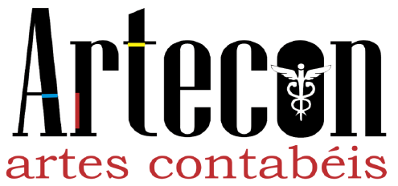

<!DOCTYPE html>
<html lang="pt-BR">
<head>
<meta charset="utf-8">
<meta name="viewport" content="width=device-width, initial-scale=1">
<meta name="robots" content="noindex">
<title>Radar Artecon — Curadoria</title>
<link rel="preconnect" href="https://fonts.googleapis.com">
<link href="https://fonts.googleapis.com/css2?family=DM+Sans:wght@400;500;700&family=Playfair+Display:wght@600;700&display=swap" rel="stylesheet">
<style>
:root{
  --marinho:#011F48; --azul:#569DCC; --azul-claro:#E8F1F9; --vermelho:#BC151B; --cinza:#4F4C4D;
  --cinza-claro:#DEDEDE; --linha:#E3E7EC; --fundo:#FBFEFE; --branco:#fff;
  --ok:#1E7B4A; --ok-fundo:#E6F4EC; --alerta:#9A6200; --alerta-fundo:#FFF4D9; --erro:#BC151B; --erro-fundo:#FBE9EA;
}
*{box-sizing:border-box}
html,body{margin:0}
body{font-family:"DM Sans",system-ui,sans-serif;color:var(--cinza);background:#F1F4F7;font-size:15px;line-height:1.45}
h1,h2,h3{font-family:"Playfair Display",Georgia,serif;color:var(--marinho);margin:0 0 .5em}
h1{font-size:1.5rem} h2{font-size:1.25rem} h3{font-size:1.05rem}
a{color:#1B5E9B}
button,input,select,textarea{font:inherit;color:inherit}
/* cabeçalho no padrão do papel timbrado: logotipo sobre branco e a faixa marinho → azul */
.tricolor{height:4px;background:linear-gradient(90deg,var(--vermelho) 0 68%,#00AEEF 68% 90%,#FFD700 90% 100%)}
.topo{background:#fff;color:var(--cinza);padding:10px 20px;display:flex;align-items:center;gap:16px;flex-wrap:wrap}
.topo .logo{height:52px;width:auto;display:block}
.marca{font-family:"Playfair Display",serif;font-weight:700;font-size:1.35rem;color:var(--marinho);line-height:1.1;border-left:2px solid var(--linha);padding-left:16px}
.marca small{display:block;font-family:"DM Sans",sans-serif;font-weight:500;font-size:.72rem;color:var(--vermelho);letter-spacing:1.6px;text-transform:uppercase;margin-top:3px}
.versao{background:var(--azul-claro);border:1px solid #C9DDEE;border-radius:999px;padding:2px 11px;font-size:.78rem;cursor:pointer;color:var(--marinho);font-weight:700}
.quem{margin-left:auto;font-size:.85rem;display:flex;gap:10px;align-items:center}
.quem button{background:#fff;border:1px solid var(--marinho);color:var(--marinho);border-radius:6px;padding:4px 12px;cursor:pointer}
.faixa{height:7px;background:linear-gradient(90deg,var(--marinho) 0%,#1B5E9B 55%,var(--azul) 100%)}
.rodape{max-width:1180px;margin:0 auto;padding:0 16px 28px;font-size:.78rem;color:#6B7480;text-align:center}
.rodape b{color:var(--marinho)}
.logo-entrada{display:block;width:210px;max-width:70%;height:auto;margin:0 auto 14px}
.passos{counter-reset:passo;list-style:none;padding:0;margin:0}
.passos>li{counter-increment:passo;position:relative;padding:0 0 14px 46px}
.passos>li::before{content:counter(passo);position:absolute;left:0;top:0;width:30px;height:30px;border-radius:50%;background:var(--marinho);color:#fff;font-weight:700;display:flex;align-items:center;justify-content:center}
.passos>li b:first-child{color:var(--marinho)}
nav.abas{background:#fff;border-bottom:1px solid var(--linha);display:flex;gap:2px;padding:0 10px;overflow-x:auto}
nav.abas button{background:none;border:0;border-bottom:3px solid transparent;padding:11px 12px;cursor:pointer;white-space:nowrap;color:var(--cinza)}
nav.abas button.ativa{border-bottom-color:var(--vermelho);color:var(--marinho);font-weight:700}
nav.abas .conta{background:var(--vermelho);color:#fff;border-radius:999px;font-size:.72rem;padding:0 6px;margin-left:4px}
main{max-width:1180px;margin:0 auto;padding:18px 16px 60px}
.cartoes{display:grid;grid-template-columns:repeat(auto-fit,minmax(150px,1fr));gap:12px;margin-bottom:20px}
.cartao{background:#fff;border:1px solid var(--linha);border-top:3px solid var(--azul);border-radius:10px;padding:12px 14px;cursor:pointer;text-align:left;box-shadow:0 1px 2px rgba(1,31,72,.06)}
.cartao.alerta{border-top-color:var(--vermelho)}
.cartao b{display:block;font-size:1.7rem;color:var(--marinho);font-family:"Playfair Display",serif}
.cartao span{font-size:.82rem}
.cartao.alerta b{color:var(--vermelho)}
.painel{background:#fff;border:1px solid var(--linha);border-radius:10px;padding:16px;margin-bottom:16px;box-shadow:0 1px 2px rgba(1,31,72,.06)}
main h1{border-left:5px solid var(--vermelho);padding-left:12px}
#tab-fontes form{position:sticky;left:0;max-width:calc(100vw - 68px)}
.linha-filtros{display:flex;gap:8px;flex-wrap:wrap;margin-bottom:12px;align-items:center}
input[type=text],input[type=email],input[type=password],input[type=number],input[type=datetime-local],select,textarea{
  border:1px solid #C9D2DC;border-radius:7px;padding:7px 9px;background:#fff;max-width:100%}
textarea{width:100%;min-height:90px;resize:vertical}
label{display:block;font-size:.8rem;font-weight:700;color:var(--marinho);margin:8px 0 3px}
.grade{display:grid;grid-template-columns:repeat(auto-fit,minmax(190px,1fr));gap:10px}
.grade input,.grade select{width:100%}
.btn{background:var(--marinho);color:#fff;border:0;border-radius:7px;padding:7px 13px;cursor:pointer}
.btn:hover{background:#0A3470}
.btn.sec{background:#fff;color:var(--marinho);border:1px solid var(--marinho)}
.btn.perigo{background:#fff;color:var(--vermelho);border:1px solid var(--vermelho)}
.btn.verde{background:var(--ok)}
.btn.peq{padding:3px 9px;font-size:.82rem}
.btn:disabled{opacity:.5;cursor:not-allowed}
table{width:100%;border-collapse:collapse}
th{white-space:nowrap;text-align:left;font-size:.78rem;text-transform:uppercase;letter-spacing:.4px;color:var(--marinho);border-bottom:2px solid var(--linha);padding:7px 8px}
td{border-bottom:1px solid var(--linha);padding:8px;vertical-align:top}
.rolagem{overflow-x:auto}
td.email{min-width:170px}
.selo{display:inline-block;border-radius:999px;padding:1px 9px;font-size:.75rem;font-weight:700;white-space:nowrap;background:var(--azul-claro);color:var(--marinho)}
.selo.ok{background:var(--ok-fundo);color:var(--ok)}
.selo.alerta{background:var(--alerta-fundo);color:var(--alerta)}
.selo.erro{background:var(--erro-fundo);color:var(--erro)}
.selo.neutro{background:#EEF0F2;color:var(--cinza)}
.sub{font-size:.82rem;color:#5A636D}
.aviso .sub{color:inherit}
main{overflow-wrap:anywhere}
.titulo-link{background:none;border:0;padding:0;font-weight:700;color:var(--marinho);cursor:pointer;text-align:left}
.titulo-link:hover,.titulo-link:focus-visible{text-decoration:underline}
body.ocupado{cursor:progress}
.texto-oficial{border:1px solid var(--linha);border-radius:8px;background:#FCFDFE;padding:12px;max-height:300px;overflow:auto;white-space:pre-wrap;font-size:.92rem;user-select:text}
.evidencia{border-left:4px solid var(--ok);background:var(--ok-fundo);padding:8px 12px;border-radius:0 8px 8px 0;margin:8px 0}
.evidencia.nao{border-left-color:var(--erro);background:var(--erro-fundo)}
.evidencia q{font-style:italic}
.aviso{border-radius:8px;padding:10px 12px;margin:10px 0}
.aviso.erro{background:var(--erro-fundo);color:var(--erro);border:1px solid #F0C2C4}
.aviso.alerta{background:var(--alerta-fundo);color:var(--alerta);border:1px solid #F1DDA5}
.aviso.info{background:var(--azul-claro);color:var(--marinho);border:1px solid #C9DDEE}
.previa{border:1px dashed #B8C4D0;border-radius:8px;padding:14px;background:#fff}
.previa h2,.previa h3{margin-top:.8em}
.acoes{display:flex;gap:8px;flex-wrap:wrap;margin-top:10px;align-items:center}
.entrada{max-width:380px;margin:8vh auto;background:#fff;border:1px solid var(--linha);border-top:6px solid var(--marinho);border-radius:12px;padding:26px;box-shadow:0 6px 24px rgba(1,31,72,.10)}
.entrada input{width:100%}
.logo-nome{font-family:"Playfair Display",serif;font-size:2rem;font-weight:700;color:var(--cinza);line-height:1}
.logo-sub{color:var(--vermelho);letter-spacing:3px;font-size:.8rem;text-transform:lowercase;margin-bottom:16px}
#recado{pointer-events:none;position:fixed;right:16px;bottom:16px;max-width:min(440px,calc(100vw - 32px));z-index:50;display:grid;gap:8px}
#recado div{background:var(--marinho);color:#fff;border-radius:8px;padding:10px 14px;box-shadow:0 6px 18px rgba(0,0,0,.2)}
#recado div.erro{background:var(--vermelho)}
.voltar{background:none;border:0;color:#1B5E9B;cursor:pointer;padding:0;margin-bottom:10px}
.clicavel{cursor:pointer}
.clicavel:hover td{background:#F5F9FC}
details summary{cursor:pointer;color:#1B5E9B}
.previa table,.tabela-texto{border-collapse:collapse;margin:10px 0}
.previa td,.previa th{border:1px solid #9AA7B4;padding:5px 8px;text-transform:none;letter-spacing:0;font-size:inherit}
.miniatura{max-width:220px;max-height:140px;border:1px solid var(--linha);border-radius:8px;display:block;margin:6px 0}
.agenda-ed td{vertical-align:top} .agenda-ed textarea{min-height:0} .btn{white-space:nowrap}
textarea.json{font-family:monospace;min-height:200px;font-size:.85rem}
/* v0.6.0: filtros em botões, cartões de captura e trilha de passos do assunto */
.chips{display:flex;gap:6px;flex-wrap:wrap}
.chip{background:#fff;border:1px solid #C9D2DC;border-radius:999px;padding:5px 13px;cursor:pointer;color:var(--marinho)}
.chip.ativa{background:var(--marinho);border-color:var(--marinho);color:#fff;font-weight:700}
.chip b{font-weight:700;margin-left:4px}
.cap{background:#fff;border:1px solid var(--linha);border-left:5px solid var(--azul);border-radius:10px;padding:12px 14px;margin-bottom:10px;box-shadow:0 1px 2px rgba(1,31,72,.06)}
.cap.rel-alta{border-left-color:var(--vermelho)} .cap.rel-baixa{border-left-color:#C9D2DC}
.cap h3{font-family:"DM Sans",system-ui,sans-serif;font-size:1rem;margin:6px 0 4px}
.cap p{margin:0 0 4px}
.cap .acoes{margin-top:8px}
.trilha{display:flex;gap:6px;flex-wrap:wrap;list-style:none;padding:0;margin:0 0 12px}
.trilha li{flex:1;min-width:120px;background:#fff;border:1px solid var(--linha);border-top:4px solid #C9D2DC;border-radius:8px;padding:8px 10px;font-size:.85rem}
.trilha li b{display:block;color:var(--marinho)}
.trilha li.feito{border-top-color:var(--ok)} .trilha li.feito span{color:var(--ok)}
.trilha li.agora{border-top-color:var(--vermelho);background:#FFF9F0}
.proximo{border:1px solid #F1DDA5;background:var(--alerta-fundo);border-radius:10px;padding:12px 14px;margin-bottom:16px}
.proximo.fim{border-color:#BFE0CC;background:var(--ok-fundo)}
.proximo h2{font-size:1.05rem;margin:0 0 4px}
.previa p,.previa li{text-align:justify}
#recado div.aviso{background:#8A5A00}
.trilha li{cursor:pointer}
.trilha li.aberta{box-shadow:0 0 0 2px var(--marinho) inset}
/* v0.10.0: tela do assunto em quatro passos, com o quadro lateral */
.trilha.passos4 li{border-top-width:5px}
.trilha.passos4 li.aberta{background:var(--marinho);border-color:var(--marinho)} .trilha.passos4 li.aberta b,.trilha.passos4 li.aberta span{color:#fff}
.proximo{display:flex;gap:14px;align-items:center;flex-wrap:wrap} .proximo > div:first-child{flex:1;min-width:240px} .proximo .acoes{margin:0}
.proximo .acoes .btn{padding:10px 18px;font-weight:700}
/* v0.12.2: trilha de autorização — barra numerada e um passo de cada vez, com os botões só no passo de agora */
.trilha.passos7{display:grid;grid-template-columns:repeat(7,minmax(0,1fr));gap:4px}
.trilha.passos7 li{min-width:0;background:none;border:0;border-radius:8px;padding:6px 2px;display:flex;flex-direction:column;align-items:center;gap:3px;text-align:center;font-size:.78rem}
.trilha.passos7 li i{font-style:normal;width:34px;height:34px;border-radius:50%;border:2px solid #C9D2DC;background:#fff;color:#8A96A3;font-weight:700;display:flex;align-items:center;justify-content:center;font-variant-numeric:tabular-nums}
.trilha.passos7 li b{color:#8A96A3} .trilha.passos7 li span{color:#8A96A3;font-size:.72rem;overflow-wrap:anywhere}
.trilha.passos7 li.feito i{background:var(--ok);border-color:var(--ok);color:#fff} .trilha.passos7 li.feito b,.trilha.passos7 li.feito span{color:var(--ok)}
.trilha.passos7 li.agora i{border-color:var(--azul);color:var(--marinho);box-shadow:0 0 0 4px var(--azul-claro)} .trilha.passos7 li.agora b{color:var(--marinho)}
.trilha.passos7 li.pendente i{border-color:var(--alerta);color:var(--alerta)}
.trilha.passos7 li.breve{cursor:default} .trilha.passos7 li.breve i{border-style:dashed}
.trilha.passos7 li.aberta{background:var(--azul-claro);box-shadow:none}
.autorizacao{list-style:none;padding:0;margin:0 0 16px;display:flex;flex-direction:column;gap:8px}
.passo-a{background:#fff;border:1px solid var(--linha);border-radius:10px;padding:10px 14px;display:grid;grid-template-columns:30px minmax(0,1fr);gap:2px 12px;align-items:start}
.passo-a .num{width:30px;height:30px;border-radius:50%;border:2px solid #C9D2DC;color:#8A96A3;font-weight:700;display:flex;align-items:center;justify-content:center;grid-row:span 2;font-variant-numeric:tabular-nums}
.passo-a .cab{display:flex;flex-wrap:wrap;gap:4px 10px;align-items:center;min-width:0} .passo-a h3{font-size:1rem;margin:0}
.passo-a .estado{font-size:.7rem;font-weight:700;letter-spacing:.05em;text-transform:uppercase;border-radius:999px;padding:2px 9px;background:#EEF1F4;color:#7A8591}
.passo-a .corpo{grid-column:2;min-width:0;font-size:.9rem} .passo-a .corpo p{margin:2px 0 0} .passo-a .corpo .acoes{margin:8px 0 0}
.passo-a.feito .num{background:var(--ok);border-color:var(--ok);color:#fff} .passo-a.feito .estado{background:var(--ok-fundo);color:var(--ok)}
.passo-a.agora{border-color:var(--azul);box-shadow:0 0 0 3px var(--azul-claro);padding:14px 16px} .passo-a.agora .num{border-color:var(--azul);color:var(--marinho)}
.passo-a.agora .estado{background:var(--azul-claro);color:var(--marinho)} .passo-a.agora .acoes .btn{padding:10px 18px;font-weight:700}
.passo-a.pendente .num{border-color:var(--alerta);color:var(--alerta)} .passo-a.pendente .estado{background:var(--alerta-fundo);color:var(--alerta)}
.passo-a.espera,.passo-a.breve{background:transparent;color:#7A8591} .passo-a.espera h3,.passo-a.breve h3{color:#7A8591} .passo-a.breve .num{border-style:dashed}
.prox-titulo{color:var(--marinho);display:block}
.link{background:none;border:0;padding:0;color:var(--azul);text-decoration:underline;cursor:pointer;font:inherit}
.motivo-liberar{border:1px dashed var(--erro);border-radius:8px;padding:10px 12px;margin:8px 0 0;background:#fff} .motivo-liberar label{color:var(--erro);margin-top:0}
.motivo-liberar input{width:100%} .motivo-liberar .acoes{align-items:center}
/* v0.14.0: verificação em fontes oficiais */
.verificacao .fontes-verif{margin:6px 0;padding-left:18px} .verificacao .fontes-verif li{margin:0 0 8px}
.acoes .btn{max-width:100%;white-space:normal}
/* v0.13.0: montagem da publicação nas redes */
.rede-montagem{display:grid;grid-template-columns:minmax(0,260px) minmax(0,1fr);gap:14px;margin:10px 0 0;align-items:start}
.rede-imagem{width:100%;aspect-ratio:1;max-width:100%;border-radius:8px;border:1px solid var(--linha);background:var(--azul-claro);object-fit:cover}
.rede-legenda{display:flex;flex-direction:column;gap:4px;min-width:0} .rede-legenda label{margin:0} .rede-legenda textarea{min-height:200px;width:100%}
@media (max-width:640px){.rede-montagem{grid-template-columns:minmax(0,1fr)}}
.excluir-grupo{align-items:center} .excluir-grupo label{display:inline-flex;gap:4px;align-items:center;margin:0}
details.todos{margin:12px 0 0} details.todos summary{cursor:pointer} .rede-legenda label input{width:auto;margin:0 4px 0 0}
details.excluidas{margin:10px 0 0} details.excluidas summary{cursor:pointer}
@media (max-width:560px){.trilha.passos7 li i{width:28px;height:28px}.trilha.passos7 li span,.trilha.passos7 li b{display:none}}
.assunto-corpo{display:grid;grid-template-columns:290px minmax(0,1fr);gap:16px;align-items:start}
.lateral .painel{padding:14px} .lateral h3{margin-bottom:6px} .lateral label{display:block;margin-top:8px}
.lateral input,.lateral select,.lateral textarea{width:100%}
.lateral summary{cursor:pointer;color:var(--marinho)}
.checagem{list-style:none;padding:0;margin:0 0 8px;font-size:.9rem} .checagem li{margin:3px 0} .checagem li.ok{color:var(--ok)} .checagem li.falta{color:var(--alerta)}
.original{display:flex;flex-direction:column;gap:3px;background:#F5F8FB;border:1px solid var(--linha);border-radius:8px;padding:10px 12px;margin-bottom:8px}
.original b{color:#2B2829;font-size:1.02rem}
.ia-barra{align-items:center}
.opcoes-titulo{margin:6px 0 4px} .chips{display:flex;flex-wrap:wrap;gap:6px;margin-top:4px}
.chip{border:1px solid #C5DBEE;background:#F5F9FD;color:#1F4E79;border-radius:16px;padding:4px 11px;cursor:pointer;font-size:.88rem;text-align:left}
.chip:hover{background:var(--azul-claro)} .chip.outro{border-style:dashed;background:#fff;color:var(--cinza)}
.canal{display:inline-block;border-radius:999px;padding:1px 9px;font-size:.78rem;font-weight:700;white-space:nowrap}
.canal.ok{background:var(--ok-fundo);color:var(--ok)} .canal.espera{background:var(--alerta-fundo);color:var(--alerta)}
.canal.erro{background:var(--erro-fundo);color:var(--erro)} .canal.falta{background:#EEF0F2;color:var(--cinza)} .canal.breve{background:#F5F6F8;color:#8A9099;font-weight:500}
#ia-trabalhando{position:fixed;top:12px;left:50%;transform:translateX(-50%);z-index:60;background:var(--marinho);color:#fff;border-radius:999px;padding:9px 18px;
  display:flex;gap:10px;align-items:center;box-shadow:0 6px 24px rgba(1,31,72,.35);font-weight:500;max-width:calc(100vw - 24px)}
#ia-trabalhando .sub{color:#CFE0EF}
.giro{width:16px;height:16px;border:3px solid rgba(255,255,255,.35);border-top-color:#fff;border-radius:50%;animation:giro 1s linear infinite;flex:none}
@keyframes giro{to{transform:rotate(360deg)}}
.caixa-senha{max-width:420px}
.publicar-item{border:1px solid var(--linha);border-radius:8px;padding:12px;margin-bottom:12px;background:#FCFDFE}
.fundo-previa{position:fixed;inset:0;background:rgba(1,31,72,.55);z-index:50;display:flex;align-items:flex-start;justify-content:center;padding:28px 16px;overflow:auto}
.caixa-previa{background:#fff;border-radius:12px;max-width:820px;width:100%;box-shadow:0 10px 40px rgba(0,0,0,.25);overflow:hidden}
.barra-previa{display:flex;gap:10px;align-items:center;justify-content:space-between;background:var(--azul-claro);color:var(--marinho);padding:8px 14px;font-size:.88rem}
.caixa-previa .previa{border:0;border-radius:0;padding:22px 30px;overflow-wrap:anywhere}
.caixa-previa .previa h2{font-family:Georgia,serif;color:#1C1A1B;font-size:1.6rem;margin-top:.4em}
.capa-previa{width:100%;max-height:380px;object-fit:cover;border-radius:6px;display:block;margin:6px 0 12px}
@media (max-width:860px){ .assunto-corpo{grid-template-columns:minmax(0,1fr)} .lateral{order:2} .caixa-previa .previa{padding:16px} }
.etapas{display:flex;gap:6px;flex-wrap:wrap;align-items:center;margin:0 0 12px;border-bottom:2px solid var(--linha)}
.etapas button{background:none;border:0;border-bottom:3px solid transparent;margin-bottom:-2px;padding:9px 14px;cursor:pointer;color:var(--cinza);font-weight:500}
.etapas button.ativa{border-bottom-color:var(--vermelho);color:var(--marinho);font-weight:700}
.etapas .modo{margin-left:auto;font-size:.82rem}
.copiado{background:#FFE8A3;border-radius:3px;padding:0 2px}
.diag{list-style:none;padding:0;margin:8px 0}
.diag li{padding:6px 0;border-bottom:1px solid var(--linha)}
@media (max-width:640px){ main{padding:12px 16px 60px} td,th{padding:6px 5px} .quem{margin-left:0} .topo{padding:8px 14px;gap:10px} .topo .logo{height:38px} .marca{font-size:1.1rem;padding-left:10px} }
</style>
</head>
<body>
<div id="app"></div>
<div id="recado" role="status" aria-live="polite"></div>

<script src="radar-config.js"></script>
<script>
"use strict";
/* ====================================================================
   RADAR ARTECON — Central de Curadoria
   ==================================================================== */
const VERSAO = "0.17.0";
const FUNCAO_MINIMA = "0.16.0";     // versão da função radar-ia que este painel exige (v0.16.0: "Revisar com IA")
const versaoMenor = (a, b) => { const x = String(a).split(".").map(Number), y = String(b).split(".").map(Number);
  for(let i = 0; i < 3; i++){ if((x[i] || 0) !== (y[i] || 0)) return (x[i] || 0) < (y[i] || 0); } return false; };
const VERSOES = [
  ["0.17.0", "09/10/2026", [
    "Publicar em todos: no passo da publicação, “Publicar em todos de uma vez” autoriza o site, o Instagram e o Facebook com um clique só, depois de conferir a categoria, a imagem e as duas legendas. O robô publica no site em até 15 minutos e, logo que a notícia entra no site, publica no Instagram e no Facebook (o link da notícia entra no lugar de {LINK DO SITE}). Se o site não sair ou o texto mudar, as redes caem junto.",
    "Excluir publicação: na aba Publicações, cada canal publicado tem o botão “Excluir”, e dá para marcar vários conteúdos e excluir de uma vez, escolhendo site, Instagram e Facebook. No Instagram e no Facebook a exclusão é na hora, pela Meta; no site, o robô entra no painel e exclui a notícia em até 15 minutos (só com o pedido do administrador, e só quando acha exatamente uma notícia com aquele título). Se a Meta não deixar apagar pelo Radar, apague direto na rede e registre com “Já apaguei”."]],
  ["0.16.0", "09/10/2026", [
    "Texto da IA sem marca nem comentário de dúvida: nada de “[VERIFICAR: a fonte indica 30/9, mas não especifica o ano]” ou “a fonte cita tanto ADI 5.161 quanto ADI nº 5.161/DF” dentro do texto. O que não está confirmado sai do texto (ou é escrito sem o detalhe incerto) e aparece nos pontos a conferir, em “Ficou fora do texto por falta de confirmação”. No “Gerar texto para análise” (e no “Preparar tudo”) de assunto sem fonte oficial, a IA primeiro procura a fonte oficial na internet (uma vez por assunto), para confirmar o que puder.",
    "Sem cópia: a IA diz de onde veio a informação (“segundo a Receita Federal…”) e, se ainda sobrar trecho igual ao da fonte, uma segunda passada reescreve antes de gravar. No quadro “Texto igual ao da fonte” há dois botões: “Revisar com IA”, que reescreve só esses trechos citando a fonte, e “Autorizar mesmo assim”, com o motivo registrado (vale para o texto atual; se o texto mudar, a autorização cai). “Revisar com IA” também resolve as marcas [VERIFICAR].",
    "Capa com imagem: a capa feita pela IA agora é a ilustração ao fundo com o logotipo da Artecon, a categoria e o título por cima. A ilustração fica guardada: depois de trocar o título, “Atualizar a capa” refaz a capa com o título novo sem gerar outra imagem.",
    "Capturas: a IA da triagem não junta mais como “mesmo fato” notícias de tributos diferentes (ex.: crédito presumido de ICMS na base do PIS/Cofins e na base do IRPJ/CSLL). O cartão mostra os títulos das repetições, cada uma com o botão “Não é o mesmo fato”, que a devolve à lista."]],
  ["0.15.0", "08/10/2026", [
    "Capturas: cada cartão diz se a notícia tem fundamentação legal — “com fundamentação legal” (e quais leis, decretos, instruções normativas, resoluções, portarias, soluções de consulta ou convênios ela cita) ou “sem fundamentação legal” (o texto não cita norma nenhuma: confira na fonte antes de usar); se o texto capturado estiver cortado, “fundamentação legal não identificada”. Quando a captura é o próprio ato (ex.: uma Solução de Consulta), o cartão diz qual é. Se a captura não cita norma, mas outra captura do mesmo fato cita, o cartão mostra a da outra. A leitura é feita pelo banco no texto capturado, sem custo de IA, e vale também para as capturas que já estavam na fila; projeto de lei e decisão judicial não contam."]],
  ["0.14.3", "07/10/2026", [
    "Nenhum ponto marcado com [VERIFICAR] vai ao leitor: enquanto o título, o texto ou a legenda tiver alguma marca, o Radar não deixa aprovar nem autorizar a publicação no site, no Instagram ou no Facebook, e a mensagem de erro mostra cada marca que falta resolver. O quadro vermelho no conteúdo aponta as marcas antes mesmo de tentar.",
    "Instagram e Facebook: o META_PAGE_TOKEN aceita o token do usuário do sistema (o Radar busca sozinho o token da Página), e as funções radar-redes e radar-itc passaram a usar a chave interna nova do Supabase."]],
  ["0.14.0", "07/10/2026", [
    "Verificação em fontes oficiais: no passo 1, “Verificar em fontes oficiais” faz a IA procurar o assunto na internet, só em sites de órgão público (gov.br, jus.br, leg.br), e mostra se a informação foi confirmada, confirmada em parte, não encontrada ou se diverge, com o link de cada página oficial. “Incluir como texto oficial” traz o texto da página para o formulário: é só conferir e gravar.",
    "Textos melhores: a “Análise Artecon” passa a dizer quem é afetado, o que conferir ou providenciar e até quando, o risco de não agir e quando procurar a Artecon. O texto não traz mais avisos como “este informativo é baseado em material de fonte não oficial” (o aviso continua interno, nos pontos a conferir). Ao gerar, a IA usa a verificação: o que a fonte oficial confirmou deixa de ser marcado com [VERIFICAR]. Banco v0.14.0 e função radar-ia v0.14.0."
  ]],
  ["0.13.0", "07/10/2026", [
    "Instagram e Facebook na trilha de autorização (passos 6 e 7): depois que a notícia está no site, o administrador confere a imagem quadrada (montada a partir da capa) e a legenda (título, começo do texto, fonte e o caminho até o site; no Instagram, as hashtags), e clica em “Autorizar e publicar”. A publicação sai na hora pela API da Meta e o link fica registrado. Também dá para escolher “Não publicar”.",
    "Publicações › Canais mostra o Instagram e o Facebook de cada conteúdo, e o administrador tem “Testar conexão com o Instagram e o Facebook”. Banco v0.13.0 (tabela radar_redes_envios) e função nova radar-redes no Supabase. Funciona assim que a Meta estiver configurada (segredos META_PAGE_ID, META_PAGE_TOKEN e META_IG_USER_ID)."
  ]],
  ["0.12.2", "06/10/2026", [
    "Trilha de autorização no assunto: no alto, os passos numerados (1 Fonte, 2 Texto, 3 Revisão, 4 Aprovar, 5 Site; Instagram e Facebook em breve) e, abaixo, um passo de cada vez. Só o passo de agora tem os botões; os feitos mostram o que foi feito e os seguintes ficam aguardando.",
    "“Publicar mesmo assim…” abre o campo do motivo na própria tela (sem a janelinha do navegador). “Enviar para revisão” e “Aprovar” também ficam na trilha. Só a tela mudou: o banco continua na v0.12.1."
  ]],
  ["0.12.1", "06/10/2026", [
    "O texto para análise vai por último na lista; depois de transformado, o botão some e a tela vai até a cópia. O passo 4 sem conteúdo aprovado diz o que falta e leva ao conteúdo em revisão.",
    "Texto para análise com a publicação liberada (“Publicar mesmo assim”): o administrador tem “Transformar em texto para publicar”, que cria uma cópia normal do texto em rascunho; ela segue revisão, aprovação e autorização do site como qualquer conteúdo. Banco v0.12.1."
  ]],
  ["0.12.0", "06/10/2026", [
    "Boletim da ITC dentro do aplicativo: a função radar-itc lê os e-mails da ITC no Outlook (Microsoft Graph) 1 vez por dia, às 02h55, a IA separa as matérias e elas entram na triagem como antes. Não depende mais de uma conversa aberta. Na aba Fontes, o administrador tem “Ler boletim agora” e “Testar conexão com o e-mail”.",
    "Publicação no site com o texto justificado (como já era na prévia e no “Copiar texto”); os créditos continuam à direita.",
    "Aviso “Ainda não pode ser publicado no site”: agora com os botões “Marcar como confirmado oficialmente”, “Buscar o trecho que comprova” e, para o administrador, “Publicar mesmo assim” (pede o motivo, que fica registrado; dá para desfazer). O texto para análise continua sem ir ao site.",
    "“Gerar texto para análise” cria também a ilustração com IA; “Preparar tudo” num assunto sem fonte oficial prepara o texto para análise com a ilustração. Se a ilustração falhar, a próxima tentativa pelo botão dela não pede senha."
  ]],
  ["0.11.1", "06/10/2026", [
    "IA: a consulta fica presa ao assunto em que foi pedida; se você trocar de tela enquanto ela trabalha, o resultado não é aplicado no outro assunto (e o aviso diz onde ficou).",
    "Clique em “Salvar” ou em outra ação enquanto uma ação longa está em andamento agora avisa para aguardar, em vez de não fazer nada.",
    "Triagem: a notícia oficial nunca fica escondida atrás do boletim da ITC (ou de outra fonte não oficial) — o boletim é que vira a repetição dela.",
    "Consumo de IA do mês contado no mês de Brasília. Coleta com prazo total: o que não couber fica para a próxima rodada, sem travar o robô. Banco v0.11.1 e função de IA v0.11.1."
  ]],
  ["0.11.0", "06/10/2026", [
    "IA: enquanto ela trabalha, um aviso no alto da tela diz o que está fazendo (buscando o trecho, escrevendo, criando a ilustração…) e há quantos segundos.",
    "IA: no mesmo assunto, a 1ª consulta é livre; a partir da 2ª, o Radar pede a senha de quem está logado. “Preparar tudo” conta como uma consulta só.",
    "“Preparar tudo com IA” passa a criar também a ilustração da capa com IA; se ela falhar, fica a capa padrão Artecon.",
    "“Gerar texto para análise”: em assunto que só tem fonte não oficial (ITC, Econet, Portal Contábil), a IA escreve um texto para estudo, marcado como tal. Ele não vai ao site: para publicar, inclua o texto oficial.",
    "A fonte sai sempre com o link da notícia ou norma de origem no fim do texto (na prévia, no “Copiar texto” e na publicação no site).",
    "Publicações: novo quadro “Onde cada conteúdo já foi publicado”, com Site (publicado, aguardando o robô ou falta) e as colunas de Instagram e Facebook, que entram em breve.",
    "Capturas: notícia com mais de 5 dias (pela data da notícia ou, sem ela, da captura) vira baixa relevância e mostra o selo “notícia com mais de 5 dias”. Ajuste em Configurações → Relevância das capturas (dias_baixa; 0 desliga). Banco v0.11.0 e função de IA v0.11.0."
  ]],
  ["0.10.0", "06/10/2026", [
    "Tela do assunto em 4 passos: 1. Conferir a fonte (com o título original da captura, o órgão, a data e o link para a fonte), 2. Escrever, 3. Revisar e aprovar, 4. Publicar no site. O próximo passo aparece em destaque, com o botão para fazer.",
    "Quadro ao lado: base do texto (texto oficial, trechos que comprovam, confirmação), capa e “Mais detalhes” (categoria, relevância, público, etapa).",
    "Opções de título: a IA sugere 3 títulos além do principal; clique para usar, ou em “↻ Sugerir outros”.",
    "“Tamanho do texto”: Curto (aviso rápido), Médio (notícia) ou Longo (artigo). A IA passou a escrever de forma mais natural, como um contador explicando ao cliente.",
    "“Ver como fica no site”: abre a notícia como ela vai aparecer em artecon.cnt.br/news (categoria, data, título, capa, texto, autor e fonte), com o que está digitado na tela.",
    "Publicar no site com autorização: no passo 4, o administrador escolhe a categoria e clica em “Autorizar publicação no site”; o robô cadastra a notícia no site em até 15 minutos e registra o link sozinho. Dá para cancelar enquanto o robô não começou; se o texto mudar depois de autorizado, a autorização cai sozinha.",
    "Capturas: as mais recentes aparecem primeiro (pela data da notícia). “Em alta” continua escolhendo as de maior nota da IA.",
    "Banco v0.10.0, robô v0.10.0 e função de IA v0.10.0. O restante do Radar não mudou."
  ]],
  ["0.9.0", "05/10/2026", [
    "Rascunhos automáticos: o robô prepara sozinho o rascunho das notícias de topo (fonte oficial, relevância alta, nota da IA 9 ou mais; no máximo 2 por dia), com as mesmas regras do “Gerar com IA”. Aparecem no Painel em “Rascunhos preparados pelo robô”. O robô não envia para revisão, não aprova e não publica. Ajuste em Configurações → Rascunhos automáticos.",
    "Relevância: notícia “alta” pelas palavras da lista (muitas vezes só genéricas: decreto, portaria, prazo...) com nota da IA até 3 desce para “média” (opção nota_rebaixa; -1 desliga). Sai do topo, mas continua na fila.",
    "A fila não acumula: o que está na triagem há mais de 10 dias e é baixa, ou tem nota da IA até 2, sai sozinho e vai para Assuntos → Ignorado (opções arquivar_dias e arquivar_nota; 0 dias desliga).",
    "DOU Destaques: só entram os atos fiscais (Receita, PGFN, CGSN, CGIBS, Fazenda) e as leis, decretos e medidas provisórias.",
    "Aviso “fonte parada”: se uma fonte ativa ficar 3 ciclos sem funcionar (por exemplo, a rotina diária do boletim da ITC parou), abre um aviso por e-mail; ele fecha sozinho quando a fonte volta.",
    "Resumo de segunda: passa a listar as fontes ativas sem notícia nova há mais de 5 dias. Banco v0.9.0 e robô v0.9.0. A função de IA não mudou."
  ]],
  ["0.8.0", "05/10/2026", [
    "Publicação no site registrada sozinha: a cada coleta, o robô procura a notícia em artecon.cnt.br/news e, quando ela corresponde a um conteúdo aprovado (título e texto), preenche o link e a data em “Publicações no site”. Na dúvida, não registra; o registro manual continua igual.",
    "Aviso por e-mail quando o texto publicado no site deixa de corresponder ao texto aprovado no Radar (fecha sozinho quando volta a bater).",
    "Para o site: os botões do conteúdo aprovado estão numerados (1. título, 2. texto, 3. imagem) e a tela indica a categoria correspondente no site.",
    "Resumo semanal: toda segunda-feira, um único e-mail (aviso no GitHub) com as notícias mais relevantes da semana, agrupadas por tema. Nada de um aviso por notícia.",
    "Diário Oficial completo pelo INLABS: atos da Receita, PGFN, CGSN e CGIBS, sem as unidades regionais. A fonte vem desligada; para ligar, cadastre-se no INLABS e grave o acesso nos segredos do GitHub (veja o LEIAME).",
    "Fontes novas (desligadas até você ligar): DOU Destaques, blog da Econet e Portal Contábil SC (o texto vem do próprio feed). Boletim da ITC lido no e-mail todo dia às 02h55.",
    "Relevância: notícia que ficou “baixa” só por não ter palavras da lista sobe para “média” quando a IA dá nota 8 ou mais (opção nota_promove). A que tem termo negativo (apreensão, concurso, leilão...) continua baixa.",
    "Tela de fontes: o aviso de padrão perigoso não barra mais o padrão do CGIBS e passa a recusar formas que travariam o robô.",
    "Limpeza: saiu a antiga publicação dentro do Radar (tabelas vazias). Banco v0.8.0 (rodar o radar-setup-v0.8.0.sql) e robô v0.8.0. A função de IA não mudou."
  ]],
  ["0.7.1", "04/10/2026", [
    "Texto não salvo não se perde: o título e o texto digitados num conteúdo ficam guardados neste navegador até serem salvos. Se a sessão cair no meio da edição, ao abrir o conteúdo de novo aparece “Recuperar o texto não salvo”. “Sair” com texto não salvo pede confirmação.",
    "Listas longas (capturas, assuntos, publicações, histórico e edições) carregam uma leva por vez, com o botão “Mostrar mais”, em vez de cortar nos itens mais recentes.",
    "Nova edição do informativo: o número sugerido acompanha o ano do mês escolhido (a numeração recomeça a cada ano).",
    "Depois de mudar o título de um conteúdo com imagem, aparece o lembrete de gerar a capa de novo (a imagem não é trocada sozinha).",
    "Regras de relevância aceitam termos com pontuação, como “S.A.” e “Ltda.”.",
    "Robô: cada fonte tem até 5 minutos por coleta (ajustável); a que travar é interrompida sem atrasar as outras. Ao fim de cada coleta, as imagens que ficaram sem uso são apagadas.",
    "Aviso por e-mail de fonte com falha: quando uma fonte falha 3 coletas seguidas, o robô abre um aviso (issue) no repositório do GitHub, e o GitHub manda o e-mail. O aviso fecha sozinho quando a fonte volta a funcionar ou é desligada. O mesmo vale para os links registrados em Publicações no site: o que passar a dar “página não encontrada” abre um aviso.",
    "Tabela no texto: para uma barra dentro da célula, escreva “\\|”.",
    "Diagnóstico das fontes: confere as fontes ativas do banco (inclusive as cadastradas pela tela) e mostra como está montada a página que não reconheceu.",
    "Atos normativos da Receita: o site passou para o novo sistema “Normas”, que não permite leitura automática; desligue a fonte em Fontes até haver outro caminho.",
    "Banco v0.7.1 (rodar o radar-setup-v0.7.1.sql) e robô v0.7.1. A função de IA não mudou."
  ]],
  ["0.7.0", "03/10/2026", [
    "Só o que está em alta: depois de cada coleta, a IA dá a cada captura uma nota de 0 a 10 pelo interesse para os clientes do escritório. A tela de Capturas abre com as 10 melhores; o restante fica em “Relevantes” e “Todas”. A nota de corte e a quantidade ficam em Configurações → Relevância das capturas.",
    "Sem informação repetida: a IA reconhece quando duas capturas tratam do mesmo fato. As repetições ficam recolhidas atrás de uma delas (o cartão diz quantas são); ao abrir ou ignorar esse cartão, elas vão junto. A repetição que chegar depois entra sozinha no assunto em andamento (com o botão “Não é o mesmo fato” para desfazer); se o assunto já foi ignorado ou publicado, ela aparece na triagem avisando de qual assunto parece ser — nada some sem alguém ver.",
    "Fonte já preenchida: o conteúdo novo nasce com o órgão da captura oficial no campo Fonte.",
    "Texto nunca copiado: a IA é instruída a redigir com palavras próprias, e o Radar compara o texto com a fonte. Trecho de 12 palavras ou mais igual ao texto oficial aparece destacado e impede a aprovação até ser reescrito. Nome de norma, datas e nomes próprios não contam; citação curta entre aspas (até 40 palavras) é aceita.",
    "Texto justificado na prévia, no texto copiado para o site e no Informativo.",
    "Imagens realistas: a ilustração por IA passa a ser fotografia realista, pode ter pessoas (sempre fictícias, nunca alguém real) e nunca traz texto, marca, assinatura nem estilo de autor. Novo campo opcional para dizer como você quer a imagem; em branco, a IA escolhe pela notícia.",
    "Assunto por etapas: a tela mostra uma etapa de cada vez — Fonte e fundamentação, Conteúdo e Classificação — e abre na que falta fazer. Quem preferir vê tudo numa página só.",
    "O aviso de pontos a conferir depois de gerar com IA deixou de ser vermelho: agora é amarelo, porque não é erro.",
    "Banco v0.7.0 e robô v0.7.0 (novo segredo RADAR_IA_GATEWAY_TOKEN no GitHub)."
  ]],
  ["0.6.1", "03/10/2026", [
    "A IA do Radar passa a usar a IA Central do Portal Artecon: o texto (classificar, fundamentar e gerar) é feito pela Anthropic e a ilustração de capa pela OpenAI. As chaves das duas contas ficam só na IA Central; o Radar guarda apenas o seu token.",
    "O custo do Radar aparece no Portal → Consumo de IA, com limite mensal e diário próprios, junto com os demais aplicativos. Os avisos por e-mail (crédito acabando, limite atingido) e o relatório mensal são os da IA Central e trazem o link da página de recarga.",
    "O teste em Configurações → Inteligência artificial confere o token do Radar na IA Central e os modelos, e explica o que fazer quando o limite ou o crédito acabam.",
    "Nenhuma mudança no banco do Radar nesta versão."
  ]],
  ["0.6.0", "03/10/2026", [
    "Filtro de relevância: cada captura recebe uma nota (alta, média ou baixa) pelas regras de Configurações → Relevância das capturas. A tela de Capturas abre só com o que é relevante; o que é de baixa relevância (apreensões, leilões, atos individuais, eventos) fica separado e pode ser ignorado de uma vez.",
    "Capturas remodeladas: cartões com a relevância, o motivo da nota, o resumo e os botões no mesmo lugar; as mais relevantes aparecem primeiro.",
    "Assunto remodelado: no alto, os cinco passos (texto oficial, fundamentação, conteúdo, aprovação e site) com o que já foi feito e um quadro “Próximo passo” com o botão do que falta. Os campos menos usados ficam recolhidos em “Mais campos”.",
    "Botão “Preparar com IA”: busca os trechos de fundamentação e redige o rascunho de uma vez.",
    "Imagem de capa automática: todo conteúdo novo (escrito pela equipe ou gerado pela IA) já nasce com uma capa no padrão da Artecon, com o título. Também é possível gerar uma ilustração com IA ou enviar uma imagem própria.",
    "IA: novo teste em Configurações → Inteligência artificial, que mostra o que falta (função não instalada, chave da OpenAI, modelo indisponível, falta de crédito) e o que fazer. As mensagens de erro da IA ficaram mais claras.",
    "Informativo Mensal: a última página (Fale Conosco) segue o modelo enviado — telefones com indicação de WhatsApp ou telefone fixo, equipe em duas colunas, linha dos contadores responsáveis, legenda e fecho com espaço para a assinatura digital.",
    "Painel: o cartão de triagem conta só as capturas relevantes e informa quantas de baixa relevância ficaram de fora."
  ]],
  ["0.5.0", "02/10/2026", [
    "A página pública “Artecon Informa” foi retirada: as publicações são feitas nas páginas da Artecon. O botão “Publicar” e o agendamento saíram.",
    "A aba Publicações virou o registro do que foi ao site: no conteúdo aprovado, informe o link e a data da notícia publicada. O Radar guarda a cópia do texto que saiu e avisa se o conteúdo for alterado depois.",
    "Painel mostra quantos conteúdos aprovados ainda não foram publicados no site e quantos já foram.",
    "Banco: o visitante sem login não lê mais nada do Radar (antes lia as publicações no ar).",
    "A exigência de fonte oficial continua: para registrar a publicação no site, o assunto precisa estar confirmado oficialmente e ter ao menos um trecho conferido em fonte oficial. O registro guarda também a fundamentação.",
    "Fontes em aberto: o administrador cadastra, altera e exclui fontes na aba Fontes, sem mexer no sistema. O robô passa a ler a fonte nova na coleta seguinte.",
    "Texto oficial incluído pela equipe: na tela do assunto, cole o texto e o endereço da fonte oficial quando o robô ainda não capturou; a captura fica marcada como incluída manualmente.",
    "Apresentação no padrão da Artecon: logotipo, faixa do timbrado e rodapé com os dados do escritório.",
    "Nova aba “Como usar”, com o passo a passo do trabalho no Radar."
  ]],
  ["0.4.1", "02/10/2026", [
    "Instalação do banco corrigida: o script falhava no fim no SQL Editor do Supabase (erro “_radar_antes does not exist”). Agora não depende de tabela temporária e pode ser executado de novo por cima de uma instalação que parou no meio.",
    "Nenhuma mudança nas telas além deste registro."
  ]],
  ["0.4.0", "02/10/2026", [
    "Informativo Mensal: nova aba para montar cada edição (agenda de obrigações calculada pelas regras do escritório, artigos aprovados em ordem, Fale Conosco e fecho) e página pronta para imprimir ou salvar em PDF no papel timbrado.",
    "Conteúdos com imagem de capa, autor (“Texto elaborado por”) e fonte; tabelas no texto (linhas iniciadas por “|”).",
    "Assunto criado pela equipe, sem depender de captura do robô, para os artigos do informativo e do site.",
    "Botões para copiar o título e o texto formatado e baixar a imagem, para colar no site da Artecon.",
    "Artecon Informa no modelo das notícias do site: imagem de capa, autor, fonte e chamada para o Fale Conosco e o WhatsApp.",
    "Configurações (administrador): agenda de obrigações, feriados locais, Fale Conosco e assinatura."
  ]],
  ["0.3.0", "02/10/2026", [
    "Inteligência artificial (OpenAI) na tela do assunto: sugerir classificação, buscar trechos de fundamentação e gerar conteúdo.",
    "Tudo o que a IA produz é rascunho: os trechos só entram se existirem literalmente no texto oficial, e o texto gerado vem com a lista de pontos a conferir (normas, artigos, números e datas que não aparecem no texto oficial).",
    "Painel mostra o consumo da IA no mês.",
    "Fontes ajustadas ao que os sites reais mostraram: notícias da Receita pela página “Últimas notícias”; atos normativos da Receita por período, com várias páginas e ementa; data das notícias do CGIBS lida do próprio texto."
  ]],
  ["0.2.0", "02/10/2026", [
    "Primeira versão das telas: painel do dia, fila de capturas, assuntos, evidências por seleção do texto oficial, conteúdos, aprovação e publicação.",
    "Página pública Artecon Informa (informa.html), com fundamentação e fontes oficiais em cada publicação.",
    "Saúde das fontes, usuários e trilha de auditoria (administrador).",
    "Banco v0.2.0: fundamentação congelada na publicação, endereço automático, fila de triagem e números do painel."
  ]],
  ["0.1.0", "01/10/2026", [
    "Banco de dados com as regras de fundamentação, aprovação, publicação e auditoria.",
    "Robô de coleta de seis fontes oficiais e diagnóstico das fontes."
  ]]
];

const CFG = window.RADAR_CONFIG || {};
const URL_BASE = String(CFG.SUPABASE_URL || "").replace(/\/+$/, "");
const CHAVE = String(CFG.SUPABASE_ANON_KEY || "");
const CONFIGURADO = /^https?:\/\//.test(URL_BASE) && CHAVE.length > 20 && !CHAVE.startsWith("COLE_");

const ROTULOS = {
  situacao: {confirmado_oficialmente:"Confirmado oficialmente", confirmado_fontes_confiaveis:"Confirmado por fontes confiáveis",
             em_verificacao:"Em verificação", nao_confirmado:"Não confirmado", divergencia_identificada:"Divergência identificada"},
  status: {capturado:"Capturado", classificado:"Classificado", analisado:"Analisado", selecionado:"Selecionado",
           conteudo_gerado:"Conteúdo gerado", revisao:"Em revisão", aprovado:"Aprovado", publicado:"Publicado",
           ignorado:"Ignorado", arquivado:"Arquivado"},
  conteudo: {rascunho:"Rascunho", em_revisao:"Em revisão", aprovado:"Aprovado", rejeitado:"Rejeitado"},
  formato: {flash:"Flash", informativo:"Informativo", artigo:"Artigo técnico"},
  relevancia: {alta:"Alta", media:"Média", baixa:"Baixa"},
  abrangencia: {federal:"Federal", estadual_sc:"Estadual/SC", municipal:"Municipal", geral:"Geral"},
  natureza: {fato_oficial:"Fato oficial", interpretacao_tecnica:"Interpretação técnica", hipotese:"Hipótese"},
  publicacao: {rascunho:"Rascunho", publicado:"No ar", despublicado:"Fora do ar"},
  saude: {ok:"Funcionando", instavel:"Instável", falhando:"Falhando", atrasada:"Atrasada",
          nunca_executou:"Nunca executou", nunca_funcionou:"Nunca funcionou", inativa:"Inativa"},
  papel: {admin:"Administrador", editor:"Editor", leitor:"Leitor"},
  coletor: {html_links:"Página com lista de links", rss:"Feed RSS", normas_rfb:"Atos normativos da Receita (Normas)", inlabs:"Diário Oficial da União (INLABS)"}
};
const ESTRUTURA_PADRAO = ["## O que aconteceu?", "", "## O que mudou?", "", "## Quem será afetado?", "",
  "## Quando começa ou entra em vigor?", "", "## O que a empresa precisa observar?", "", "## Análise Artecon", ""].join("\n");

const E = { etapa:null, sessao:null, perfil:null, aba:"painel", assunto:null, informativo:null, categorias:[], contagem:{}, filtros:{assuntos:"abertos"}, mais:{} };
/* Listas longas: carregam uma leva por vez; "Mostrar mais" traz a seguinte (a contagem vale por tela e filtro) */
const limiteDe = (chave, base) => base * Math.max(1, (E.mais || {})[chave] || 1);
const botaoMais = (chave, n, limite, rotulo, total) => n >= limite
  ? `<div class="acoes mostrar-mais"><button class="btn sec" data-acao="mostrar-mais" data-chave="${h(chave)}">Mostrar mais ${rotulo}</button><span class="sub">Mostrando ${n}${total ? ` de ${total}` : ""} ${rotulo}.</span></div>` : "";

/* ----------------------------------------------------------- utilidades */
const $ = (s, r=document) => r.querySelector(s);
function h(v){ return String(v ?? "").replace(/[&<>"']/g, c => ({"&":"&amp;","<":"&lt;",">":"&gt;",'"':"&quot;","'":"&#39;"}[c])); }
function data(v){ if(!v) return "—"; const d = new Date(/^\d{4}-\d{2}-\d{2}$/.test(v) ? v+"T12:00:00" : v); return isNaN(d) ? "—" : d.toLocaleDateString("pt-BR"); }
function dataHora(v){ if(!v) return "—"; const d = new Date(v); return isNaN(d) ? "—" : d.toLocaleString("pt-BR", {dateStyle:"short", timeStyle:"short"}); }
function selo(texto, tipo=""){ return `<span class="selo ${tipo}">${h(texto)}</span>`; }
function opcoes(mapa, atual, vazio){ return (vazio!==undefined ? `<option value="">${h(vazio)}</option>` : "") +
  Object.entries(mapa).map(([k,v]) => `<option value="${h(k)}"${k===atual?" selected":""}>${h(v)}</option>`).join(""); }
function recado(msg, erro=false){
  const d = document.createElement("div"); if(erro) d.className = erro === "aviso" ? "aviso" : "erro"; d.textContent = msg;
  $("#recado").appendChild(d); setTimeout(() => d.remove(), erro ? 9000 : 4000);
}
/* link de publicação: completo, só com caracteres visíveis comuns (igual à regra do banco) */
// Repetição dentro de repetição, como (a+)+, pode travar o robô. Não é perigosa quando cada volta do grupo
// começa (ou termina) por um separador fixo que a parte repetida não aceita: (-[a-z0-9]+){4,} só avança de "-" em "-".
// Grupo repetido com outro grupo dentro, ou com alternativa ("|"), é sempre recusado: o robô não consegue garantir.
function repeticaoPerigosa(padrao){
  const p = padrao || "", pilha = [];
  const aceita = (k, c) => { try{ return new RegExp(k).test(c); }catch(e){ return true; } };
  const separadorSeguro = (c, resto) => {
    if(/(^|[^\\])\./.test(resto.replace(/\[(?:\\.|[^\]\\])*\]/g, ""))) return false;   // "." solto (dentro de [...] é ponto mesmo)
    const classes = [...resto.matchAll(/\[((?:\\.|[^\]\\])*)\]/g)].map(x => "[" + x[1] + "]")
      .concat([...resto.replace(/\[(?:\\.|[^\]\\])*\]/g, "").matchAll(/\\[a-zA-Z]/g)].map(x => x[0]));
    return !classes.some(k => aceita(k, c));
  };
  for(let i = 0; i < p.length; i++){
    const ch = p[i];
    if(ch === "\\"){ i++; continue; }
    if(ch === "["){ i++; while(i < p.length && p[i] !== "]"){ if(p[i] === "\\") i++; i++; } continue; }
    if(ch === "("){ pilha.push(i); continue; }
    if(ch !== ")" || !pilha.length) continue;
    const ini = pilha.pop(), depois = p[i + 1];
    if(!["+", "*", "{"].includes(depois)) continue;
    const corpo = p.slice(ini + 1, i).replace(/^\?:/, "");
    const semClasses = corpo.replace(/\\./g, "").replace(/\[(?:\\.|[^\]\\])*\]/g, "");
    if(/\|/.test(semClasses) && /[^|(?:]{2,}\|?|\|[^|)]{2,}/.test(semClasses.replace(/\|/g, "|"))) return true;   // alternativa com mais de um caractere
    if(!/[+*]|\{\d+,\d*\}/.test(semClasses)) continue;                 // nada repetido dentro: seguro
    if(/[()|]/.test(semClasses)) return true;                           // grupo dentro de grupo, ou alternativa
    const sep = '(?:\\\\([^a-zA-Z0-9])|([^\\\\[\\](){}.*+?^$|]))';
    const ini_ = corpo.match(new RegExp("^" + sep + "(?![+*?{])"));
    if(ini_ && separadorSeguro(ini_[1] || ini_[2], corpo.slice(ini_[0].length))) continue;
    const fim_ = corpo.match(new RegExp(sep + "$"));
    if(fim_ && separadorSeguro(fim_[1] || fim_[2], corpo.slice(0, corpo.length - fim_[0].length))) continue;
    return true;
  }
  return false;
}
const linkValido = (u, max = 500) => /^https?:\/\/[!-~]+$/.test(u) && !/[<>"'`]/.test(u) && u.length <= max;
/* fundamentação guardada num registro de publicação (fotografia das evidências conferidas em fonte oficial) */
function fundamentacaoHtml(lista){
  const f = Array.isArray(lista) ? lista.filter(x => x && typeof x === "object") : [];
  if(!f.length) return `<span class="sub">Registro sem fundamentação guardada.</span>`;
  return `<details class="fundamentacao"><summary>Fundamentação guardada (${f.length} trecho${f.length > 1 ? "s" : ""})</summary>${f.map(x => `
    <div class="evidencia"><b>${h(x.orgao || "")}</b>${x.norma ? ` — ${h(x.norma)}` : ""}${x.dispositivo ? `, ${h(x.dispositivo)}` : ""} ${x.manual ? selo("texto incluído pela equipe","alerta") : ""}
      <br>${linkFonte(x.url, x.titulo || x.url)}${x.data ? ` <span class="sub">(${data(x.data)})</span>` : ""}<br><q>${h(x.trecho || "")}</q></div>`).join("")}</details>`;
}
function urlSegura(u){ return /^https?:\/\//i.test(String(u || "")) ? String(u) : ""; }
function linkFonte(u, rotulo){ const s = urlSegura(u); return s ? `<a href="${h(s)}" target="_blank" rel="noopener noreferrer">${h(rotulo || s)}</a>` : `<span class="sub">${h(rotulo || u || "")}</span>`; }
const semCodigo = m => String(m || "").replace(/^RADAR\d+:\s*/, "");
const podeEditar = () => ["admin","editor"].includes(E.perfil?.papel);
const ehAdmin = () => E.perfil?.papel === "admin";

/* Texto → HTML seguro. Nada do texto entra como HTML: cada pedaço é escapado; os únicos
   elementos criados são subtítulos, listas, negrito e links para endereços http(s). */
function renderTexto(t){
  const linhas = String(t ?? "").split(/\r?\n/); let html = "", lista = false, par = [], tab = [];
  const fechaPar = () => { if(par.length){ html += `<p>${par.join("<br>")}</p>`; par = []; } };
  // tabela: linhas seguidas iniciadas por "|"; a primeira é o cabeçalho; a linha |---|---| é ignorada
  const fechaTab = () => {
    if(tab.length > 1 && tab[1].every(c => /^:?-+:?$/.test(c))) tab.splice(1, 1);        // linha |---|---| logo abaixo do cabeçalho
    tab = tab.filter(cel => cel.some(c => c)); if(!tab.length) return;
    const n = Math.max(...tab.map(cel => cel.length));                                    // todas as linhas com o mesmo nº de colunas
    html += `<table class="tabela-texto">` + tab.map((cel, i) => `<tr>${Array.from({length:n}, (_, k) => i ? `<td>${enfeita(cel[k] || "")}</td>` : `<th>${enfeita(cel[k] || "")}</th>`).join("")}</tr>`).join("") + "</table>"; tab = []; };
  const fechaLista = () => { if(lista){ html += "</ul>"; lista = false; } };
  const ligar = bruto => bruto.split(/(https?:\/\/[^\s<>"']+)/i).map((p, i) => {
    if(i % 2 === 0) return h(p);
    let fim = /[.,;:!?*)]*$/.exec(p)[0];                     // pontuação colada no fim não faz parte do endereço
    while(fim.includes(")") && p.slice(0, p.length - fim.length).split("(").length > p.slice(0, p.length - fim.length).split(")").length)
      fim = fim.slice(fim.indexOf(")") + 1);                 // …a não ser o ")" que fecha um "(" do próprio endereço
    const u = p.slice(0, p.length - fim.length);
    return `<a href="${h(u)}" target="_blank" rel="noopener noreferrer">${h(u)}</a>${h(fim)}`;
  }).join("");
  // negrito primeiro (sobre o texto bruto); dentro e fora dele, os endereços viram link
  const enfeita = bruto => bruto.split(/\*\*(\S|\S.*?\S)\*\*/).map((p, i) => i % 2 ? `<strong>${ligar(p)}</strong>` : ligar(p)).join("");
  // células: "|" separa colunas; "\\|" é uma barra dentro da célula
  const celulas = l => l.trim().replace(/^\|/, "").replace(/(^|[^\\])\|$/, "$1").split(/(?<!\\)\|/).map(c => c.replace(/\\\|/g, "|").trim());
  for(const l of linhas){
    if(!/^\s*\|/.test(l)) fechaTab();
    if(/^\s*\|/.test(l)){ fechaPar(); fechaLista();
      tab.push(celulas(l)); }
    else if(/^##\s+/.test(l)){ fechaPar(); fechaLista(); html += `<h3>${enfeita(l.replace(/^##\s+/, ""))}</h3>`; }
    else if(/^#\s+/.test(l)){ fechaPar(); fechaLista(); html += `<h2>${enfeita(l.replace(/^#\s+/, ""))}</h2>`; }
    else if(/^[-•]\s+/.test(l)){ fechaPar(); if(!lista){ html += "<ul>"; lista = true; } html += `<li>${enfeita(l.replace(/^[-•]\s+/, ""))}</li>`; }
    else if(!l.trim()){ fechaPar(); fechaLista(); }
    else { fechaLista(); par.push(enfeita(l)); }
  }
  fechaPar(); fechaLista(); fechaTab(); return html;
}

/* ------------------------------------------------- agenda de obrigações */
const MESES = ["janeiro","fevereiro","março","abril","maio","junho","julho","agosto","setembro","outubro","novembro","dezembro"];
const DIAS_SEMANA = ["Domingo","Segunda-Feira","Terça-Feira","Quarta-Feira","Quinta-Feira","Sexta-Feira","Sábado"];
const REGRAS = ["quinto_dia_util","dia","ultimo_dia_util"], AJUSTES = ["antecipa","posterga","nenhum"];
const isoDia = d => d.toISOString().slice(0, 10);
function pascoa(ano){
  const a = ano % 19, b = Math.floor(ano / 100), c = ano % 100, d = Math.floor(b / 4), e = b % 4, f = Math.floor((b + 8) / 25),
    g = Math.floor((b - f + 1) / 3), x = (19 * a + b - d - g + 15) % 30, i = Math.floor(c / 4), k = c % 4,
    l = (32 + 2 * e + 2 * i - x - k) % 7, m = Math.floor((a + 11 * x + 22 * l) / 451), n = x + l - 7 * m + 114;
  return new Date(Date.UTC(ano, Math.floor(n / 31) - 1, (n % 31) + 1));
}
/* Feriados nacionais, Carnaval (segunda e terça), Sexta-feira Santa, Corpus Christi e o último dia útil do ano, mais os extras
   das Configurações: "AAAA-MM-DD" (uma vez) ou "MM-DD" (todo ano); também aceita {data, nome}. */
function feriados(ano, extras){
  const s = new Set();
  for(const a of [ano - 1, ano, ano + 1]){
    for(const f of ["01-01","04-21","05-01","09-07","10-12","11-02","11-15","11-20","12-25"]) s.add(a + "-" + f);
    const p = pascoa(a); for(const n of [-48, -47, -2, 60]) s.add(isoDia(new Date(p.getTime() + n * 864e5)));
    let fim = new Date(Date.UTC(a, 11, 31)); while([0, 6].includes(fim.getUTCDay())) fim = new Date(fim.getTime() - 864e5);
    s.add(isoDia(fim));                            // último dia útil do ano: sem expediente bancário
    for(const e of Array.isArray(extras) ? extras : []){ const d = String((e && typeof e === "object" ? e.data : e) || "");
      if(/^\d{4}-\d{2}-\d{2}$/.test(d)) s.add(d); else if(/^\d{2}-\d{2}$/.test(d)) s.add(a + "-" + d); }
  }
  return s;
}
/* Calcula a agenda do mês (1 a 12) pelas regras de radar_config.obrigacoes. É uma SUGESTÃO: a equipe confere. */
function calcularAgenda(ano, mes, obrigacoes, extras){
  const fer = feriados(ano, extras), ultimo = new Date(Date.UTC(ano, mes, 0)).getUTCDate();
  const util = (d, sabadoConta) => d.getUTCDay() !== 0 && (sabadoConta || d.getUTCDay() !== 6) && !fer.has(isoDia(d));
  const mover = (d, passo) => { while(!util(d)) d = new Date(d.getTime() + passo * 864e5); return d; };
  const porData = new Map();
  for(const o of Array.isArray(obrigacoes) ? obrigacoes : []){
    if(!o || !o.nome) continue; let d;
    if(o.regra === "quinto_dia_util"){             // sábado conta como dia útil; se o 5º cair no sábado, antecipa
      let n = 0, dia = 0; while(n < 5){ dia++; d = new Date(Date.UTC(ano, mes - 1, dia)); if(util(d, true)) n++; }
      d = mover(d, -1);
    }else if(o.regra === "ultimo_dia_util") d = mover(new Date(Date.UTC(ano, mes - 1, ultimo)), -1);
    else if(o.regra === "dia" && Number(o.dia) >= 1 && Number(o.dia) <= 31){
      d = new Date(Date.UTC(ano, mes - 1, Math.min(Number(o.dia), ultimo)));
      if(o.ajuste === "posterga") d = mover(d, 1); else if(o.ajuste !== "nenhum") d = mover(d, -1);
    }else continue;
    const k = isoDia(d); if(!porData.has(k)) porData.set(k, []); porData.get(k).push(String(o.nome));
  }
  return [...porData.keys()].sort().map(k => ({data:k, obrigacoes:porData.get(k)}));
}
const dataAgenda = iso => { const d = new Date(iso + "T12:00:00Z"); return isNaN(d) ? iso : `${iso.slice(8,10)}/${iso.slice(5,7)}/${iso.slice(0,4)} (${DIAS_SEMANA[d.getUTCDay()]})`; };
const mesExtenso = iso => `${MESES[Number(String(iso).slice(5,7)) - 1]} de ${String(iso).slice(0,4)}`;
const hojeLocal = () => new Date(Date.now() - new Date().getTimezoneOffset() * 60000).toISOString().slice(0, 10);
const numInformativo = i => `${String(i.numero).padStart(4, "0")}/${i.ano}`;

/* ------------------------------------------------------------------ API */
class ErroApi extends Error{ constructor(msg, status){ super(msg); this.status = status; } }
function mensagemDoErro(corpo, status){
  const m = corpo && (corpo.message || corpo.msg || corpo.error_description || corpo.error) || "";
  const radar = /RADAR\d+:\s*(.*)/s.exec(m);
  if(radar) return radar[1];
  if(corpo?.code === "42501" || status === 403) return "Seu perfil não tem permissão para esta ação.";
  if(corpo?.code === "23505") return "Já existe um registro igual.";
  if(corpo?.code === "23514") return "Um dos campos está com valor fora do permitido.";
  if(corpo?.code === "23502") return "Há um campo obrigatório vazio.";
  if(/email not confirmed/i.test(m)) return "Este e-mail ainda não foi confirmado.";
  if(/invalid login credentials/i.test(m)) return "E-mail ou senha incorretos.";
  if(corpo?.code === "23503") return "Este registro está em uso por outro e não pode ser removido.";
  if(status === 401) return "Sessão expirada. Entre novamente.";
  return m || `Erro ${status}`;
}
async function pedir(metodo, caminho, {params, corpo, prefer, semSessao, tempo} = {}, repetiu = false){
  const url = new URL(URL_BASE + caminho);
  for(const [k,v] of Object.entries(params || {})) url.searchParams.set(k, v);
  const cab = {"apikey": CHAVE, "Content-Type": "application/json"};
  cab.Authorization = "Bearer " + (!semSessao && E.sessao ? E.sessao.access_token : CHAVE);
  if(prefer) cab.Prefer = prefer;
  let r; const limite = new AbortController(), relogio = setTimeout(() => limite.abort(), tempo || 25000);
  try { r = await fetch(url, {method: metodo, headers: cab, body: corpo === undefined ? undefined : JSON.stringify(corpo), signal: limite.signal}); }
  catch(e){ clearTimeout(relogio); throw new ErroApi(e.name === "AbortError" ? "O servidor demorou demais para responder. Tente de novo."
                                                      : "Sem conexão com o servidor. Verifique a internet e tente de novo.", 0); }
  let dados = null, texto;
  try { texto = await r.text(); }                        // o prazo vale também para a leitura da resposta
  catch(e){ throw new ErroApi("A resposta do servidor foi interrompida. Tente de novo.", 0); }
  finally { clearTimeout(relogio); }
  if(texto){ try { dados = JSON.parse(texto); } catch(e){ dados = {message: texto}; } }
  if(r.status === 401 && !semSessao && E.sessao && !repetiu && await renovarSessao()) return pedir(metodo, caminho, {params, corpo, prefer, tempo}, true);
  if(!r.ok) throw new ErroApi(mensagemDoErro(dados, r.status), r.status);
  return dados;
}
const rest = (metodo, tabela, o) => pedir(metodo, "/rest/v1/" + tabela, o);
const ler = (tabela, params) => rest("GET", tabela, {params});
const rpc = (nome, corpo) => rest("POST", "rpc/" + nome, {corpo: corpo || {}});
/* Função de IA (Edge Function radar-ia). Pode levar mais de um minuto para redigir.
   v0.11.0: enquanto a IA trabalha, um aviso fixo diz o que ela está fazendo e há quanto tempo; e, no mesmo assunto,
   a partir da 2ª consulta o Radar pede a senha de quem está logado (evita consulta repetida sem querer, e gasto). */
const IA_FAZENDO = {fundamentar:"buscando o trecho que comprova no texto oficial", gerar:"escrevendo o texto (até 1 minuto)",
  classificar:"classificando o assunto", titulos:"pensando em outros títulos", ilustrar:"criando a ilustração da capa (até 1 minuto)",
  verificar:"procurando a fonte oficial na internet (até 2 minutos)"};
function avisoIA(texto){
  let a = $("#ia-trabalhando");
  if(!texto){ clearInterval(a?._relogio); a?.remove(); return; }
  if(!a){ document.body.insertAdjacentHTML("beforeend", `<div id="ia-trabalhando" role="status" aria-live="polite"><span class="giro" aria-hidden="true"></span><span class="txt"></span><span class="seg sub"></span></div>`);
    a = $("#ia-trabalhando"); const ini = Date.now();
    a._relogio = setInterval(() => { const s = Math.round((Date.now() - ini) / 1000); a.querySelector(".seg").textContent = s >= 3 ? ` · ${s}s` : ""; }, 1000); }
  a.querySelector(".txt").textContent = "A IA está " + texto + "…";
}
const chaveUsoIA = (assunto = E.assunto) => `radar_ia_${E.sessao?.user?.id || "x"}_${assunto || 0}`;
function usosIA(assunto){ try{ return Number(sessionStorage.getItem(chaveUsoIA(assunto)) || 0); }catch(e){ return 0; } }
function contarUsoIA(assunto){ try{ sessionStorage.setItem(chaveUsoIA(assunto), String(usosIA(assunto) + 1)); }catch(e){} }
/* A navegação continua livre enquanto a IA trabalha: o resultado só é aplicado se a tela ainda for a do assunto pedido. */
function telaDoAssunto(assunto, soSugestao){
  if(E.assunto === assunto) return true;
  recado(soSugestao ? "A tela mudou enquanto a IA trabalhava: a sugestão dela não foi aplicada."
                    : "A tela mudou enquanto a IA trabalhava. O que a IA gravou ficou no assunto de origem; abra-o para conferir.", "aviso");
  return false;
}
/* Pede a senha numa janela (campo de senha de verdade, não o prompt do navegador) e confere com o login. */
function pedirSenha(){
  return new Promise(resolver => {
    document.body.insertAdjacentHTML("beforeend", `<div class="fundo-previa" id="senha-ia"><form class="caixa-previa caixa-senha" role="dialog" aria-modal="true" aria-label="Confirmar com a senha">
      <div class="barra-previa"><span>Nova consulta à IA neste assunto</span></div>
      <div style="padding:16px 18px"><p style="margin-top:0">Para consultar a IA de novo, confirme com a sua senha do Radar.</p>
        <label for="senha-ia-campo">Senha</label><input id="senha-ia-campo" type="password" autocomplete="current-password" style="width:100%" required>
        <p class="sub erro-senha" hidden style="color:var(--erro)">Senha incorreta.</p>
        <div class="acoes"><button class="btn">Confirmar e consultar</button><button class="btn sec" type="button" data-cancelar>Cancelar</button></div></div></form></div>`);
    const caixa = $("#senha-ia"), form = caixa.querySelector("form"), campo = $("#senha-ia-campo");
    const fim = ok => { caixa.remove(); resolver(ok); };
    caixa.querySelector("[data-cancelar]").onclick = () => fim(false);
    caixa.addEventListener("keydown", ev => { if(ev.key === "Escape"){ ev.stopPropagation(); fim(false); } });
    form.onsubmit = async ev => {
      ev.preventDefault(); ev.stopPropagation();
      const b = form.querySelector("button"); b.disabled = true;
      if(!E.sessao?.user?.email) return fim(false);             // a sessão caiu com a janela aberta
      try{ await entrar(E.sessao.user.email, campo.value); fim(true); }
      catch(e){ b.disabled = false; const msg = form.querySelector(".erro-senha");
        msg.textContent = e.status === 400 ? "Senha incorreta." : (e.message || "Não foi possível conferir a senha agora."); msg.hidden = false;
        campo.value = ""; campo.focus(); }
    };
    campo.focus();
  });
}
/* Antes de cada consulta à IA no assunto: a 1ª é livre; a partir da 2ª, senha. "Preparar tudo" conta como uma consulta só. */
/* v0.12.0: quando a ilustração do "Preparar tudo" (ou do texto para análise) falha, a próxima "Gerar ilustração com IA"
   neste assunto não pede senha: a falha não conta como consulta. */
const CREDITO_ILUSTRACAO = new Set();
async function liberarIA(ilustracao){
  const assunto = E.assunto;
  if(ilustracao && CREDITO_ILUSTRACAO.has(assunto)){ CREDITO_ILUSTRACAO.delete(assunto); return true; }
  if(usosIA() >= 1 && !(await pedirSenha())){ recado("Consulta à IA cancelada."); return false; }
  if(E.assunto !== assunto){ recado("A tela mudou enquanto a senha era pedida: a consulta não foi feita."); return false; }
  return true;
}
async function ia(acao, extra = {}){
  const assunto = extra.assunto_id ?? E.assunto;                  // fixo no início: trocar de tela no meio não muda o destino
  avisoIA(IA_FAZENDO[acao] || "trabalhando");
  try{ const r = await pedir("POST", "/functions/v1/radar-ia", {corpo:{acao, ...extra, assunto_id:assunto}, tempo:150000});
    contarUsoIA(assunto);                                         // só a consulta que deu certo conta para pedir a senha depois
    return r; }
  catch(e){
    if(e.status === 404 && !/Assunto não encontrado/.test(e.message)) throw new ErroApi("A função de IA ainda não foi instalada neste projeto (Supabase → Edge Functions → radar-ia). O administrador vê o passo a passo em Configurações → Inteligência artificial.", 404);
    if(e.status === 0) throw new ErroApi("Não foi possível falar com a função de IA (sem resposta). Confira a internet; se persistir, o administrador pode testar em Configurações → Inteligência artificial.", 0);
    if(/Ação desconhecida/.test(e.message)) throw new ErroApi("A função de IA instalada no Supabase é de uma versão anterior e não tem este recurso. O administrador precisa colar de novo o arquivo index.ts desta versão na função radar-ia (Configurações → Inteligência artificial).", e.status);
    if(/invalid jwt|missing authorization/i.test(e.message)) throw new ErroApi("A função de IA recusou a sessão. Saia do Radar, entre de novo e repita.", e.status);
    throw e; }
  finally{ avisoIA(null); }
}
/* Alterar/apagar SEMPRE confere se alguma linha foi atingida: se a permissão caiu ou o registro
   sumiu, o servidor responde "ok, zero linhas" — e isso não pode virar "salvo". */
async function gravar(metodo, tabela, params, corpo){
  const linhas = await rest(metodo, tabela, {params, corpo, prefer:"return=representation"});
  if(!Array.isArray(linhas) || !linhas.length){
    E.perfil = null;      // força reler o perfil: ele pode ter sido desativado ou rebaixado
    throw new ErroApi("Nada foi alterado: o registro não existe mais ou o seu perfil não permite esta ação.");
  }
  return linhas;
}
const alterar = (tabela, params, corpo) => gravar("PATCH", tabela, params, corpo);
const apagar = (tabela, params) => gravar("DELETE", tabela, params);

/* ---------------------------------------------------------------- sessão */
function limparEstado(){ E.etapa = null; E.perfil = null; E.assunto = null; E.informativo = null; E.aba = "painel"; E.capaAntiga = null; E.mais = {}; E.contagem = {}; E.categorias = []; E.filtros = {assuntos:"abertos"}; E.legendas = {}; E.redeCapa = {}; }
function sessaoValida(s){ return !!(s && typeof s === "object" && typeof s.access_token === "string" && s.user && s.user.id); }
function guardarSessao(s){ E.sessao = s; try{ s ? localStorage.setItem("radar_sessao", JSON.stringify(s)) : localStorage.removeItem("radar_sessao"); }catch(e){} }
async function entrar(email, senha){
  const s = await pedir("POST", "/auth/v1/token", {params:{grant_type:"password"}, corpo:{email, password:senha}, semSessao:true});
  guardarSessao(s);
}
async function renovarSessao(){
  if(!E.sessao?.refresh_token) return false;
  // outra aba (ou a página do informativo) pode já ter renovado: usa a sessão que ela guardou
  try{ const g = JSON.parse(localStorage.getItem("radar_sessao") || "null");
    if(sessaoValida(g) && g.user.id === E.sessao.user.id && g.access_token !== E.sessao.access_token){ E.sessao = g; return true; } }catch(e){}
  try{
    const s = await pedir("POST", "/auth/v1/token", {params:{grant_type:"refresh_token"}, corpo:{refresh_token:E.sessao.refresh_token}, semSessao:true});
    guardarSessao(s); return true;
  }catch(e){
    if(e.status === 0) return false;        // sem internet: mantém a sessão e a tela; o usuário tenta de novo
    guardarSessao(null); limparEstado(); desenhar(); return false;
  }
}
async function sair(){ try{ await pedir("POST", "/auth/v1/logout"); }catch(e){} apagarRascunhos(); guardarSessao(null); limparEstado(); desenhar(); }
async function carregarPerfil(){
  const p = await ler("radar_perfis", {select:"*", user_id:"eq." + E.sessao.user.id});
  E.perfil = p[0] && p[0].ativo ? p[0] : null;
  if(E.perfil){ E.categorias = await ler("radar_categorias", {select:"*", order:"ordem"}); }
}
const catMapa = () => Object.fromEntries(E.categorias.map(c => [c.slug, c.nome]));
function papelDaChave(){ try{ return JSON.parse(atob(CHAVE.split(".")[1].replace(/-/g, "+").replace(/_/g, "/"))).role || ""; }catch(e){ return ""; } }

/* ------------------------------------------------------------- estrutura */
const ABAS = [["painel","Painel"],["fila","Capturas"],["assuntos","Assuntos"],["informativos","Informativos"],["publicacoes","Publicações"],
              ["fontes","Fontes"],["usuarios","Usuários",true],["configuracoes","Configurações",true],["auditoria","Histórico",true],["ajuda","Como usar"],["versoes","Versões"]];
const LOGO = ``;
function moldura(conteudo){
  return `<div class="tricolor"></div><header class="topo">
    <span class="marca">Radar<small>Inteligência Contábil e Tributária</small></span>
    <button class="versao" data-acao="aba" data-aba="versoes" title="Ver o histórico de versões">v${VERSAO}</button>
    <span class="quem"><span>${h(E.perfil.nome)} · ${h(ROTULOS.papel[E.perfil.papel])}</span>
    <button data-acao="sair">Sair</button></span></header><div class="faixa"></div>
    <nav class="abas">${ABAS.filter(a => !a[2] || ehAdmin()).map(([id,nome]) =>
      `<button data-acao="aba" data-aba="${id}" class="${E.aba===id?"ativa":""}">${nome}${E.contagem[id] ? `<span class="conta">${E.contagem[id]}</span>` : ""}</button>`).join("")}</nav>
    <main id="conteudo">${conteudo}</main>
    <footer class="rodape"><b>Artecon Artes Contábeis</b> · Rua Livorno, nº 15, Sala 101 · Parque Residencial Pagani · Palhoça/SC · (48) 3242-0530 · www.artecon.cnt.br<br>Radar v${VERSAO} · uso interno</footer>`;
}
let GERACAO = 0;
async function desenhar(){
  const app = $("#app"), g = ++GERACAO;       // se outro desenho começar depois, este é descartado
  if(!CONFIGURADO){ app.innerHTML = `<div class="entrada">${LOGO}
    <h2>Falta configurar</h2><p>Abra o arquivo <b>radar-config.js</b> e preencha a URL do projeto Supabase e a chave <b>anon</b>.</p></div>`; return; }
  if(papelDaChave() === "service_role" || /^sb_secret_/.test(CHAVE)){ app.innerHTML = `<div class="entrada">${LOGO}
    <h2>Chave errada no radar-config.js</h2><div class="aviso erro">O arquivo está com a chave <b>service_role</b> (secreta). Troque pela chave <b>anon</b> e gere uma nova service_role no Supabase, porque esta ficou exposta.</div></div>`; return; }
  if(!E.sessao){ app.innerHTML = telaEntrada(); return; }
  if(!E.perfil){
    try{ await carregarPerfil(); }
    catch(e){ if(!E.sessao || g !== GERACAO) return;
      app.innerHTML = e.status === 0 ? `<div class="entrada">${LOGO}
        <h2>Sem conexão</h2><div class="aviso erro">${h(e.message)}</div><button class="btn" data-acao="recarregar">Tentar de novo</button></div>` : telaEntrada(e.message);
      return; }
    if(!E.sessao || g !== GERACAO) return;
    if(!E.perfil){ app.innerHTML = `<div class="entrada">${LOGO}
      <h2>Acesso não liberado</h2><p>Seu usuário (${h(E.sessao.user.email)}) ainda não tem perfil ativo no Radar. Peça ao administrador.</p>
      <button class="btn sec" data-acao="sair">Sair</button></div>`; return; }
  }
  // a tela antiga sai na hora: ninguém digita num formulário que está prestes a ser recarregado
  app.innerHTML = moldura(`<p class="sub">Carregando…</p>`);
  try{
    const [n] = await ler("radar_v_painel", {select:"em_alta,aprovados_sem_site,aguardando_aprovacao"});     // em_alta: as melhores, sem repetição
    E.contagem = {fila:n.em_alta, publicacoes:n.aprovados_sem_site, assuntos:n.aguardando_aprovacao};
    E.redeCapa = {};
    const html = E.assunto ? await telaAssunto(E.assunto) : await TELAS[E.aba]();
    if(g === GERACAO){ app.innerHTML = moldura(html);
      const fi = $("form[data-form=informativo]"); if(fi) fi.dataset.original = estadoEdicao(fi);
      montarImagemRede(); }
  }catch(e){ if(g === GERACAO && E.sessao && E.perfil) app.innerHTML = moldura(`<div class="aviso erro">${h(e.message)}</div>`); }
}
function telaEntrada(erro){
  return `<form class="entrada" data-form="entrar">${LOGO}
    <h2>Radar — Central de Curadoria</h2>
    ${erro ? `<div class="aviso erro">${h(erro)}</div>` : ""}
    <label for="email">E-mail</label><input id="email" name="email" type="email" required autocomplete="username">
    <label for="senha">Senha</label><input id="senha" name="senha" type="password" required autocomplete="current-password">
    <div class="acoes"><button class="btn">Entrar</button><span class="sub">v${VERSAO}</span></div></form>`;
}

/* ----------------------------------------------------------------- telas */
const TELAS = {
  async painel(){
    const [p] = await ler("radar_v_painel", {select:"*"});
    const fontes = await ler("radar_v_saude_fontes", {select:"*", ativo:"eq.true", saude:"neq.ok", order:"slug"});
    const revisao = await ler("radar_conteudos", {select:"id,titulo,formato,assunto_id,atualizado_em", status:"eq.em_revisao", order:"atualizado_em.desc", limit:"10"});
    const doRobo = p.rascunhos_robo ? await ler("radar_conteudos", {select:"id,titulo,assunto_id,criado_em,avisos_ia", status:"eq.rascunho", modelo_ia:"like.*(robô)", order:"criado_em.desc", limit:"10"}) : [];
    const [mesIa] = await ler("radar_v_ia_mes", {select:"*"});
    const c = (n, rotulo, aba, alerta) => `<button class="cartao ${alerta && n ? "alerta" : ""}" data-acao="aba" data-aba="${aba}"><b>${n}</b><span>${rotulo}</span></button>`;
    return `<h1>Painel do dia</h1>
      <div class="cartoes">
        ${c(`${p.fontes_ok}/${p.fontes_ativas}`, "Fontes funcionando", "fontes")}
        ${c(p.capturas_24h, "Capturas nas últimas 24h", "fila")}
        ${c(p.em_alta, `Aguardando triagem (em alta)${p.na_fila + p.na_fila_baixa > p.em_alta ? ` · mais ${p.na_fila + p.na_fila_baixa - p.em_alta} fora da lista principal` : ""}`, "fila")}
        ${c(p.alta_relevancia, "Alta relevância em aberto", "assuntos")}
        ${c(p.em_verificacao, "Em verificação", "assuntos")}
        ${p.rascunhos_robo ? c(p.rascunhos_robo, "Rascunhos preparados pelo robô", "assuntos") : ""}
        ${c(p.aguardando_aprovacao, "Aguardando aprovação", "assuntos")}
        ${c(p.aprovados_sem_site, "Aprovados a publicar no site", "publicacoes", true)}
        ${c(p.no_site, "Publicados no site", "publicacoes")}
      </div>
      <div class="painel"><h2>Conteúdos aguardando aprovação</h2>
        ${revisao.length ? `<div class="rolagem"><table><tr><th>Título</th><th>Formato</th><th>Atualizado</th></tr>${revisao.map(r =>
          `<tr class="clicavel" data-acao="abrir-assunto" data-id="${r.assunto_id}"><td><button class="titulo-link" data-acao="abrir-assunto" data-id="${r.assunto_id}">${h(r.titulo)}</button></td><td>${h(ROTULOS.formato[r.formato])}</td><td>${dataHora(r.atualizado_em)}</td></tr>`).join("")}</table></div>`
          : `<p class="sub">Nenhum conteúdo aguardando aprovação.</p>`}</div>
      ${doRobo.length ? `<div class="painel" id="rascunhos-robo"><h2>Rascunhos preparados pelo robô</h2><p class="sub">Notícias de topo que o robô já redigiu. Confira o texto e os pontos marcados, gere a capa e envie para revisão (ou exclua, se não servir).</p>
        <div class="rolagem"><table><tr><th>Título</th><th>Pontos a conferir</th><th>Preparado em</th></tr>${doRobo.map(r =>
          `<tr class="clicavel" data-acao="abrir-assunto" data-id="${r.assunto_id}"><td><button class="titulo-link" data-acao="abrir-assunto" data-id="${r.assunto_id}">${h(r.titulo)}</button></td><td>${Math.max((r.avisos_ia || []).length - 1, 0)}</td><td>${dataHora(r.criado_em)}</td></tr>`).join("")}</table></div></div>` : ""}
      <div class="painel"><h2>Fontes que pedem atenção</h2>
        ${fontes.length ? fontes.map(f => `<div class="aviso ${["falhando","nunca_funcionou"].includes(f.saude) ? "erro" : "alerta"}">
          <b>${h(f.nome)}</b> — ${h(ROTULOS.saude[f.saude] || f.saude)}${f.ultimo_erro ? `<br><span class="sub">${h(f.ultimo_erro)}</span>` : ""}</div>`).join("")
          : `<p class="sub">Todas as fontes ativas estão funcionando.</p>`}</div>
      <div class="painel"><h2>Uso da IA neste mês</h2>
        <p id="uso-ia">${mesIa.chamadas ? `${mesIa.chamadas} pedido(s) · ${Number(mesIa.tokens).toLocaleString("pt-BR")} tokens (${Number(mesIa.tokens_entrada).toLocaleString("pt-BR")} de leitura e ${Number(mesIa.tokens_saida).toLocaleString("pt-BR")} de escrita)`
          : "Nenhum pedido à IA neste mês."}</p></div>`;
  },

  async fila(){
    const f = E.filtros.fila || "emalta";
    // as mais recentes no alto (a data da notícia; sem data, a da captura). Em alta continua escolhendo as de maior nota.
    const ordem = "data_publicacao.desc.nullslast,capturado_em.desc,id.desc";
    const lim = limiteDe("fila:" + f, 150), params = {select:"*", order:ordem, limit:String(lim)};
    if(f === "relevantes"){ params.relevancia = "in.(alta,media)"; params.principal = "is.true"; }
    else if(f === "baixa") params.relevancia = "eq.baixa";
    const [itens, [n]] = await Promise.all([ler(f === "emalta" ? "radar_v_em_alta" : "radar_v_fila", params),
      ler("radar_v_painel", {select:"na_fila,na_fila_principal,na_fila_baixa,em_alta,sem_avaliacao_ia"})]);
    const total = {emalta:n.em_alta, relevantes:n.na_fila_principal, baixa:n.na_fila_baixa, todas:n.na_fila + n.na_fila_baixa};
    // v0.16.0: os títulos das repetições recolhidas atrás de cada cartão (cada uma com "Não é o mesmo fato")
    const comRep = itens.filter(i => i.repetidas > 0).map(i => i.id);
    const reps = comRep.length ? await ler("radar_v_fila", {select:"id,titulo,fonte_nome,url,duplicata_de", duplicata_de:"in.(" + comRep.join(",") + ")", order:"id", limit:"500"}) : [];
    const separar = id => podeEditar() ? `<button class="btn peq sec" data-acao="separar-repeticao" data-id="${id}">Não é o mesmo fato</button>` : "";
    const fontes = [...new Set(itens.map(i => i.fonte_nome))].sort();
    const chip = (id, nome) => `<button class="chip ${f === id ? "ativa" : ""}" data-acao="filtro-fila" data-valor="${id}" aria-pressed="${f === id}">${nome}<b>${total[id]}</b></button>`;
    const motivos = i => (Array.isArray(i.relevancia_motivos) ? i.relevancia_motivos : []).filter(m => m && m.pontos > 0).map(m => String(m.termo)).slice(0, 6);
    const contra = i => (Array.isArray(i.relevancia_motivos) ? i.relevancia_motivos : []).filter(m => m && m.pontos < 0).map(m => String(m.termo)).slice(0, 4);
    // v0.15.0: fundamentação legal citada no texto capturado (lida pelo banco: radar_base_legal). A captura que não cita
    // norma, mas tem repetição na fila que cita, mostra a da repetição (base_legal_repeticao)
    const normasDe = b => { const n = Number(b.total) || 0, lista = b.normas.map(String);
      const fora = b.ato && !lista.includes(b.ato) ? 1 : 0, resto = n - lista.length - fora;
      return {n, lista, mais: resto > 0 ? ` e mais ${resto}` : ""}; };
    const baseLegal = i => { const b = i.base_legal;
      if(!b || !Array.isArray(b.normas)) return {selo:"", linha:""};
      const {n, lista, mais} = normasDe(b), r = i.base_legal_repeticao;
      if(!n && r && Array.isArray(r.normas) && Number(r.total) > 0){ const x = normasDe(r);
        return {selo:selo("com fundamentação legal", "ok"), linha:`<p class="sub base-legal"><b>Fundamentação legal:</b> esta captura não cita norma; outra captura do mesmo fato cita ${h(x.lista.join("; "))}${x.mais}.</p>`}; }
      if(!n && (b.cortado || !i.tem_texto)) return {selo:selo("fundamentação legal não identificada", "alerta"), linha:`<p class="sub base-legal sem"><b>Fundamentação legal:</b> ${i.tem_texto ? "o trecho capturado está cortado e não cita norma; ela pode estar no restante" : "o texto da notícia não foi capturado e o título e o resumo não citam norma"}. Confira na fonte antes de usar.</p>`};
      if(!n) return {selo:selo("sem fundamentação legal", "alerta"), linha:`<p class="sub base-legal sem"><b>Fundamentação legal:</b> o texto capturado não cita lei, decreto, instrução normativa nem outro ato normativo. Confira na fonte antes de usar.</p>`};
      const outras = b.ato ? lista.filter(x => x !== b.ato) : lista;
      return {selo:selo("com fundamentação legal", "ok"), linha:`<p class="sub base-legal"><b>Fundamentação legal:</b> ${b.ato ? `é o próprio ato — ${h(b.ato)}${outras.length ? `. Cita também: ${h(outras.join("; "))}${mais}` : ""}` : h(outras.join("; ")) + mais}.</p>`}; };
    const nota = i => { const v = i.principal && i.nota_grupo != null ? i.nota_grupo : i.ia_nota;
      return (i.ia_avaliado_em || (i.principal && i.nota_grupo != null)) && v != null ? selo(`Nota da IA ${v}/10`, v >= 8 ? "erro" : v >= 6 ? "alerta" : "neutro")
      : i.relevancia === "baixa" ? "" : selo("aguardando nota da IA", "neutro"); };
    const vazio = {emalta:`Nada em alta aguardando triagem.${n.na_fila_principal ? ` Há ${n.na_fila_principal} em “Relevantes”, com nota menor.` : ""}`,
      relevantes:`Nenhuma captura relevante aguardando triagem.${n.na_fila_baixa ? ` Há ${n.na_fila_baixa} de baixa relevância (botão “Baixa relevância” acima).` : ""}`,
      baixa:"Nenhuma captura de baixa relevância na fila.", todas:"Nada na fila. Quando o robô capturar novidades, elas aparecem aqui."};
    return `<h1>Capturas aguardando triagem</h1>
      <p class="sub">O que o robô encontrou nas fontes oficiais e ainda não virou assunto. A tela abre só com o que está <b>em alta</b>: as capturas de maior nota, sem repetição. “Relevantes” traz as demais, também sem repetição; “Todas” mostra tudo, inclusive as repetições.</p>
      <div class="linha-filtros"><div class="chips" id="filtro-fila">${chip("emalta", "Em alta")}${chip("relevantes", "Relevantes")}${chip("baixa", "Baixa relevância")}${chip("todas", "Todas")}</div></div>
      <div class="linha-filtros"><input type="text" id="busca-fila" placeholder="Buscar no título…" data-filtro="fila" aria-label="Buscar no título">
        <select id="fonte-fila" data-filtro="fila" aria-label="Fonte"><option value="">Todas as fontes</option>${fontes.map(x => `<option>${h(x)}</option>`).join("")}</select>
        ${(f === "baixa" || f === "relevantes") && itens.length && podeEditar() ? `<button class="btn sec" data-acao="ignorar-lista" id="ignorar-lista">Ignorar as ${itens.length} desta lista</button>` : ""}</div>
      ${f === "emalta" && n.sem_avaliacao_ia ? `<div class="aviso info" id="sem-nota">${n.sem_avaliacao_ia} captura(s) ainda sem a nota da IA: o robô avalia na próxima coleta. Enquanto isso, valem as palavras do título.</div>` : ""}
      ${itens.length ? `<div id="tab-fila">${itens.map(i => `
        <article class="cap rel-${h(i.relevancia)}" data-fonte="${h(i.fonte_nome)}" data-texto="${h((i.titulo || "").toLowerCase())}" data-id="${i.id}">
          <div>${nota(i)} ${selo("Relevância " + (ROTULOS.relevancia[i.relevancia] || "").toLowerCase(), i.relevancia === "alta" ? "erro" : i.relevancia === "media" ? "" : "neutro")}
            ${baseLegal(i).selo} ${selo(i.orgao, "neutro")} ${selo(ROTULOS.abrangencia[i.abrangencia] || "", "neutro")}
            ${(i.relevancia_motivos || []).find?.(m => m && m.idade) ? selo((i.relevancia_motivos.find(m => m && m.idade).termo || "notícia antiga"), "neutro") : ""}
            ${i.tem_texto ? "" : selo("sem texto","alerta")} ${i.duplicata_de && !i.principal ? selo("repetição de outra captura","neutro") : ""} ${i.versao > 1 ? selo("texto alterado · v"+i.versao,"alerta") : ""}
            <span class="sub">publicado em ${data(i.data_publicacao)} · capturado em ${dataHora(i.capturado_em)}</span></div>
          <h3>${h(i.titulo)}</h3>
          ${i.resumo_fonte ? `<p class="sub">${h(i.resumo_fonte.slice(0,260))}</p>` : ""}
          ${i.ia_motivo ? `<p class="sub nota-ia"><b>IA:</b> ${h(i.ia_motivo)}</p>` : ""}
          ${baseLegal(i).linha}
          ${motivos(i).length || contra(i).length ? `<p class="sub motivos">${motivos(i).length ? `<b>Por que apareceu:</b> ${h(motivos(i).join(", "))}. ` : ""}${contra(i).length ? `<b>Pesou contra:</b> ${h(contra(i).join(", "))}.` : ""}</p>` : ""}
          ${i.duplicata_de && i.principal && i.origem_assunto_id ? `<p class="sub mesmo-fato"><b>Parece o mesmo fato do assunto:</b> ${h(i.origem_assunto)}. <button class="voltar" style="margin:0" data-acao="abrir-assunto" data-id="${i.origem_assunto_id}">ver o assunto</button><br>Se for mesmo, clique em Ignorar; se trouxer novidade, clique em “Não é o mesmo fato” ou abra um assunto novo.</p>` : ""}
          ${i.repetidas ? `<div class="sub repetidas"><b>Mesmo fato em mais ${i.repetidas} captura(s)</b> (entram juntas no assunto e saem da fila):
            <ul>${reps.filter(r => r.duplicata_de === i.id).map(r => `<li data-repeticao="${r.id}">${h(r.titulo)} <span class="sub">· ${h(r.fonte_nome)}</span> ${linkFonte(r.url, "↗")} ${separar(r.id)}</li>`).join("")}</ul></div>` : ""}
          <div class="acoes">${podeEditar() ? `<button class="btn peq" data-acao="abrir-da-captura" data-id="${i.id}">Abrir assunto</button>
            <button class="btn peq sec" data-acao="ignorar-captura" data-id="${i.id}">Ignorar</button>` : ""}
            ${i.duplicata_de ? separar(i.id) : ""}
            ${linkFonte(i.url, "abrir na fonte ↗")}</div></article>`).join("")}</div>`
        : `<div class="painel"><p class="sub">${vazio[f]}</p></div>`}
      ${f !== "emalta" ? botaoMais("fila:" + f, itens.length, lim, "capturas", total[f]) : ""}
      <p class="sub">As mais recentes aparecem primeiro. A nota da IA vem do robô, depois de cada coleta; antes dela, um filtro por palavras separa o que é de baixa relevância. ${ehAdmin() ? "As regras, a nota de corte e a quantidade ficam em Configurações → Relevância das capturas." : "O administrador ajusta as regras em Configurações."}</p>`;
  },

  async assuntos(){
    const f = E.filtros.assuntos;
    const lim = limiteDe("assuntos:" + f, 300), params = {select:"*", order:"atualizado_em.desc", limit:String(lim)};
    if(f === "abertos") params.status = "not.in.(publicado,ignorado,arquivado)";
    else if(f !== "todos") params.status = "eq." + f;
    const itens = await ler("radar_v_assuntos", params); const cat = catMapa();
    return `<h1>Assuntos</h1>
      <div class="linha-filtros"><select data-filtro="assuntos" id="filtro-assuntos" aria-label="Situação do assunto">
        <option value="abertos"${f==="abertos"?" selected":""}>Em andamento</option>
        <option value="todos"${f==="todos"?" selected":""}>Todos</option>${Object.entries(ROTULOS.status).map(([k,v]) => `<option value="${k}"${f===k?" selected":""}>${v}</option>`).join("")}</select></div>
      ${podeEditar() ? `<form class="painel" data-form="novoAssunto"><label for="na-titulo">Novo assunto criado pela equipe (sem captura do robô)</label>
        <div class="linha-filtros" style="margin:0"><input id="na-titulo" type="text" name="titulo" required minlength="5" maxlength="200" placeholder="Título do assunto ou do artigo" style="flex:1;min-width:240px">
        <button class="btn">Criar assunto</button></div>
        <p class="sub" style="margin:6px 0 0">Para os artigos do Informativo Mensal e do site da Artecon. Para o site, inclua depois o texto oficial e a fundamentação.</p></form>` : ""}
      ${itens.length ? `<div class="painel rolagem"><table><tr><th>Assunto</th><th>Relevância</th><th>Confirmação</th><th>Etapa</th><th>Fundamentação</th></tr>${itens.map(a => `
        <tr class="clicavel" data-acao="abrir-assunto" data-id="${a.id}">
          <td><button class="titulo-link" data-acao="abrir-assunto" data-id="${a.id}">${h(a.titulo)}</button><br><span class="sub">${h(cat[a.categoria] || "sem categoria")} · ${h(a.orgaos || "sem captura vinculada")}</span></td>
          <td>${selo(ROTULOS.relevancia[a.relevancia], a.relevancia==="alta" ? "erro" : a.relevancia==="media" ? "" : "neutro")}</td>
          <td>${seloSituacao(a.situacao_confirmacao)}</td>
          <td>${selo(ROTULOS.status[a.status], a.status==="publicado" ? "ok" : "neutro")}${a.em_revisao ? " " + selo("aguarda aprovação","alerta") : ""}</td>
          <td>${a.evidencias_conferidas}/${a.evidencias} conferidas</td></tr>`).join("")}</table></div>`
        : `<div class="painel"><p class="sub">Nenhum assunto nesta situação.</p></div>`}
      ${botaoMais("assuntos:" + f, itens.length, lim, "assuntos")}`;
  },

  async publicacoes(){
    const SEL_CONT = "id,titulo,formato,status,assunto_id,aprovado_em,radar_divulgacoes(id,url,publicado_em),radar_site_envios(id,situacao,autorizado_em,url)," +
      "radar_redes_envios(id,canal,situacao,url,publicado_em,excluido_em,erro),radar_site_exclusoes(id,situacao,pedido_em,excluido_em,erro,url)";
    const [regs, aprovados, redesNoAr] = await Promise.all([
      ler("radar_v_divulgacoes", {select:"*", order:"publicado_em.desc,id.desc", limit:String(limiteDe("site", 300))}),
      ler("radar_conteudos", {select:SEL_CONT, status:"eq.aprovado", fora_do_site:"eq.false", order:"aprovado_em.desc", limit:"300"}),
      ler("radar_redes_envios", {select:"conteudo_id", situacao:"eq.publicado", limit:"1000"})]);
    // v0.17.0: também o que está publicado e deixou de estar aprovado (texto em revisão, por exemplo): dá para excluir
    const jaListados = new Set(aprovados.map(c => c.id));
    const outros = [...new Set([...regs.map(r => r.conteudo_id), ...redesNoAr.map(r => r.conteudo_id)])].filter(id => !jaListados.has(id)).slice(0, 200);
    const lista = aprovados.concat(outros.length ? await ler("radar_conteudos", {select:SEL_CONT, id:"in.(" + outros.join(",") + ")", order:"id.desc"}) : []);
    const pendentes = aprovados.filter(c => !c.radar_divulgacoes.length && !(c.radar_site_envios || []).some(e => e.situacao === "publicado"));
    const adm = ehAdmin();
    const exclusaoDe = c => [...(c.radar_site_exclusoes || [])].filter(x => x.situacao !== "cancelado").sort((x, y) => y.id - x.id)[0];
    const btnExcluir = (c, canal, envio) => adm ? ` <button class="btn peq perigo" type="button" data-acao="excluir-pub" data-id="${c.id}" data-rede="${canal}"${envio ? ` data-envio="${envio}"` : ""}>Excluir</button>` : "";
    // v0.11.0: cada conteúdo e em que canal ele está (site, Instagram e Facebook); v0.17.0: com a exclusão
    const noSite = c => { const d = [...c.radar_divulgacoes].sort((x, y) => y.id - x.id)[0], x = exclusaoDe(c);
      if(x && ["pedido","excluindo"].includes(x.situacao)) return `<span class="canal espera">${x.situacao === "excluindo" ? "Excluindo do site" : "Exclusão pedida — aguardando o robô"}</span>` +
        (adm && x.situacao === "pedido" ? `<br><button class="link" type="button" data-acao="cancelar-exclusao-site" data-id="${x.id}">Cancelar a exclusão</button>` : "");
      const errExc = x && x.situacao === "erro" ? `<div class="aviso erro">A exclusão não foi concluída: ${h(x.erro || "")}</div>` : "";
      if(d) return `<span class="canal ok">✓ ${data(d.publicado_em)}</span><br>${linkFonte(d.url, "ver no site ↗")}${btnExcluir(c, "site")}${errExc}`;
      if(x && x.situacao === "excluido") return `<span class="canal breve">Excluída do site em ${data(x.excluido_em)}</span>`;
      const e = [...(c.radar_site_envios || [])].sort((x, y) => y.id - x.id)[0];
      if(e && e.situacao === "publicado") return `<span class="canal ok">✓ pelo robô</span>${e.url ? `<br>${linkFonte(e.url, "ver no site ↗")}` : ""}`;
      return e && ["autorizado","enviando"].includes(e.situacao) ? `<span class="canal espera">Autorizado — aguardando o robô</span>`
        : e && e.situacao === "erro" ? `<span class="canal erro">Não concluída</span>` : `<span class="canal falta">Falta</span>`; };
    // v0.13.0: Instagram e Facebook (a autorização mais recente que não foi cancelada)
    const naRede = (c, k) => { const r = [...(c.radar_redes_envios || [])].filter(x => x.canal === k && x.situacao !== "cancelado").sort((x, y) => y.id - x.id)[0];
      if(!r) return `<span class="canal falta">Falta</span>`;
      if(r.situacao === "publicado") return `<span class="canal ok">✓ ${data(r.publicado_em)}</span>${r.url ? `<br>${linkFonte(r.url, "ver ↗")}` : ""}${btnExcluir(c, k, r.id)}`;
      if(r.situacao === "excluido") return `<span class="canal breve">Excluída em ${data(r.excluido_em)}</span>`;
      if(r.situacao === "aguardando_site") return `<span class="canal espera">Vai junto com o site</span>`;
      return r.situacao === "dispensado" ? `<span class="canal breve">Não vai</span>` : r.situacao === "erro" ? `<span class="canal erro">Não concluída</span>`
        : `<span class="canal espera">${r.situacao === "enviando" ? "Publicando" : "Autorizado"}</span>`; };
    const nRede = k => lista.filter(c => (c.radar_redes_envios || []).some(x => x.canal === k && x.situacao === "publicado")).length;
    const nSite = lista.filter(c => c.radar_divulgacoes.length).length;
    const excluidas = lista.flatMap(c => (c.radar_site_exclusoes || []).filter(x => x.situacao === "excluido").map(x => ({...x, titulo:c.titulo})))
      .sort((x, y) => String(y.excluido_em).localeCompare(String(x.excluido_em))).slice(0, 30);
    return `<h1>Publicações no site</h1>
      <p class="sub">A publicação é feita nas páginas da Artecon. Aqui fica o registro: o que já foi ao site (com o link e a data) e o que está aprovado esperando.</p>
      <div class="painel"><h2>Onde cada conteúdo já foi publicado</h2>
        <p class="sub" id="resumo-canais">Site: <b>${nSite}</b> publicado(s) e <b>${pendentes.length}</b> faltando · Instagram: <b>${nRede("instagram")}</b> · Facebook: <b>${nRede("facebook")}</b>.</p>
        ${adm ? `<div class="acoes"><button class="btn peq sec" data-acao="redes-testar">Testar conexão com o Instagram e o Facebook</button></div><div id="redes-resultado"></div>` : ""}
        ${adm && lista.length ? `<div class="acoes excluir-grupo" id="excluir-grupo"><b>Excluir publicações selecionadas:</b>
            <label><input type="checkbox" id="exc-site" checked> site</label><label><input type="checkbox" id="exc-instagram" checked> Instagram</label>
            <label><input type="checkbox" id="exc-facebook" checked> Facebook</label>
            <button class="btn peq perigo" type="button" data-acao="excluir-selecionadas">Excluir as selecionadas</button></div>
          <p class="sub">Marque os conteúdos na primeira coluna. No Instagram e no Facebook a exclusão é na hora; no site, o robô exclui em até 15 minutos.</p>` : ""}
        ${lista.length ? `<div class="rolagem"><table id="tab-canais"><tr>${adm ? `<th><input type="checkbox" id="marcar-todas" aria-label="Selecionar todos"></th>` : ""}<th>Conteúdo</th><th>Site</th><th>Instagram</th><th>Facebook</th></tr>${lista.map(c => `
          <tr data-conteudo="${c.id}">${adm ? `<td><input type="checkbox" class="sel-pub" value="${c.id}" aria-label="Selecionar ${h(c.titulo)}"></td>` : ""}
            <td><button class="titulo-link" data-acao="abrir-assunto" data-id="${c.assunto_id}">${h(c.titulo)}</button><br><span class="sub">${c.status === "aprovado" ? "aprovado em " + dataHora(c.aprovado_em) : "publicado; o texto agora está: " + h((ROTULOS.conteudo[c.status] || c.status).toLowerCase())}</span></td>
            <td data-canal="site">${noSite(c)}</td><td data-canal="instagram">${naRede(c, "instagram")}</td><td data-canal="facebook">${naRede(c, "facebook")}</td></tr>`).join("")}</table></div>`
          : `<p class="sub">Nenhum conteúdo aprovado para publicar.</p>`}
        ${excluidas.length ? `<details class="excluidas"><summary>Excluídas do site (${excluidas.length})</summary><ul>${excluidas.map(x =>
          `<li>${data(x.excluido_em)} — <b>${h(x.titulo)}</b> <span class="sub">(${h(x.url)})</span></li>`).join("")}</ul></details>` : ""}</div>
      <div class="painel"><h2>Aprovados ainda não publicados no site</h2>
        ${pendentes.length ? `<div class="rolagem"><table id="tab-pendentes"><tr><th>Conteúdo</th><th>Aprovado em</th><th></th></tr>${pendentes.map(c => `
          <tr><td><b>${h(c.titulo)}</b><br><span class="sub">${h(ROTULOS.formato[c.formato] || "")}</span></td><td>${dataHora(c.aprovado_em)}</td>
            <td><div class="acoes" style="margin:0"><button class="btn peq" data-acao="abrir-assunto" data-id="${c.assunto_id}">Abrir para copiar e registrar</button>
              ${podeEditar() ? `<button class="btn peq sec" data-acao="fora-do-site" data-id="${c.id}" data-valor="1">Não vai ao site</button>` : ""}</div></td></tr>`).join("")}</table></div>`
          : `<p class="sub">Nenhum conteúdo aprovado aguardando publicação.</p>`}
        <p class="sub">“Não vai ao site” tira da fila o conteúdo que é só do Informativo Mensal. Dá para desfazer na tela do assunto.</p></div>
      <div class="painel"><h2>Publicados no site</h2>
        ${regs.length ? `<div class="rolagem"><table id="tab-site"><tr><th>Data</th><th>Publicação</th><th></th></tr>${regs.map(r => `
          <tr><td style="white-space:nowrap">${data(r.publicado_em)}</td>
            <td><b>${h(r.titulo)}</b><br>${linkFonte(r.url, r.url)}
              ${r.observacao ? `<br><span class="sub">${h(r.observacao)}</span>` : ""}
              <br>${fundamentacaoHtml(r.fundamentacao)}
              ${r.base_caiu ? `<div class="aviso alerta base-caiu">A fundamentação deste assunto deixou de estar completa depois do registro (assunto sem confirmação oficial ou sem trecho conferido em fonte oficial). Revise o que está no site.</div>` : ""}
              ${r.versao_anterior ? `<br><span class="sub">Registro de uma versão anterior do texto (há registro mais novo com o texto atual).</span>`
                : r.texto_mudou ? `<div class="aviso alerta">O conteúdo foi alterado depois deste registro${r.conteudo_status === "aprovado" ? "" : " e ainda não está aprovado de novo"}. O que está no site pode estar diferente do texto atual.</div>` : ""}</td>
            <td><div class="acoes" style="margin:0"><button class="btn peq sec" data-acao="abrir-assunto" data-id="${r.assunto_id}">Abrir assunto</button>
              ${podeEditar() ? `<button class="btn peq sec" data-acao="corrigir-site" data-id="${r.id}" data-url="${h(r.url)}">Corrigir link</button>` : ""}
              ${ehAdmin() ? `<button class="btn peq sec" data-acao="excluir-site" data-id="${r.id}" title="Apaga só o registro no Radar; a notícia continua no site">Excluir só o registro</button>` : ""}</div></td></tr>`).join("")}</table></div>`
          : `<p class="sub">Nenhuma publicação registrada ainda.</p>`}
        ${botaoMais("site", regs.length, limiteDe("site", 300), "registros")}</div>`;
  },

  async fontes(){
    const fontes = await ler("radar_fontes", {select:"*", order:"id"});
    const saude = Object.fromEntries((await ler("radar_v_saude_fontes", {select:"id,saude"})).map(s => [s.id, s.saude]));
    const exec = await ler("radar_execucoes", {select:"*,radar_fontes(slug)", order:"iniciado_em.desc", limit:"30"});
    const tipoSaude = s => s==="ok" ? "ok" : ["falhando","nunca_funcionou"].includes(s) ? "erro" : s==="inativa" ? "neutro" : "alerta";
    return `<h1>Fontes oficiais</h1>
      ${ehAdmin() ? `<div class="acoes" style="margin:0 0 12px"><button class="btn" data-acao="nova-fonte">Nova fonte</button>
        <span class="sub">Cadastre aqui os sites que o robô deve acompanhar. Não é preciso alterar o sistema.</span></div><div id="nova-fonte"></div>` : ""}
      <div class="painel rolagem"><table id="tab-fontes"><tr><th>Fonte</th><th>Saúde</th><th>Último sucesso</th><th>A cada</th>${ehAdmin() ? "<th></th>" : ""}</tr>${fontes.map(f => `
        <tr><td><b>${h(f.nome)}</b> ${f.validada ? "" : selo("a validar","alerta")}${f.ativo ? "" : " " + selo("inativa","neutro")} ${f.oficial ? "" : selo("não oficial","alerta")}<br><span class="sub">${h(f.orgao)} · ${h(ROTULOS.coletor[f.tipo_coletor] || f.tipo_coletor)}</span>
            <br>${linkFonte(f.url, f.url)}
            ${f.ultimo_erro ? `<div class="aviso erro">${h(f.ultimo_erro)}</div>` : ""}
            ${f.config?.origem === "email" ? `<br><span class="sub">Lido no e-mail pela função radar-itc (Microsoft Graph), 1 vez por dia, às 02h55.</span>
              ${ehAdmin() ? `<div class="acoes" style="margin:6px 0 0"><button class="btn peq sec" data-acao="itc-ler">Ler boletim agora</button>
                <button class="btn peq sec" data-acao="itc-testar">Testar conexão com o e-mail</button></div><div id="itc-resultado"></div>` : ""}` : ""}</td>
          <td>${selo(ROTULOS.saude[saude[f.id]] || saude[f.id] || "—", tipoSaude(saude[f.id]))}</td>
          <td>${dataHora(f.ultimo_sucesso_em)}</td><td>${f.frequencia_horas} h</td>
          ${ehAdmin() ? `<td><button class="btn peq sec" data-acao="editar-fonte" data-id="${f.id}">Configurar</button></td>` : ""}</tr>
        <tr id="edicao-fonte-${f.id}" hidden><td colspan="5"></td></tr>`).join("")}</table></div>
      <div class="painel rolagem"><h2>Últimas execuções do robô</h2>
        ${exec.length ? `<table><tr><th>Quando</th><th>Fonte</th><th>Resultado</th><th>Novos</th><th>Alterados</th><th>Sem texto</th><th>Observação</th></tr>${exec.map(x => `
          <tr><td>${dataHora(x.iniciado_em)}</td><td>${h(x.radar_fontes?.slug || "")}</td>
          <td>${selo(x.status, x.status==="ok" ? "ok" : x.status==="em_andamento" ? "neutro" : "erro")}</td>
          <td>${x.itens_novos}</td><td>${x.itens_atualizados}</td><td>${x.itens_sem_texto}</td><td class="sub">${h(x.erro || "")}</td></tr>`).join("")}</table>`
          : `<p class="sub">O robô ainda não executou.</p>`}</div>`;
  },

  async usuarios(){
    const us = await rpc("radar_admin_usuarios");
    return `<h1>Usuários</h1>
      <p class="sub">A conta é criada no Supabase (Authentication → Users). Aqui você define o que cada pessoa pode fazer no Radar. Quem está “sem acesso” não entra.</p>
      <div class="painel rolagem"><table><tr><th>E-mail</th><th>Nome</th><th>Perfil</th><th>Ativo</th><th></th></tr>${us.map(u => `
        <tr data-usuario="${h(u.user_id)}" data-tinha="${u.papel ? 1 : ""}"><td class="email">${h(u.email)}${u.user_id === E.sessao.user.id ? " " + selo("você","neutro") : ""}</td>
          <td><input type="text" name="nome" value="${h(u.nome || "")}" placeholder="Nome" aria-label="Nome"></td>
          <td><select name="papel" aria-label="Perfil">${opcoes(ROTULOS.papel, u.papel || "", "sem acesso")}</select></td>
          <td><input type="checkbox" name="ativo" ${u.ativo !== false ? "checked" : ""} aria-label="Ativo"></td>
          <td><button class="btn peq" data-acao="salvar-usuario" data-id="${h(u.user_id)}">Salvar</button></td></tr>`).join("")}</table></div>
      <div class="aviso info"><b>Leitor</b> só consulta. <b>Editor</b> cria assuntos, escreve, aprova e registra o que foi ao site. <b>Administrador</b> também configura fontes, usuários e vê o histórico.</div>`;
  },

  async auditoria(){
    const lim = limiteDe("auditoria", 200), itens = await ler("radar_auditoria", {select:"*", order:"id.desc", limit:String(lim)});
    const nomes = Object.fromEntries((await rpc("radar_admin_usuarios")).map(u => [u.user_id, u.nome || u.email]));
    const acao = {INSERT:"criou", UPDATE:"alterou", DELETE:"apagou"};
    const resumo = a => { if(a.acao !== "UPDATE" || !a.antes || !a.depois) return "";
      return Object.keys(a.depois).filter(k => !["atualizado_em","conferido_em"].includes(k) && JSON.stringify(a.antes[k]) !== JSON.stringify(a.depois[k]))
        .map(k => `${k}: ${String(a.antes[k] ?? "—").slice(0,40)} → ${String(a.depois[k] ?? "—").slice(0,40)}`).join(" · "); };
    return `<h1>Histórico de alterações</h1><p class="sub">Trilha de auditoria: não pode ser alterada nem apagada. Os mais recentes primeiro.</p>
      <div class="painel rolagem"><table><tr><th>Quando</th><th>Quem</th><th>O quê</th><th>Detalhe</th></tr>${itens.map(a => `
        <tr><td>${dataHora(a.em)}</td><td>${h(a.usuario ? (nomes[a.usuario] || "usuário removido") : "sistema")}</td>
        <td>${h(acao[a.acao] || a.acao)} ${h(a.tabela.replace("radar_",""))} nº ${h(a.registro_id)}</td><td class="sub">${h(resumo(a))}</td></tr>`).join("")}</table></div>
      ${botaoMais("auditoria", itens.length, lim, "registros")}`;
  },

  async informativos(){
    if(E.informativo) return telaInformativo(E.informativo);
    const lim = limiteDe("informativos", 100), itens = await ler("radar_informativos", {select:"*,radar_informativo_itens(conteudo_id)", order:"ano.desc,numero.desc", limit:String(lim)});
    const hoje = new Date(), ano = hoje.getFullYear(), proxPorAno = {};
    for(const i of itens) proxPorAno[i.ano] = Math.max(proxPorAno[i.ano] || 1, i.numero + 1);   // próximo número de cada ano
    const prox = proxPorAno[ano] || 1;
    return `<h1>Informativo Mensal</h1>
      <p class="sub">Cada edição reúne a agenda de obrigações do mês e os conteúdos aprovados, no padrão do informativo enviado aos clientes. Depois de montar, abra para imprimir ou salvar em PDF.</p>
      ${podeEditar() ? `<form class="painel" data-form="novoInformativo" data-proximos="${h(JSON.stringify(proxPorAno))}"><h2>Nova edição</h2><div class="grade">
        <div><label for="ni-num">Número</label><input id="ni-num" type="number" name="numero" min="1" max="9999" required value="${prox}"></div>
        <div><label for="ni-mes">Mês da agenda</label><input id="ni-mes" type="month" name="mes" required value="${ano}-${String(hoje.getMonth() + 1).padStart(2, "0")}"></div>
        </div><div class="acoes"><button class="btn">Criar edição</button><span class="sub">A agenda já vem calculada pelas regras das Configurações.</span></div></form>` : ""}
      ${itens.length ? `<div class="painel rolagem"><table><tr><th>Edição</th><th>Mês da agenda</th><th>Artigos</th><th>Situação</th><th></th></tr>${itens.map(i => `
        <tr><td><button class="titulo-link" data-acao="abrir-informativo" data-id="${i.id}">N.º ${h(numInformativo(i))}</button></td>
          <td>${h(mesExtenso(i.mes))}</td><td>${i.radar_informativo_itens.length}</td>
          <td>${selo(i.status === "fechado" ? "Fechado" : "Em montagem", i.status === "fechado" ? "ok" : "alerta")}</td>
          <td><div class="acoes" style="margin:0"><button class="btn peq sec" data-acao="abrir-informativo" data-id="${i.id}">Abrir</button>
            <a class="btn peq sec" style="text-decoration:none" href="informativo.html?id=${i.id}" target="_blank" rel="noopener">Imprimir / PDF ↗</a></div></td></tr>`).join("")}</table></div>`
        : `<div class="painel"><p class="sub">Nenhuma edição criada ainda.</p></div>`}
      ${botaoMais("informativos", itens.length, lim, "edições")}`;
  },

  async configuracoes(){
    const conf = Object.fromEntries((await ler("radar_config", {select:"*"})).map(c => [c.chave, c]));
    const bloco = (chave, titulo, ajuda) => `<form class="painel" data-form="config" data-chave="${chave}"><h2>${titulo}</h2><p class="sub">${ajuda}</p>
      <label for="cfg-${chave}">Conteúdo (JSON)</label><textarea class="json" id="cfg-${chave}" name="valor" spellcheck="false">${h(JSON.stringify(conf[chave]?.valor ?? null, null, 2))}</textarea>
      <div class="acoes"><button class="btn">Salvar</button>${conf[chave] ? `<span class="sub">alterado em ${dataHora(conf[chave].atualizado_em)}</span>` : ""}</div></form>`;
    return `<h1>Configurações</h1>
      <div class="painel" id="painel-ia"><h2>Inteligência artificial</h2>
        <p class="sub">A IA do Radar é uma função instalada no Supabase (Edge Function <b>radar-ia</b>) que fala com a <b>IA Central</b> do Portal Artecon: texto pela Anthropic, imagens pela OpenAI. O custo, os limites e a recarga ficam em <a href="https://arteconartescontabeis-design.github.io/portal/" target="_blank" rel="noopener noreferrer">Portal → Consumo de IA</a>. O teste abaixo confere a instalação e diz o que falta.</p>
        <div class="acoes"><button class="btn" data-acao="testar-ia">Testar a IA</button></div><div id="diag-ia"></div></div>
      ${bloco("relevancia", "Relevância das capturas", `Regras da nota de cada captura. <b>termos</b>: lista de palavras ou expressões com os <b>pontos</b> que somam (positivos) ou tiram (negativos). No título, o termo vale o dobro. A captura é de relevância <b>alta</b> a partir de <b>limite_alta</b> pontos e <b>média</b> a partir de <b>limite_media</b>; abaixo disso é baixa e não aparece na triagem. Ao salvar, as capturas que estão na fila são reavaliadas. Maiúsculas e acentos não fazem diferença; só casa palavra inteira. Opcionais: <b>nota_corte</b> (nota mínima da IA para entrar em “Em alta”; padrão 6) e <b>quantidade</b> (quantas capturas a lista “Em alta” mostra; padrão 10) e <b>nota_promove</b> (nota da IA que tira a captura de “baixa” e a leva para “média”, mesmo sem palavras da lista; padrão 8; use 11 para desligar) e <b>nota_rebaixa</b> (captura “alta” com nota da IA até este valor desce para “média”; padrão 3; use -1 para desligar). Fila: <b>arquivar_dias</b> (a captura que está na fila há mais dias que isso e é baixa, ou tem nota da IA até <b>arquivar_nota</b>, sai sozinha da triagem e vai para Assuntos → Ignorado; padrão 10 dias e nota 2; use 0 dias para desligar). <b>dias_baixa</b>: notícia com mais dias que isso (pela data da notícia ou, sem ela, da captura) vira baixa relevância; padrão 5; 0 desliga. A que ficou baixa só pela idade continua em “Baixa relevância” e não sai sozinha da fila.`)}
      ${bloco("rascunhos", "Rascunhos automáticos", `O robô prepara sozinho o rascunho das notícias de topo (Assuntos → “Conteúdo gerado”), com as mesmas regras do “Gerar com IA”. Ele não envia para revisão, não aprova e não publica. Só entram capturas de <b>fonte oficial</b>, com o texto oficial capturado, relevância alta, ainda na fila e com nota da IA a partir de <b>nota_minima</b> (padrão 9). <b>por_dia</b>: no máximo quantos rascunhos por dia (padrão 2; 0 desliga); <b>dias</b>: só capturas destes últimos dias (padrão 3); <b>formato</b>: “flash”, “informativo” ou “artigo”; <b>ligado</b>: true ou false.`)}
      <h2 style="margin-top:22px">Informativo Mensal</h2><p class="sub">Dados usados no Informativo Mensal. Valem para as próximas edições; as já criadas não mudam sozinhas.</p>
      ${bloco("obrigacoes", "Agenda de obrigações", `Lista de obrigações e a regra de vencimento de cada uma. <b>regra</b>: “quinto_dia_util” (sábado conta; se cair no sábado, antecipa), “dia” (com <b>dia</b> de 1 a 31 e <b>ajuste</b> “antecipa”, “posterga” ou “nenhum” quando cai em dia não útil) ou “ultimo_dia_util”.`)}
      ${bloco("feriados_extras", "Feriados locais e pontos facultativos", `Os feriados nacionais, Carnaval, Sexta-feira Santa, Corpus Christi e o último dia útil do ano (sem expediente bancário) já são considerados. Acrescente aqui os demais: "AAAA-MM-DD" (uma data) ou "MM-DD" (todo ano). Exemplo: ["2026-12-24", "04-24"].`)}
      ${bloco("fale_conosco", "Fale Conosco", `Quadro da última página. Cada setor tem <b>nome</b> (faixa azul), <b>rotulo</b>, <b>telefones</b>, <b>emails</b> e <b>equipe</b> (listas). Telefone pode ser só o número ("48-3033-4978", telefone fixo) ou {"numero": "48-3242-0530", "whatsapp": true, "nome": "opcional"}. Um setor pode ter <b>responsaveis</b> (lista de {"nome", "telefone", "whatsapp"}) e <b>responsaveis_rotulo</b> (ex.: “Contadores Responsáveis”), mostrados numa linha logo abaixo do setor. <b>observacao</b> é uma linha livre no fim do quadro.`)}
      ${bloco("assinatura", "Fecho e assinatura", `<b>local</b> (ex.: “Palhoça, SC”), <b>empresa</b> e <b>responsavel</b>, usados no fecho do informativo.`)}`;
  },

  async ajuda(){
    const adm = ehAdmin();
    return `<h1>Como usar o Radar</h1>
      <p class="sub">O Radar acompanha as fontes oficiais, ajuda a escrever e a conferir, e guarda o registro do que foi divulgado. A publicação é feita nas páginas da Artecon.</p>
      <div class="painel"><h2>O caminho de uma publicação</h2><ol class="passos">
        <li><b>Capturas.</b> O robô lê as fontes cadastradas e, depois de cada coleta, a IA dá uma nota a cada novidade. A tela abre só com o que está <b>em alta</b>: as 10 de maior nota, sem repetição. Em cada item, clique em <b>Abrir assunto</b> para trabalhar ou em <b>Ignorar</b>. Cada cartão diz se a notícia tem <b>fundamentação legal</b>: “com fundamentação legal” mostra as normas que o texto capturado cita (lei, lei complementar, decreto, medida provisória, instrução normativa, resolução, portaria, solução de consulta, ato declaratório, ato conjunto do CGIBS, convênio ICMS, edital de transação e outros atos, além da Constituição, do CTN, do RIR, do RICMS e da CLT); “sem fundamentação legal” quer dizer que o texto não cita nenhuma, e “fundamentação legal não identificada”, que o texto capturado está cortado e não cita norma no trecho que veio — nos dois casos, confira na fonte antes de usar. É uma leitura automática do texto: diz o que está citado, não se a citação está certa nem se a norma está em vigor; decisões judiciais (Tema, RE, ADI) e projetos de lei não contam. Não muda a nota nem a relevância. O restante fica em “Relevantes”, “Baixa relevância” e “Todas”, e pode ser ignorado de uma vez.</li>
        <li><b>Assunto.</b> No alto ficam os cinco passos e o quadro <b>Próximo passo</b>, com o botão do que falta fazer. A tela mostra uma etapa de cada vez: <b>Fonte e fundamentação</b>, <b>Conteúdo</b> e <b>Classificação</b>. <b>Preparar com IA</b> busca os trechos e redige o rascunho. Marque <b>Confirmado oficialmente</b> quando conferir na fonte.</li>
        <li><b>Fundamentação.</b> No texto oficial, selecione o trecho que sustenta a informação e clique em <b>Usar trecho selecionado como evidência</b>. O sistema confere se o trecho existe mesmo no texto. Se o robô ainda não capturou a página, use <b>Incluir texto oficial</b> e cole o texto com o endereço.</li>
        <li><b>Conteúdo.</b> Clique em <b>Novo conteúdo</b> e escreva (ou use <b>Gerar com IA</b>, que produz um rascunho). O conteúdo já nasce com a <b>capa no padrão da Artecon</b> e com a <b>fonte</b> preenchida; se preferir, gere uma ilustração com IA (dá para dizer como quer a imagem; a capa sai com ela ao fundo e o título por cima) ou envie uma imagem. O Radar compara o texto com a fonte: trecho copiado precisa ser reescrito (o botão <b>Revisar com IA</b> reescreve citando de onde veio a informação) ou citado entre aspas antes de aprovar — ou, com o motivo registrado, <b>Autorizar mesmo assim</b>. Salve, envie para revisão e <b>aprove</b>.</li>
        <li><b>Site da Artecon.</b> No conteúdo aprovado, siga os passos 1, 2 e 3 (<b>Copiar título</b>, <b>Copiar texto formatado</b> e <b>Baixar imagem</b>), escolha no site a categoria indicada e publique. O robô encontra a notícia no site e registra a publicação sozinho na coleta seguinte.</li>
        <li><b>Registro.</b> Volte ao conteúdo, informe o link e a data da notícia e clique em <b>Registrar publicação no site</b>. O Radar guarda a cópia do texto e da fundamentação.</li>
      </ol></div>
      <div class="painel"><h2>Informativo Mensal</h2><ol class="passos">
        <li><b>Artigos.</b> Em Assuntos, use <b>Novo assunto criado pela equipe</b>, escreva o conteúdo e aprove. Para o informativo basta estar aprovado.</li>
        <li><b>Edição.</b> Em Informativos, informe o número e o mês e clique em <b>Criar edição</b>. A agenda de obrigações já vem calculada: confira as datas.</li>
        <li><b>Montagem.</b> Inclua os artigos aprovados e ordene com as setas.</li>
        <li><b>PDF.</b> Clique em <b>Abrir para imprimir / salvar em PDF</b>. Na janela de impressão do Chrome ou Edge: papel A4, margens “Nenhuma” e “Gráficos de segundo plano” marcado.</li>
        <li><b>Fechamento.</b> Com tudo conferido, clique em <b>Fechar edição</b>. Depois disso só o administrador reabre.</li>
      </ol><p class="sub">Artigo que é só do informativo: na aba Publicações, clique em “Não vai ao site” para tirá-lo da fila.</p></div>
      <div class="painel"><h2>Como o Radar escolhe o que está em alta</h2><ul>
        <li><b>Nota da IA:</b> depois de cada coleta, a IA lê o título e o resumo de cada captura e dá uma nota de 0 a 10 pelo interesse para os clientes do escritório (obrigação, prazo, alíquota ou regra que muda para muitas empresas vale mais). “Em alta” mostra as de maior nota.</li>
        <li><b>Repetição:</b> quando duas capturas tratam do mesmo fato, só uma aparece em “Em alta” e “Relevantes”; as outras entram junto no assunto. A repetição que chega depois entra sozinha no assunto em andamento — se a IA errou, use <b>Não é o mesmo fato</b> no assunto. Se o assunto já foi ignorado ou publicado, a repetição aparece na triagem com o aviso de qual assunto parece ser.</li>
        <li><b>Filtro por palavras</b> (antes da IA, sem custo):</li>
        <li>Cada captura ganha pontos pelas palavras do título e do resumo: “Simples Nacional”, “prazo”, “IBS”, “ICMS”, “instrução normativa” somam; “apreensão”, “leilão”, “aduana”, “evento” tiram. No título, vale o dobro.</li>
        <li>Com pontos suficientes a captura é de relevância <b>alta</b> ou <b>média</b> e entra na triagem; abaixo disso é <b>baixa</b> e fica fora da lista principal (nada é apagado).</li>
        <li>Em cada cartão, “Por que apareceu” mostra as palavras que pesaram. ${adm ? "Para ajustar, edite a lista em Configurações → Relevância das capturas: ao salvar, a fila é reavaliada." : "O administrador ajusta a lista de palavras em Configurações."}</li>
      </ul></div>
      <div class="painel"><h2>O que o sistema exige</h2><ul>
        <li><b>Para aprovar:</b> uma pessoa com perfil de editor ou administrador. A IA e o robô não aprovam.</li>
        <li><b>Para registrar a publicação no site:</b> conteúdo aprovado, assunto confirmado oficialmente e ao menos um trecho conferido em fonte oficial.</li>
        <li><b>Para o Informativo Mensal:</b> conteúdo aprovado.</li>
        <li><b>Texto alterado depois de aprovado</b> volta para revisão e precisa ser aprovado de novo.</li>
      </ul></div>
      <div class="painel"><h2>Onde fica cada coisa</h2><div class="rolagem"><table>
        <tr><th>Aba</th><th>Para quê</th></tr>
        <tr><td><b>Painel</b></td><td>Resumo do dia: fontes, capturas, o que aguarda aprovação e o que falta publicar.</td></tr>
        <tr><td><b>Capturas</b></td><td>O que o robô encontrou e ainda não foi triado, filtrado pela relevância.</td></tr>
        <tr><td><b>Assuntos</b></td><td>Onde o trabalho acontece: classificação, fundamentação e conteúdos.</td></tr>
        <tr><td><b>Informativos</b></td><td>Edições do Informativo Mensal e o PDF.</td></tr>
        <tr><td><b>Publicações</b></td><td>Aprovados que faltam publicar no site e o registro do que já foi.</td></tr>
        <tr><td><b>Fontes</b></td><td>Sites acompanhados, saúde de cada um e últimas execuções do robô.${adm ? " O administrador cadastra fontes novas aqui." : ""}</td></tr>
        ${adm ? `<tr><td><b>Usuários</b></td><td>Quem entra no Radar e com qual perfil.</td></tr>
        <tr><td><b>Configurações</b></td><td>Teste da IA, regras de relevância das capturas, agenda de obrigações, feriados locais, Fale Conosco e assinatura do informativo.</td></tr>
        <tr><td><b>Histórico</b></td><td>Trilha de auditoria: quem fez o quê.</td></tr>` : ""}
        <tr><td><b>Versões</b></td><td>O que mudou em cada versão.</td></tr></table></div></div>
      ${adm ? `<div class="painel"><h2>Cadastrar uma fonte nova</h2><ol class="passos">
        <li><b>Fontes → Nova fonte.</b> Informe nome, órgão e o endereço da página que lista as novidades.</li>
        <li><b>Padrão dos links.</b> Abra duas notícias da página e veja o que os endereços têm em comum; esse trecho é o padrão.</li>
        <li><b>Cadastrar.</b> A fonte entra como “a validar” e o robô passa a lê-la na coleta seguinte.</li>
        <li><b>Conferir.</b> Em “Últimas execuções do robô”, veja se vieram itens. Se vier “vazio_suspeito” ou “falha”, ajuste o padrão. Quando estiver lendo certo, marque “Validada”.</li>
      </ol></div>` : ""}
      <div class="painel"><h2>Formatação do texto</h2><ul>
        <li>O texto sai <b>justificado</b> na prévia, no que é copiado para o site e no Informativo.</li>
        <li><code>## Subtítulo</code> inicia um subtítulo.</li><li><code>- item</code> faz uma lista.</li><li><code>**texto**</code> fica em negrito.</li>
        <li>Linhas iniciadas por <code>|</code> formam uma tabela; a primeira linha é o cabeçalho. Para uma barra dentro da célula, escreva <code>\\|</code>.</li></ul></div>`;
  },

  async versoes(){
    return `<h1>Versões</h1><p class="sub">Versão em uso: <b>v${VERSAO}</b></p>${VERSOES.map(([v, d, itens]) =>
      `<div class="painel"><h2>v${h(v)} <span class="sub">— ${h(d)}</span></h2><ul>${itens.map(i => `<li>${h(i)}</li>`).join("")}</ul></div>`).join("")}`;
  }
};
function seloSituacao(s){ return selo(ROTULOS.situacao[s], s==="confirmado_oficialmente" ? "ok" : s==="divergencia_identificada" || s==="nao_confirmado" ? "erro" : "alerta"); }

/* --------------------------------------------------- formulário da fonte */
let FONTES_LISTA = [];
function formFonte(f){
  const c = f.config && typeof f.config === "object" ? f.config : {}, id = f.id || "nova";
  const outras = Object.fromEntries(Object.entries(c).filter(([k]) => !["padrao_url","seletor_texto","janela_dias"].includes(k)));
  return `<form data-form="fonte" data-id="${f.id || ""}" class="painel" style="background:var(--azul-claro)">
    <h3>${f.id ? "Configurar fonte" : "Nova fonte"}</h3>
    <div class="grade">
      <div><label for="f-nome-${id}">Nome</label><input id="f-nome-${id}" type="text" name="nome" required minlength="3" maxlength="200" value="${h(f.nome || "")}" placeholder="Ex.: Prefeitura de Palhoça — Notícias"></div>
      <div><label for="f-orgao-${id}">Órgão</label><input id="f-orgao-${id}" type="text" name="orgao" required minlength="2" maxlength="200" value="${h(f.orgao || "")}" placeholder="Ex.: Prefeitura de Palhoça"></div>
      <div><label for="f-abr-${id}">Abrangência</label><select id="f-abr-${id}" name="abrangencia">${opcoes(ROTULOS.abrangencia, f.abrangencia || "federal")}</select></div>
      <div><label for="f-cat-${id}">Categoria dos assuntos</label><select id="f-cat-${id}" name="categoria_padrao">${opcoes(catMapa(), f.categoria_padrao || "", "— nenhuma —")}</select></div>
    </div>
    <label for="f-url-${id}">Endereço da página que lista as novidades</label><input id="f-url-${id}" type="text" name="url" required maxlength="1000" value="${h(f.url || "")}" placeholder="https://www.exemplo.gov.br/noticias" style="width:100%">
    <div class="grade">
      <div><label for="f-tipo-${id}">Como o robô lê</label><select id="f-tipo-${id}" name="tipo_coletor">${opcoes({html_links:ROTULOS.coletor.html_links, rss:ROTULOS.coletor.rss,
          ...(ROTULOS.coletor[f.tipo_coletor] && !["html_links","rss"].includes(f.tipo_coletor) ? {[f.tipo_coletor]:ROTULOS.coletor[f.tipo_coletor]} : {})}, f.tipo_coletor || "html_links")}</select></div>
      <div><label for="f-freq-${id}">Verificar a cada (horas)</label><input id="f-freq-${id}" type="number" name="frequencia_horas" min="1" max="168" required value="${f.frequencia_horas || 12}"></div>
      <div><label for="f-jan-${id}">Idade máxima dos itens (dias)</label><input id="f-jan-${id}" type="number" name="janela_dias" min="1" max="3650" value="${h(c.janela_dias ?? "")}"></div>
    </div>
    <label for="f-pad-${id}">Padrão dos links (obrigatório para “Página com lista de links”)</label>
    <input id="f-pad-${id}" type="text" name="padrao_url" value="${h(c.padrao_url || "")}" placeholder="/noticias/\\d{4}/" style="width:100%;font-family:monospace">
    <p class="sub" style="margin:4px 0 0">É o trecho que aparece no endereço de cada notícia ou ato e não aparece nos links de menu. Abra duas notícias da página e veja o que os endereços têm em comum. Exemplo: se as notícias são <i>…/noticias/2026/outubro/titulo</i>, use <code>/noticias/\\d{4}/</code> (<code>\\d{4}</code> = quatro algarismos).</p>
    <label for="f-sel-${id}">Onde está o texto na página do item (seletor CSS; em dúvida, deixe como está)</label>
    <input id="f-sel-${id}" type="text" name="seletor_texto" value="${h(c.seletor_texto || "")}" style="width:100%;font-family:monospace">
    <div class="acoes"><label style="margin:0"><input type="checkbox" name="oficial" ${f.oficial ? "checked" : ""}> Fonte oficial</label>
      <label style="margin:0"><input type="checkbox" name="ativo" ${f.ativo ? "checked" : ""}> Fonte ativa</label>
      <label style="margin:0"><input type="checkbox" name="validada" ${f.validada ? "checked" : ""}> Validada (já conferi que está lendo certo)</label></div>
    <details><summary>Outras opções de leitura (JSON)</summary>
      <p class="sub" style="margin:4px 0">O padrão dos links, o seletor do texto e a idade máxima ficam nos campos acima (se escritos aqui, valem os campos).</p>
      <textarea id="f-cfg-${id}" name="config" aria-label="Outras opções de leitura (JSON)" style="font-family:monospace;min-height:110px" spellcheck="false">${h(JSON.stringify(outras, null, 2))}</textarea></details>
    <div class="acoes"><button class="btn">${f.id ? "Salvar fonte" : "Cadastrar fonte"}</button>
      ${f.id ? `<button class="btn perigo" type="button" data-acao="excluir-fonte" data-id="${f.id}">Excluir fonte</button>` : `<button class="btn sec" type="button" data-acao="nova-fonte">Cancelar</button>`}</div>
    ${f.id ? "" : `<div class="aviso info">A fonte entra como <b>a validar</b>. O robô passa a lê-la na próxima coleta (a cada 6 horas, ou no GitHub em Actions → “Radar — coleta das fontes oficiais” → Run workflow). O resultado aparece abaixo, em “Últimas execuções do robô”: se vier <b>vazio_suspeito</b> ou <b>falha</b>, ajuste o padrão dos links. Marque “Fonte oficial” só para sites de órgãos públicos: é isso que permite fundamentar uma publicação.</div>`}
  </form>`;
}

/* ------------------------------------------------- tela do informativo */
let CONF_AGENDA = {obrigacoes:[], feriados_extras:[]};
function linhaAgenda(l, des){
  return `<tr class="ag-linha"><td><input type="date" name="ag-data" value="${h(l.data || "")}" aria-label="Dia de vencimento"${des}></td>
    <td><textarea name="ag-obr" rows="${Math.max(2, (Array.isArray(l.obrigacoes) ? l.obrigacoes.length : 0) + 1)}" aria-label="Obrigações (uma por linha)"${des}>${h((Array.isArray(l.obrigacoes) ? l.obrigacoes : []).join("\n"))}</textarea></td>
    <td>${des ? "" : `<button class="btn peq perigo" type="button" data-acao="ag-remover">Remover</button>`}</td></tr>`;
}
async function telaInformativo(id){
  const [i] = await ler("radar_informativos", {select:"*", id:"eq." + id});
  if(!i) return `<button class="voltar" data-acao="voltar">← Voltar</button><div class="aviso erro">Informativo não encontrado.</div>`;
  const [itens, aprovados, conf] = await Promise.all([
    ler("radar_informativo_itens", {select:"ordem,conteudo_id,radar_conteudos(id,titulo,status,formato,autor,assunto_id,imagem_id,atualizado_em)", informativo_id:"eq." + id, order:"ordem,conteudo_id"}),
    ler("radar_conteudos", {select:"id,titulo,formato,aprovado_em", status:"eq.aprovado", order:"aprovado_em.desc", limit:"200"}),
    ler("radar_config", {select:"chave,valor", chave:"in.(obrigacoes,feriados_extras)"})]);
  CONF_AGENDA = Object.fromEntries(conf.map(c => [c.chave, c.valor]));
  const fechado = i.status === "fechado", ed = podeEditar() && !fechado, des = ed ? "" : " disabled";
  const dentro = new Set(itens.map(x => x.conteudo_id)), livres = aprovados.filter(c => !dentro.has(c.id));
  const pendentes = itens.filter(x => x.radar_conteudos.status !== "aprovado");
  const mudados = fechado && i.fechado_em ? itens.filter(x => new Date(x.radar_conteudos.atualizado_em) > new Date(i.fechado_em)) : [];
  return `<button class="voltar" data-acao="voltar">← Voltar para a lista</button>
    <h1>Informativo Mensal N.º ${h(numInformativo(i))}</h1>
    <p>${selo(fechado ? "Fechado" : "Em montagem", fechado ? "ok" : "alerta")} <a href="informativo.html?id=${i.id}" target="_blank" rel="noopener">Abrir para imprimir / salvar em PDF ↗</a></p>
    ${pendentes.length ? `<div class="aviso erro"><b>Há ${pendentes.length} conteúdo(s) que deixaram de estar aprovados.</b> Aprove de novo ou remova antes de fechar e enviar.</div>` : ""}
    ${mudados.length ? `<div class="aviso erro"><b>${mudados.length} artigo(s) foram alterados depois que a edição foi fechada</b> (${h(mudados.map(x => x.radar_conteudos.titulo).join("; "))}). O PDF gerado agora sai com o texto novo, diferente do que foi conferido no fechamento.</div>` : ""}
    <form class="painel" data-form="informativo" data-id="${i.id}" data-lido="${h(i.atualizado_em)}"><h2>Dados da edição</h2>
      <div class="grade">
        <div><label for="i-num">Número</label><input id="i-num" type="number" name="numero" min="1" max="9999" required value="${i.numero}"${des}></div>
        <div><label for="i-ano">Ano</label><input id="i-ano" type="number" name="ano" min="2000" max="2100" required value="${i.ano}"${des}></div>
        <div><label for="i-mes">Mês da agenda</label><input id="i-mes" type="month" name="mes" required value="${h(String(i.mes).slice(0,7))}"${des}></div>
        <div><label for="i-data">Data do fecho (assinatura)</label><input id="i-data" type="date" name="data_assinatura" required value="${h(i.data_assinatura)}"${des}></div>
      </div>
      <h3 style="margin-top:16px">Agenda de obrigações</h3>
      <p class="sub">Datas calculadas pelas regras das Configurações (dias úteis e feriados). <b>Confira antes de enviar</b>: feriados locais e prorrogações oficiais precisam ser ajustados aqui.</p>
      <div class="rolagem"><table class="agenda-ed"><thead><tr><th style="width:170px">Dia de vencimento</th><th>Obrigações (uma por linha)</th><th style="width:110px"></th></tr></thead>
        <tbody id="ag-corpo">${(Array.isArray(i.agenda) ? i.agenda : []).filter(l => l && typeof l === "object").map(l => linhaAgenda(l, des)).join("")}</tbody></table></div>
      ${ed ? `<div class="acoes"><button class="btn sec" type="button" data-acao="ag-linha">Adicionar linha</button>
        <button class="btn sec" type="button" data-acao="ag-recalcular">Recalcular pelo mês escolhido</button></div>
        <div class="acoes"><button class="btn">Salvar edição</button></div>` : ""}
    </form>
    <div class="painel"><h2>Artigos desta edição</h2>
      ${itens.length ? `<div class="rolagem"><table id="tab-itens"><tr><th>Ordem</th><th>Artigo</th><th></th></tr>${itens.map((x, n) => { const c = x.radar_conteudos; return `
        <tr><td>${n + 1}</td><td><button class="titulo-link" data-acao="abrir-assunto" data-id="${c.assunto_id}">${h(c.titulo)}</button>
            ${c.status !== "aprovado" ? " " + selo("não aprovado: " + ROTULOS.conteudo[c.status], "erro") : ""}
            <br><span class="sub">${h(ROTULOS.formato[c.formato] || "")}${c.autor ? " · " + h(c.autor) : ""}${c.imagem_id ? " · com imagem" : ""}</span></td>
          <td>${ed ? `<div class="acoes" style="margin:0">
            <button class="btn peq sec" data-acao="item-mover" data-id="${c.id}" data-passo="-1"${n ? "" : " disabled"} aria-label="Subir">↑</button>
            <button class="btn peq sec" data-acao="item-mover" data-id="${c.id}" data-passo="1"${n < itens.length - 1 ? "" : " disabled"} aria-label="Descer">↓</button>
            <button class="btn peq perigo" data-acao="item-remover" data-id="${c.id}">Remover</button></div>` : ""}</td></tr>`; }).join("")}</table></div>`
        : `<p class="sub">Nenhum artigo incluído ainda.</p>`}
      ${ed ? (livres.length ? `<div class="acoes"><select id="item-novo" aria-label="Conteúdo aprovado" style="max-width:520px">${livres.map(c => `<option value="${c.id}">${h(c.titulo)}</option>`).join("")}</select>
        <button class="btn" data-acao="item-incluir">Incluir artigo</button></div>`
        : `<p class="sub">Não há outros conteúdos aprovados para incluir. Aprove um conteúdo na aba Assuntos e ele aparece aqui.</p>`) : ""}
    </div>
    <div class="painel"><h2>Fechamento</h2>
      ${fechado ? `<p>Edição fechada: não pode mais ser alterada.</p>${ehAdmin() ? `<button class="btn sec" data-acao="informativo-status" data-status="rascunho">Reabrir edição</button>` : `<p class="sub">Só o administrador reabre.</p>`}`
        : ed ? `<p class="sub">Feche quando o informativo estiver conferido. Depois de fechado, só o administrador reabre.</p>
          <button class="btn verde" data-acao="informativo-status" data-status="fechado">Fechar edição</button>` : `<p class="sub">Edição em montagem.</p>`}
      ${ehAdmin() ? ` <button class="btn perigo" data-acao="informativo-excluir">Excluir edição</button>` : ""}
    </div>`;
}
function agendaDoFormulario(f){
  const linhas = [...f.querySelectorAll("tr.ag-linha")].map(tr => ({data:$("[name=ag-data]", tr).value,
    obrigacoes:$("[name=ag-obr]", tr).value.split(/\r?\n/).map(x => x.trim().replace(/^[-•]\s*/, "").replace(/;$/, "")).filter(Boolean)})).filter(l => l.data || l.obrigacoes.length);
  if(linhas.some(l => !/^\d{4}-\d{2}-\d{2}$/.test(l.data))) throw new ErroApi("Há linha da agenda sem o dia de vencimento.");
  if(linhas.some(l => !l.obrigacoes.length)) throw new ErroApi("Há linha da agenda sem nenhuma obrigação.");
  return linhas.sort((a, b) => a.data.localeCompare(b.data));
}
const estadoEdicao = f => JSON.stringify([f.numero.value, f.ano.value, f.mes.value, f.data_assinatura.value,
  [...f.querySelectorAll("tr.ag-linha")].map(tr => [$("[name=ag-data]", tr).value, $("[name=ag-obr]", tr).value])]);
const numeroRepetido = e => { if(e.message === "Já existe um registro igual.") throw new ErroApi("Já existe uma edição com este número neste ano. Troque o número.", e.status); throw e; };
async function salvarInformativo(f){
  if(!f.reportValidity()) throw new ErroApi("Preencha os dados da edição.");
  const agenda = agendaDoFormulario(f);
  if(agenda.length && !agenda.some(l => l.data.startsWith(f.mes.value)))
    throw new ErroApi("As datas da agenda não são de " + mesExtenso(f.mes.value) + ". Clique em “Recalcular pelo mês escolhido” ou ajuste as datas.");
  // só grava se a edição ainda for a que foi aberta nesta tela (outra pessoa ou outra aba pode ter salvo antes)
  const r = await rest("PATCH", "radar_informativos", {params:{id:"eq." + f.dataset.id, atualizado_em:"eq." + f.dataset.lido},
    corpo:{numero:Number(f.numero.value), ano:Number(f.ano.value), mes:f.mes.value + "-01", data_assinatura:f.data_assinatura.value, agenda},
    prefer:"return=representation"}).catch(numeroRepetido);
  if(!Array.isArray(r) || !r.length)
    throw new ErroApi("Esta edição foi alterada em outra tela (ou o seu perfil não permite salvar). Nada foi gravado: anote o que você mudou, recarregue a página e refaça.");
  f.dataset.lido = r[0].atualizado_em; f.dataset.original = estadoEdicao(f);
}
/* antes de mexer nos artigos ou fechar, o que foi digitado e ainda não salvo na edição é gravado */
const salvarEdicaoAberta = async () => { const f = $("form[data-form=informativo]");
  if(f && !f.numero.disabled && estadoEdicao(f) !== f.dataset.original) await salvarInformativo(f); };
async function reordenarItens(ids){
  for(const [n, id] of ids.entries()) await alterar("radar_informativo_itens", {informativo_id:"eq." + E.informativo, conteudo_id:"eq." + id}, {ordem:(n + 1) * 10});
}

/* ------------------------------------------------------ tela do assunto */
/* v0.10.0: quatro passos (conferir a fonte → escrever → revisar e aprovar → publicar no site), o próximo passo em
   destaque e, ao lado, um quadro com a base do texto, a capa e os demais dados do assunto. */
const TAMANHO_TEXTO = {flash:"Curto (aviso rápido)", informativo:"Médio (notícia)", artigo:"Longo (artigo)"};
const CATEGORIAS_DO_SITE = ["IRRF", "Economia", "Legislação Federal", "E-social", "Área Trabalhista e Previdenciária", "Simples Nacional",
  "Tributário", "Legislação Estadual (SC)", "Legislação Municipal"];
async function telaAssunto(id){
  const [a] = await ler("radar_assuntos", {select:"*", id:"eq." + id});
  if(!a) return `<button class="voltar" data-acao="voltar">← Voltar</button><div class="aviso erro">Assunto não encontrado.</div>`;
  const [vinc, evid, cont] = await Promise.all([
    ler("radar_assunto_capturas", {select:"juntada_pela_ia_em,radar_capturas(id,titulo,url,data_publicacao,texto,versao,capturado_em,metadados,radar_fontes(nome,orgao,oficial))", assunto_id:"eq." + id}),
    ler("radar_evidencias", {select:"*,radar_normas(tipo,numero,orgao)", assunto_id:"eq." + id, order:"id"}),
    ler("radar_conteudos", {select:"*", assunto_id:"eq." + id, order:"id"})]);
  // v0.12.1: o texto para análise vai por último (os textos que podem ir ao site aparecem primeiro)
  const ehAnalise = c => Array.isArray(c.avisos_ia) && String(c.avisos_ia[0] || "").startsWith("TEXTO PARA ANÁLISE");
  cont.sort((x, y) => ehAnalise(x) - ehAnalise(y) || x.id - y.id);
  const jaConvertido = cont.some(c => Array.isArray(c.avisos_ia) && String(c.avisos_ia[0] || "").startsWith("Feito a partir do texto para análise"));
  const idsCont = cont.map(c => c.id).join(",");
  const [pubs, envios, redes] = cont.length ? await Promise.all([ler("radar_v_divulgacoes", {select:"*", conteudo_id:"in.(" + idsCont + ")", order:"id"}),
    ler("radar_site_envios", {select:"*", conteudo_id:"in.(" + idsCont + ")", order:"id.desc"}),
    ler("radar_redes_envios", {select:"id,conteudo_id,canal,situacao,url,erro,autorizado_em,enviado_em,publicado_em", conteudo_id:"in.(" + idsCont + ")", order:"id.desc"})]) : [[], [], []];
  const idsImg = [...new Set(cont.map(c => c.imagem_id).filter(Boolean))];
  const imgs = Object.fromEntries((idsImg.length ? await ler("radar_imagens", {select:"id,dados", id:"in.(" + idsImg.join(",") + ")"}) : []).map(i => [i.id, i.dados]));
  const ed = podeEditar(), des = ed ? "" : " disabled";
  const conferidas = evid.filter(e => e.trecho_conferido).length;
  const oficiais = new Set(vinc.filter(v => v.radar_capturas.radar_fontes.oficial).map(v => v.radar_capturas.id));
  const conferidasOficiais = evid.filter(e => e.trecho_conferido && oficiais.has(e.captura_id)).length;
  const liberado = !!a.liberado_sem_base_em;                            // v0.12.0: "Publicar mesmo assim" do administrador
  const pronto = liberado || (a.situacao_confirmacao === "confirmado_oficialmente" && conferidasOficiais > 0);
  if(ed) FONTES_LISTA = await ler("radar_fontes", {select:"id,nome,oficial,url", order:"nome"});
  // os quatro passos do trabalho e o que falta agora
  const temTexto = vinc.some(v => v.radar_capturas.texto), temOficial = vinc.some(v => v.radar_capturas.texto && v.radar_capturas.radar_fontes.oficial);
  const paraPublicar = cont.filter(c => !ehAnalise(c)), analises = cont.filter(ehAnalise);   // o texto para análise não entra na revisão
  const aprovados = cont.filter(c => c.status === "aprovado"), revisando = paraPublicar.filter(c => c.status === "em_revisao");
  const rejeitados = paraPublicar.filter(c => c.status === "rejeitado"), rascunhos = paraPublicar.filter(c => c.status === "rascunho");
  const vaoAoSite = aprovados.filter(c => !c.fora_do_site);
  const emDia = c => pubs.some(p => p.conteudo_id === c.id && !p.texto_mudou && !p.versao_anterior);      // registro que vale para o texto atual
  const faltamRegistrar = vaoAoSite.filter(c => !emDia(c)), baseCaiu = pubs.some(p => p.base_caiu && !p.versao_anterior);
  const noSite = vaoAoSite.length > 0 && !faltamRegistrar.length && !baseCaiu, foraDoSite = aprovados.length > 0 && !vaoAoSite.length;
  const jaRegistrado = faltamRegistrar.some(c => pubs.some(p => p.conteudo_id === c.id));
  const envioDe = c => envios.find(e => e.conteudo_id === c.id);                                         // a autorização mais recente
  const aguardando = faltamRegistrar.filter(c => ["autorizado","enviando"].includes(envioDe(c)?.situacao));
  const falhou = faltamRegistrar.find(c => envioDe(c)?.situacao === "erro");
  const semRegistro = faltamRegistrar.find(c => envioDe(c)?.situacao === "publicado" && !pubs.some(p => p.conteudo_id === c.id));     // o robô publicou, mas o registro não entrou
  // v0.12.2: trilha de autorização — cinco passos em sequência (mais Instagram e Facebook, em breve); só o passo de agora mostra os botões
  const ultimoAprovado = aprovados.map(c => c.aprovado_em).filter(Boolean).sort().pop();
  // v0.13.0: Instagram e Facebook depois do site — o conteúdo que já está no site (a legenda leva até ele)
  const cRede = noSite ? vaoAoSite.find(emDia) : null;
  const redeDe = canal => cRede && redes.find(r => r.conteudo_id === cRede.id && r.canal === canal && r.situacao !== "cancelado");
  const redeAgora = cRede ? ["instagram", "facebook"].find(canal => !["publicado","dispensado"].includes(redeDe(canal)?.situacao)) : null;
  const passos = [
    {chave:"fonte", nome:"Fonte", titulo:"Conferir a fonte", etapa:"fonte", feito:pronto,
      nota:pronto ? (liberado ? "liberada sem fonte oficial" : "fundamentação confirmada") : !temTexto ? "sem texto oficial" : !temOficial ? "só fonte não oficial" : conferidasOficiais ? "falta confirmar" : "falta o trecho que comprova",
      feitoTxt:liberado ? `Liberado sem fonte oficial pelo administrador em ${dataHora(a.liberado_sem_base_em)}. Motivo: ${h(a.liberado_sem_base_motivo || "")}`
        : `Fonte oficial confirmada, com ${conferidasOficiais} trecho(s) conferido(s) em fonte oficial.`,
      desfazer:liberado && ehAdmin() ? `<button class="link" type="button" data-acao="desfazer-liberacao">Desfazer</button>` : ""},
    {chave:"texto", nome:"Texto", titulo:"Escrever o texto para publicar", etapa:"conteudo", feito:paraPublicar.length > 0,
      nota:paraPublicar.length ? paraPublicar.length + " escrito(s)" : analises.length ? "só texto para análise" : "falta",
      feitoTxt:`${paraPublicar.length} texto(s) para publicar.`},
    {chave:"revisao", nome:"Revisão", titulo:"Revisão", etapa:"conteudo", feito:aprovados.length > 0 || revisando.length > 0,
      nota:aprovados.length ? "feita" : revisando.length ? "em revisão" : rejeitados.length && !rascunhos.length ? "rejeitado" : "falta",
      feitoTxt:aprovados.length ? "Revisão concluída." : `${revisando.length} conteúdo(s) em revisão.`},
    {chave:"aprovar", nome:"Aprovar", titulo:"Aprovação", etapa:"conteudo", feito:aprovados.length > 0,
      nota:aprovados.length ? "aprovado" : "falta", feitoTxt:"Aprovado" + (ultimoAprovado ? " em " + dataHora(ultimoAprovado) : "") + "."},
    {chave:"site", nome:"Site", titulo:"Autorização do site", etapa:"publicar", feito:noSite || foraDoSite,
      nota:noSite ? "publicado" : foraDoSite ? "não vai ao site" : aguardando.length ? "aguardando o robô" : jaRegistrado || baseCaiu ? "rever" : "falta",
      feitoTxt:noSite ? "Publicado no site e registrado." : "O conteúdo aprovado não vai ao site: fica só para o Informativo Mensal."},
    ...["instagram", "facebook"].map(canal => { const r = redeDe(canal), nome = NOME_REDE[canal];
      const junto = redes.some(x => x.canal === canal && x.situacao === "aguardando_site" && vaoAoSite.some(c => c.id === x.conteudo_id));   // v0.17.0
      return {chave:canal, nome, titulo:"Autorização do " + nome, etapa:"publicar", feito:!!r && ["publicado","dispensado"].includes(r.situacao),
        nota:!cRede ? (junto ? "vai junto com o site" : "depois do site") : situacaoRede(r),
        feitoTxt:r?.situacao === "publicado" ? `Publicado em ${dataHora(r.publicado_em)}${r.url ? " — " + linkFonte(r.url, "ver no " + nome + " ↗") : "."}` : "Não publicado neste canal.",
        desfazer:r?.situacao === "dispensado" && ehAdmin() ? `<button class="link" type="button" data-acao="cancelar-rede" data-envio="${r.id}">Desfazer</button>` : ""}; })];
  const ir = (alvo, rotulo, classe = "") => `<button class="btn ${classe}" data-acao="ir" data-alvo="${alvo}">${rotulo}</button>`;
  // v0.14.0: a IA procura a fonte oficial na internet (se já procurou, o botão leva ao resultado)
  const verificarBtn = a.verificacao ? ir("#sec-verificacao", "Ver a verificação em fontes oficiais", "sec") : `<button class="btn" data-acao="ia-verificar">Verificar em fontes oficiais</button>`;
  const semFonte = ehAdmin() ? `<button class="btn perigo" type="button" data-acao="abrir-motivo">Publicar mesmo assim…</button>` : "";
  const paraRevisar = rascunhos[0] || rejeitados[0];
  let prox;                                   // [título, explicação, botões, passo (0 a 4; -1 fora da trilha)]
  if(!ed) prox = null;
  else if(a.status === "ignorado" || a.status === "arquivado") prox = [a.status === "ignorado" ? "Assunto ignorado" : "Assunto arquivado", "Este item está fora do trabalho do dia. Para retomar, troque a etapa em “Mais detalhes” e salve.", ir("#mais-campos", "Abrir “Mais detalhes”", "sec"), -1];
  else if(!cont.length && temOficial) prox = ["Escrever o conteúdo", "O texto oficial já está aqui. A IA pode buscar o trecho que comprova e escrever o rascunho de uma vez; ou escreva você mesmo.",
    `<button class="btn" data-acao="ia-tudo">Preparar com IA</button>` + ir("#sec-conteudos", "Escrever sem IA", "sec"), 1];
  else if(!cont.length) prox = ["Escrever o conteúdo", "Assunto sem texto de fonte oficial. Para o Informativo Mensal basta escrever e aprovar; para o site, inclua antes o texto oficial." +
    (temTexto ? " A IA pode procurar a fonte oficial na internet e escrever um texto para análise a partir da fonte não oficial." : ""),
    (temTexto ? verificarBtn.replace('class="btn"', 'class="btn sec"') + `<button class="btn" data-acao="ia-analise">Gerar texto para análise</button>` : "") + ir("#sec-conteudos", "Escrever o conteúdo", temTexto ? "sec" : "") + ir("#sec-texto", "Ir para o texto oficial", "sec"), 1];
  else if(!paraPublicar.length && !aprovados.length){                 // só o texto para análise (fonte não oficial)
    if(liberado) prox = ["Transformar o texto para análise", "O texto para análise não vai ao site. " + (ehAdmin() ? "Transforme-o em texto para publicar: a cópia entra como rascunho, com o aviso de fonte não oficial, e segue revisão e aprovação."
      : "O administrador transforma o texto para análise em texto para publicar."),
      ehAdmin() ? `<button class="btn" type="button" data-acao="converter-analise" data-id="${analises[0].id}">Transformar em texto para publicar</button>` : ir("#sec-conteudos", "Ir para o conteúdo", "sec"), 1];
    else if(pronto) prox = ["Escrever o texto para publicar", "A fonte oficial está conferida. Gere o texto com IA ou escreva você mesmo; o texto para análise fica só como apoio.",
      `<button class="btn" data-acao="ia-gerar">Gerar texto com IA</button>` + ir("#sec-conteudos", "Escrever sem IA", "sec"), 1];
    else prox = ["Conferir a fonte", "Só há texto para análise, feito a partir de fonte não oficial. A IA pode procurar a fonte oficial na internet; com ela, inclua o texto oficial e fundamente" + (ehAdmin() ? ", ou libere a publicação sem a fonte oficial (o motivo fica registrado)." : "."),
      verificarBtn + ir("#sec-texto", "Ir para o texto oficial", "sec") + semFonte, 0];
  }
  else if(!aprovados.length && !revisando.length && !rascunhos.length && rejeitados.length) prox = ["Conteúdo rejeitado", "O conteúdo foi rejeitado na revisão. Corrija o texto, salve e mande de novo para a revisão — ou escreva outro.",
    ir("#sec-conteudos", "Ir para o conteúdo"), 2];
  else if(!aprovados.length && !revisando.length) prox = ["Revisar o rascunho", "Escolha o título, confira o texto e a capa e mande para a revisão. O que estiver digitado é salvo junto.",
    (paraRevisar ? `<button class="btn" type="button" data-acao="trilha-clicar" data-botao="revisao" data-id="${paraRevisar.id}">Enviar para revisão</button>` : "") + ir("#sec-conteudos", "Ir para o conteúdo", "sec"), 2];
  else if(!aprovados.length) prox = ["Aprovar o conteúdo", "O conteúdo está em revisão. Leia com atenção (use “Ver como fica no site”) e clique em “Aprovar” (ou “Rejeitar”).",
    `<button class="btn verde" type="button" data-acao="trilha-clicar" data-botao="aprovar" data-id="${revisando[0].id}">✓ Aprovar</button>` + ir("#sec-conteudos", "Ir para o conteúdo", "sec"), 3];
  else if(foraDoSite || (noSite && !redeAgora)) prox = null;
  else if(noSite) prox = proxRede(redeAgora, redeDe(redeAgora), cRede, imgs[cRede.imagem_id], a.categoria, pubs.find(p => p.conteudo_id === cRede.id && !p.versao_anterior)?.url || "",
                                  redes.find(r => r.conteudo_id === cRede.id && r.canal === redeAgora));
  else if(baseCaiu && !faltamRegistrar.length) prox = ["Rever o que está no site", "A fundamentação deixou de estar completa depois do registro (assunto sem confirmação oficial ou sem trecho conferido em fonte oficial). Confira a notícia publicada e refaça a fundamentação.", ir("#sec-fundamentacao", "Ir para a fundamentação"), 0];
  else if(!pronto && !temOficial) prox = ["Para o site: incluir o texto oficial", "O conteúdo aprovado já pode entrar no Informativo Mensal. Para publicar no site, inclua o texto da fonte oficial e fundamente (a IA pode procurar a fonte oficial na internet).", verificarBtn + ir("#sec-texto", "Ir para o texto oficial", "sec") + semFonte, 0];
  else if(!pronto && !conferidasOficiais) prox = ["Para o site: fundamentar", "Falta ao menos um trecho conferido em fonte oficial. Selecione o trecho no texto oficial, ou peça à IA.",
    ir("#sec-texto", "Selecionar trecho no texto") + ir("#sec-fundamentacao", "Ir para a fundamentação", "sec") + semFonte, 0];
  else if(!pronto) prox = ["Para o site: confirmar o assunto", "Há trecho conferido em fonte oficial. Se você conferiu a informação na fonte, marque o assunto como confirmado oficialmente.",
    `<button class="btn verde" data-acao="confirmar-oficial">✓ Marcar como confirmado oficialmente</button>` + semFonte, 0];
  else if(aguardando.length === faltamRegistrar.length) prox = ["Aguardando o robô publicar", "A publicação foi autorizada. O robô cadastra a notícia no site em até 15 minutos e registra o link aqui sozinho." +
    (redes.some(x => x.situacao === "aguardando_site") ? " O Instagram e o Facebook autorizados junto saem logo depois que a notícia entrar no site." : ""), ir("#sec-publicar", "Ver a publicação"), 4];
  else if(semRegistro) prox = ["Registrar o link da notícia publicada", "O robô publicou a notícia no site, mas o registro em “Publicações no site” não entrou" +
    (envioDe(semRegistro).erro ? ": " + h(envioDe(semRegistro).erro) : ".") + " Confira e registre o link à mão (não autorize de novo, para não duplicar).", ir("#sec-conteudos", "Ir para registrar"), 4];
  else if(falhou) prox = ["Publicação não concluída", h(envioDe(falhou).erro || "O robô não conseguiu publicar."), ir("#sec-publicar", "Ir para publicar"), 4];
  else if(jaRegistrado) prox = ["Atualizar o site e registrar de novo", "O conteúdo foi alterado depois do registro. Atualize a notícia no site da Artecon e registre de novo, para o Radar guardar o texto que está no ar.", ir("#sec-conteudos", "Ir para copiar e registrar"), 4];
  else prox = ["Publicar no site", ehAdmin() ? "Confira a prévia, escolha a categoria e autorize: o robô cadastra a notícia no site em até 15 minutos e registra o link aqui."
    : "O conteúdo está pronto para o site. Falta o administrador autorizar a publicação.", ir("#sec-publicar", "Ir para publicar"), 4];
  const atual = prox ? prox[3] : ed ? -1 : passos.findIndex(x => !x.feito);
  const estado = (x, n) => n === atual && prox ? "agora" : x.feito ? "feito" : n === atual ? "agora" : x.breve ? "breve" : n < atual ? "pendente" : "espera";
  const ROTULO_ESTADO = {feito:"Feito", agora:"Agora", breve:"Em breve", pendente:"Falta", espera:"Aguardando"};
  const corpoPasso = (x, n, st) => st === "feito" ? `<p class="feito-info">${x.feitoTxt}${x.desfazer ? " " + x.desfazer : ""}</p>`
    : st === "agora" && prox ? `<p><b class="prox-titulo">${prox[0]}</b> ${prox[1]}</p><div class="acoes">${prox[2]}</div>`
    : st === "agora" ? `<p>${h(x.nota)}.</p>`
    : st === "breve" ? `<p>Em breve. Vai seguir a mesma regra do site: só publica depois da autorização do administrador.</p>`
    : st === "pendente" ? `<p>${h(x.nota)}. ${x.chave === "fonte" ? "Necessário só para o site; o Informativo Mensal não exige." : ""}</p>`
    : `<p>${x.chave === "site" ? "Precisa da fonte (passo 1) e do conteúdo aprovado (passo 4)."
        : x.chave === "instagram" || x.chave === "facebook" ? (foraDoSite ? "Este conteúdo não vai ao site; as redes ficam de fora." : "Depois que a notícia estiver no site (passo 5).") : `Vem depois do passo ${n}.`}</p>`;
  // uma etapa de cada vez (ou tudo numa página, para quem preferir); abre na etapa que falta fazer
  const tudo = modoTudo();
  if(!["fonte","conteudo","publicar"].includes(E.etapa)) E.etapa = !cont.length && vinc.length ? "fonte" : aprovados.length && !noSite && !foraDoSite && pronto ? "publicar" : "conteudo";
  const oculta = e => tudo || E.etapa === e ? "" : " hidden";
  const fontesTxt = vinc.map(v => v.radar_capturas.texto).filter(Boolean);
  const avisoRegistro = `<div class="aviso alerta"><b>Ainda não pode ser publicado no site.</b> ${a.situacao_confirmacao !== "confirmado_oficialmente" ? "O assunto precisa estar marcado como “Confirmado oficialmente”. " : ""}${conferidasOficiais ? "" : conferidas ? "Os trechos conferidos são de fonte não oficial: é preciso ao menos um trecho conferido em fonte oficial. " : "É preciso ao menos um trecho conferido em fonte oficial (FUNDAMENTAÇÃO NÃO CONFIRMADA). "}<span class="sub">O Informativo Mensal exige só o conteúdo aprovado.</span>
    ${podeEditar() ? `<div class="acoes" style="margin:8px 0 0">${a.situacao_confirmacao !== "confirmado_oficialmente" ? `<button class="btn peq verde" data-acao="confirmar-oficial">Marcar como confirmado oficialmente</button>` : ""}
      ${conferidasOficiais ? "" : `<button class="btn peq sec" data-acao="etapa" data-etapa="fonte">Buscar o trecho que comprova (passo 1)</button>`}
      ${ehAdmin() ? `<button class="btn peq perigo" type="button" data-acao="abrir-motivo">Publicar mesmo assim…</button>` : ""}</div>` : ""}</div>`;
  const avisoLiberado = liberado ? `<div class="aviso alerta"><b>Publicação liberada sem a fundamentação oficial</b> pelo administrador em ${dataHora(a.liberado_sem_base_em)}.
    <br><span class="sub">Motivo: ${h(a.liberado_sem_base_motivo || "")}</span>
    ${ehAdmin() ? `<div class="acoes" style="margin:8px 0 0"><button class="btn peq sec" data-acao="desfazer-liberacao">Desfazer a liberação</button></div>` : ""}</div>` : "";
  // a captura que originou o assunto: a oficial com texto, se houver
  const origem = (vinc.find(v => v.radar_capturas.texto && v.radar_capturas.radar_fontes.oficial) || vinc[0])?.radar_capturas;
  const capa = cont.map(c => imgs[c.imagem_id]).find(i => i && /^data:image\/(jpeg|png|webp);base64,/.test(i));
  const porId = [...vinc].sort((x, y) => (y.radar_capturas.radar_fontes.oficial - x.radar_capturas.radar_fontes.oficial) || (x.radar_capturas.id - y.radar_capturas.id));
  const urlFonte = linkDaCaptura(porId[0]?.radar_capturas.url || "");          // a mesma que o robô usa ao publicar
  return `<button class="voltar" data-acao="voltar">← Voltar para a lista</button>
    <h1>${h(a.titulo)}</h1>
    <p>${seloSituacao(a.situacao_confirmacao)} ${selo(ROTULOS.status[a.status],"neutro")} ${selo(conferidas + " trecho(s) conferido(s)", conferidas ? "ok" : "erro")}${origem ? ` <span class="sub">${h(origem.radar_fontes.orgao)} · capturado em ${data(origem.capturado_em)}</span>` : ""}</p>
    <ol class="trilha passos7" aria-label="Andamento da autorização">${passos.map((x, n) => { const st = estado(x, n);
      return `<li class="${st}${!tudo && x.etapa === E.etapa ? " aberta" : ""}" data-passo="${x.chave}"${x.etapa ? ` data-acao="etapa" data-etapa="${x.etapa}" role="button" tabindex="0" title="Ir para este passo"` : ""}><i>${x.feito ? "✓" : n + 1}</i><b>${x.nome}</b><span>${h(x.breve ? "em breve" : x.nota)}</span></li>`; }).join("")}</ol>
    ${prox && prox[3] < 0 ? `<div class="proximo" id="proximo-passo"><div><h2>${prox[0]}</h2><p style="margin:0">${prox[1]}</p></div><div class="acoes">${prox[2]}</div></div>` : ""}
    <ol class="autorizacao" aria-label="Trilha de autorização">${passos.map((x, n) => { const st = estado(x, n);
      return `<li class="passo-a ${st}" data-passo="${x.chave}"${st === "agora" && prox ? ` id="proximo-passo"` : ""}><span class="num">${x.feito ? "✓" : n + 1}</span>
        <div class="cab"><h3>${x.titulo}</h3><span class="estado">${ROTULO_ESTADO[st]}</span></div><div class="corpo">${corpoPasso(x, n, st)}</div></li>`; }).join("")}</ol>
    ${ed && (foraDoSite || (noSite && !redeAgora)) ? `<div class="proximo fim" id="proximo-passo"><h2>${noSite ? "Concluído: publicado no site" +
      ["instagram", "facebook"].filter(k => redeDe(k)?.situacao === "publicado").map(k => " e no " + NOME_REDE[k]).join("") : "Concluído: conteúdo aprovado, só do Informativo Mensal"}</h2><p style="margin:0">${revisando.length || rascunhos.length ? "Há outro conteúdo deste assunto ainda em rascunho ou em revisão." : "Nada pendente neste assunto."}</p></div>` : ""}
    ${!tudo ? "" : (pronto ? avisoLiberado : avisoRegistro)}

    <nav class="etapas" aria-label="Modo de exibição"><button class="voltar modo" data-acao="modo-tudo" style="margin:0">${tudo ? "Mostrar um passo de cada vez" : "Mostrar tudo numa página"}</button></nav>

    <div class="assunto-corpo">
    <aside class="lateral">
      <div class="painel" id="base-texto"><h3>Base do texto</h3>
        <ul class="checagem">
          <li class="${temOficial ? "ok" : "falta"}">${temOficial ? "✓" : "✗"} Texto oficial${origem && temOficial ? ": " + h(origem.radar_fontes.orgao) : temTexto ? " (só de fonte não oficial)" : ""}</li>
          <li class="${conferidasOficiais ? "ok" : "falta"}">${conferidasOficiais ? "✓" : "✗"} ${conferidasOficiais || "Nenhum"} trecho(s) que comprova(m)</li>
          <li class="${a.situacao_confirmacao === "confirmado_oficialmente" ? "ok" : "falta"}">${a.situacao_confirmacao === "confirmado_oficialmente" ? "✓ Conferido na fonte oficial" : "✗ Ainda não confirmado oficialmente"}</li>
          ${a.verificacao ? `<li class="${["confirmada","parcialmente_confirmada"].includes(a.verificacao.situacao) ? "ok" : "falta"}">${["confirmada","parcialmente_confirmada"].includes(a.verificacao.situacao) ? "✓" : "✗"} Verificação na internet: ${h(SITUACAO_VERIF[a.verificacao.situacao] || "—")}</li>` : ""}
        </ul>
        ${vinc.length ? `<button class="btn peq sec" data-acao="etapa" data-etapa="fonte">Ver o texto oficial</button>` : ""}
      </div>
      <div class="painel" id="capa-lateral"><h3>Capa</h3>
        ${capa ? `` : `<p class="sub" style="margin:0">Sem capa ainda.</p>`}
        ${ed && cont.length ? `<p class="sub" style="margin:6px 0 0">Para trocar a capa (padrão Artecon, ilustração com IA ou arquivo), use os botões do conteúdo no passo 2.</p>` : ""}
      </div>
      <details class="painel" id="mais-detalhes"${E.maisDetalhes ? " open" : ""}><summary><b>Mais detalhes</b> <span class="sub">(categoria, relevância, público, etapa)</span></summary>
      <form data-form="assunto" data-id="${a.id}">
        <label for="a-titulo">Título do assunto</label><input id="a-titulo" type="text" name="titulo" value="${h(a.titulo)}" style="width:100%"${des}>
        <label for="a-cat">Categoria</label><select id="a-cat" name="categoria"${des}>${opcoes(catMapa(), a.categoria || "", "— escolher —")}</select>
        <label for="a-rel">Relevância</label><select id="a-rel" name="relevancia"${des}>${opcoes(ROTULOS.relevancia, a.relevancia)}</select>
        <label for="a-sit">Situação da confirmação</label><select id="a-sit" name="situacao_confirmacao"${des}>${opcoes(ROTULOS.situacao, a.situacao_confirmacao)}</select>
        <details id="mais-campos"><summary>Mais campos (abrangência, etapa, subcategoria, resumo e público afetado)</summary>
          <label for="a-abr">Abrangência</label><select id="a-abr" name="abrangencia"${des}>${opcoes(ROTULOS.abrangencia, a.abrangencia)}</select>
          <label for="a-sta">Etapa</label><select id="a-sta" name="status"${des}>${opcoes(ROTULOS.status, a.status)}</select>
          <label for="a-sub">Subcategoria</label><input id="a-sub" type="text" name="subcategoria" value="${h(a.subcategoria || "")}" style="width:100%"${des}>
          <label for="a-res">Resumo objetivo</label><textarea id="a-res" name="resumo"${des}>${h(a.resumo || "")}</textarea>
          <label for="a-pub">Público potencialmente afetado</label><input id="a-pub" type="text" name="publico_afetado" value="${h(a.publico_afetado || "")}" style="width:100%"${des}>
        </details>
        ${ed ? `<div class="acoes"><button class="btn">Salvar dados do assunto</button></div>` : ""}
      </form>
      </details>
    </aside>

    <div class="principal">
    <section data-etapa="fonte"${oculta("fonte")}>
    <div class="painel" id="sec-origem"><h2>1. Conferir a fonte</h2>
      ${origem ? `<div class="original"><span class="sub">Título original da captura</span><b>${h(origem.titulo)}</b>
        <span class="sub">Fonte: <b>${h(origem.radar_fontes.orgao)}</b>${origem.data_publicacao ? ` · publicado em ${data(origem.data_publicacao)}` : ""} · </span>${linkFonte(origem.url, "Abrir na fonte ↗")}</div>`
        : `<p class="sub">Assunto criado pela equipe, sem captura de origem.</p>`}
      ${ed ? `<div class="acoes ia-barra"><button class="btn sec" data-acao="ia-verificar">Verificar em fontes oficiais</button>
        <button class="btn sec" data-acao="ia-fundamentar">Buscar trecho que comprova com IA</button>
        <button class="btn sec" type="button" data-acao="ia-classificar">Classificar com IA</button>
        <span class="sub">A IA propõe; só entram os trechos que existem literalmente no texto oficial. A classificação vai para “Mais detalhes”.</span></div>` : ""}
    </div>
    ${painelVerificacao(a.verificacao, ed)}
    <div class="painel" id="sec-texto"><h2>Texto oficial capturado</h2>
      ${ed ? `<p class="sub">Para fundamentar: selecione o trecho exato no texto abaixo e clique em “Usar trecho selecionado” — ou clique sem selecionar e cole o trecho. O sistema confere se ele existe mesmo no texto oficial.</p>` : ""}
      ${vinc.length ? vinc.map(v => { const c = v.radar_capturas; return `
        <div style="margin-bottom:14px"><b>${h(c.titulo)}</b> ${c.radar_fontes.oficial ? selo("fonte oficial","ok") : selo("fonte não oficial","alerta")} ${c.versao > 1 ? selo("texto alterado · versão " + c.versao, "alerta") : ""} ${c.metadados?.manual ? selo("incluído pela equipe","neutro") : ""} ${v.juntada_pela_ia_em ? selo("repetição do mesmo fato, apontada pela IA","neutro") : ""}
          ${v.juntada_pela_ia_em && ed ? `<button class="btn peq sec" data-acao="separar-captura" data-captura="${c.id}">Não é o mesmo fato</button>` : ""}
          <br><span class="sub">${h(c.radar_fontes.orgao)} · publicado em ${data(c.data_publicacao)} · capturado em ${dataHora(c.capturado_em)} · </span>${linkFonte(c.url, "abrir na fonte ↗")}
          ${c.metadados?.manual ? `<div class="aviso info manual">Texto colado pela equipe em ${dataHora(c.metadados.incluido_em)}, não capturado pelo robô. Antes de fundamentar, confira com a página oficial.</div>` : ""}
          ${c.metadados?.origem_manual ? `<div class="aviso info origem-manual">Este endereço foi incluído pela equipe em ${dataHora(c.metadados.origem_manual.em)} e depois lido pelo robô: o texto abaixo é o capturado pelo robô (${c.metadados.origem_manual.texto_igual ? "igual ao que tinha sido colado" : "diferente do que tinha sido colado; as evidências foram reconferidas"}).</div>` : ""}
          ${c.metadados?.texto_parcial ? `<div class="aviso info">Desta fonte só a <b>ementa</b> é capturada. O texto integral está no endereço da fonte; a fundamentação aqui fica limitada à ementa.</div>` : ""}
          ${c.texto ? `<div class="texto-oficial" data-captura="${c.id}" tabindex="0">${h(c.texto)}</div>
            ${ed ? `<div class="acoes"><button class="btn sec" data-acao="usar-trecho" data-captura="${c.id}">Usar trecho selecionado como evidência</button></div>` : ""}`
            : `<div class="aviso alerta">O texto desta captura ainda não foi obtido pelo robô. Abra na fonte para conferir.</div>`}
        </div>`; }).join("") : `<p class="sub">Nenhum texto oficial vinculado: assunto criado pela equipe. O conteúdo aprovado já pode entrar no Informativo Mensal; para publicar no site, inclua o texto oficial e fundamente.</p>`}
      ${ed ? `<div class="acoes"><button class="btn sec" data-acao="incluir-texto">Incluir texto oficial</button>
        <span class="sub">Para quando o robô ainda não capturou a página da fonte.</span></div><div id="form-texto-oficial"></div>` : ""}
      <div id="form-evidencia"></div>
    </div>

    <div class="painel" id="sec-fundamentacao"><h2>Fundamentação (trechos que comprovam)</h2>
      ${evid.length ? evid.map(e => `<div class="evidencia ${e.trecho_conferido ? "" : "nao"}">
          ${e.trecho_conferido ? selo("Conferido no texto oficial","ok") : selo("NÃO CONFERIDO — o trecho não está no texto oficial","erro")}
          ${selo(ROTULOS.natureza[e.natureza],"neutro")} ${e.dispositivo ? selo(e.dispositivo,"neutro") : ""}
          ${e.radar_normas ? selo(`${e.radar_normas.tipo} nº ${e.radar_normas.numero} — ${e.radar_normas.orgao}`,"") : ""}
          <br><q>${h(e.trecho_literal)}</q>
          ${ehAdmin() ? `<div class="acoes"><button class="btn peq perigo" data-acao="apagar-evidencia" data-id="${e.id}">Remover</button></div>` : ""}</div>`).join("")
        : `<div class="aviso erro"><b>FUNDAMENTAÇÃO NÃO CONFIRMADA</b> — necessária análise técnica. Nenhum trecho foi indicado ainda.</div>`}
      <div id="ia-descartadas"></div>
    </div>
    </section>

    <section data-etapa="conteudo"${oculta("conteudo")}>
    ${tudo || !cont.length ? "" : (pronto ? avisoLiberado : avisoRegistro)}
    <div class="painel" id="sec-conteudos"><h2>2. Escrever · 3. Revisar e aprovar</h2>
      ${ed ? `<div class="acoes ia-barra"><label for="novo-formato" style="margin:0">Tamanho do texto</label>
        <select id="novo-formato">${opcoes(TAMANHO_TEXTO, "informativo")}</select>
        ${temOficial ? `<button class="btn sec" data-acao="ia-gerar">Gerar texto com IA</button>
        <button class="btn sec" data-acao="ia-tudo">Preparar tudo com IA</button>`
          : temTexto ? `<button class="btn sec" data-acao="ia-analise">Gerar texto para análise</button>` : ""}
        <button class="btn sec" data-acao="novo-conteudo" data-id="${a.id}">Novo conteúdo (sem IA)</button></div>
        <p class="sub" style="margin-top:0">${temOficial ? "A IA escreve um rascunho a partir do texto oficial, com outras opções de título. Revisar e aprovar continua sendo da equipe."
          : temTexto ? "Este assunto só tem fonte <b>não oficial</b>: a IA escreve um texto <b>para análise</b>, marcado como tal, que não vai ao site. Para publicar, inclua o texto oficial no passo 1."
          : "Sem texto capturado: escreva sem IA, ou inclua o texto oficial no passo 1."}</p>` : ""}
      ${cont.map(c => blocoConteudo(c, pubs.filter(p => p.conteudo_id === c.id), ed, imgs[c.imagem_id], pronto, fontesTxt, a.categoria, urlFonte, liberado, jaConvertido)).join("") || `<p class="sub">Nenhum conteúdo escrito ainda.</p>`}
    </div>
    </section>

    <section data-etapa="publicar"${oculta("publicar")}>
    <div class="painel" id="sec-publicar"><h2>4. Publicar no site</h2>
      ${!aprovados.length ? `<div class="aviso info"><b>Ainda não há conteúdo aprovado.</b> A publicação no site aparece aqui depois que um conteúdo for aprovado no passo 3.
          ${revisando.length ? `<br>Há ${revisando.length} conteúdo(s) em revisão esperando o “Aprovar”.` : ""}
          <div class="acoes" style="margin:8px 0 0"><button class="btn peq" data-acao="ir-conteudo" data-id="${(revisando[0] || cont.find(c => !ehAnalise(c)) || cont[0] || {}).id || ""}">Ir para o conteúdo${revisando.length ? " em revisão" : ""}</button></div></div>`
        : !vaoAoSite.length ? `<p class="sub">O conteúdo aprovado está marcado como “não vai ao site”: fica só para o Informativo Mensal.</p>`
        : (pronto ? avisoLiberado : avisoRegistro) + vaoAoSite.map(c => blocoPublicar(c, envioDe(c), pubs.filter(p => p.conteudo_id === c.id), pronto, a.categoria, redes.filter(r => r.conteudo_id === c.id), imgs[c.imagem_id])).join("")}
    </div>
    </section>
    </div>
    </div>`;
}
/* v0.14.0: verificação em fontes oficiais pela IA (busca na internet, só em sites de órgão público) */
const SITUACAO_VERIF = {confirmada:"confirmada", parcialmente_confirmada:"parcialmente confirmada", nao_encontrada:"fonte oficial não encontrada", divergente:"divergente"};
function painelVerificacao(v, ed){
  if(!v || !SITUACAO_VERIF[v.situacao]) return "";
  const tipo = v.situacao === "confirmada" ? "ok" : v.situacao === "divergente" ? "erro" : "alerta";
  const fontes = Array.isArray(v.fontes) ? v.fontes : [], div = Array.isArray(v.divergencias) ? v.divergencias : [];
  return `<div class="painel verificacao" id="sec-verificacao"><h2>Verificação em fontes oficiais</h2>
    <p>${selo(SITUACAO_VERIF[v.situacao], tipo)} <span class="sub">pela IA, na internet, em ${dataHora(v.em)}${v.buscas ? ` · ${Number(v.buscas)} busca(s)` : ""}</span></p>
    ${v.resumo ? `<p>${h(v.resumo)}</p>` : ""}
    ${fontes.length ? `<ul class="fontes-verif">${fontes.map((f, n) => `<li><b>${h(f.orgao || "Órgão público")}</b> — ${linkFonte(f.url, f.titulo || f.url)}${f.data ? ` <span class="sub">(${h(f.data)})</span>` : ""}
        ${f.confirma ? `<br><span class="sub">Confirma: ${h(f.confirma)}</span>` : ""}
        ${ed ? `<div class="acoes" style="margin:4px 0 0"><button class="btn peq sec" type="button" data-acao="verif-incluir" data-n="${n}">Incluir como texto oficial</button></div>` : ""}</li>`).join("")}</ul>` : ""}
    ${div.length ? `<div class="aviso erro"><b>Divergências:</b><ul>${div.map(d => `<li>${h(d)}</li>`).join("")}</ul></div>` : ""}
    <p class="sub" style="margin:6px 0 0">A verificação é apoio. Para publicar no site, inclua o texto oficial (o botão traz a página para você conferir), marque o trecho que comprova e confirme o assunto.${ed ? " Para refazer, use “Verificar em fontes oficiais” de novo." : ""}</p></div>`;
}
/* A fonte cadastrada do mesmo site da página (a inclusão do texto oficial exige a fonte certa). */
function fonteDoEndereco(url){
  let host; try{ host = new URL(url).hostname.replace(/^www\./, ""); }catch(e){ return null; }
  const casa = f => { try{ const fh = new URL(f.url).hostname.replace(/^www\./, ""); return host === fh || host.endsWith("." + fh); }catch(e){ return false; } };
  // entre as do mesmo site (várias ficam em www.gov.br), a de caminho mais parecido; a oficial antes da não oficial
  const caminho = f => { try{ const c = new URL(f.url).pathname.replace(/\/+$/, ""); return url.includes(c) ? c.length : 0; }catch(e){ return 0; } };
  return FONTES_LISTA.filter(casa).sort((x, y) => (y.oficial - x.oficial) || (caminho(y) - caminho(x)))[0] || null;
}

/* v0.13.0: Instagram e Facebook */
const NOME_REDE = {instagram:"Instagram", facebook:"Facebook"};
const situacaoRede = r => !r ? "falta" : {aguardando_site:"vai junto com o site", autorizado:"autorizado", enviando:"publicando", erro:"não concluída",
  publicado:"publicado", dispensado:"não vai", excluido:"excluída"}[r.situacao] || "falta";
/* O próximo passo da trilha num canal: monta a imagem quadrada e a legenda para o administrador conferir e autorizar. */
function proxRede(canal, r, c, capa, categoria, urlSite, ultima){
  const nome = NOME_REDE[canal], adm = ehAdmin(), passo = canal === "instagram" ? 5 : 6;
  const cancelar = r => adm ? `<button class="btn sec" type="button" data-acao="cancelar-rede" data-envio="${r.id}">Cancelar autorização</button>` : "";
  if(r?.situacao === "autorizado") return [`Publicar no ${nome}`, `A publicação foi autorizada em ${dataHora(r.autorizado_em)} e ainda não saiu (a Meta pode não estar configurada).`,
    adm ? `<button class="btn" type="button" data-acao="tentar-rede" data-envio="${r.id}" data-canal="${canal}">Publicar agora</button>` + cancelar(r) : "", passo];
  if(r?.situacao === "enviando") return [`Publicando no ${nome}…`, `A publicação está saindo (desde ${dataHora(r.enviado_em)}). Recarregue em instantes.`,
    adm && Date.now() - new Date(r.enviado_em).getTime() > 10 * 60000 ? `<span class="sub">Parada há mais de 10 minutos: confira no ${nome} se saiu antes de cancelar.</span>` + cancelar(r) : "", passo];
  if(r?.situacao === "erro") return [`Publicação no ${nome} não concluída`, h(r.erro || "A Meta não confirmou a publicação."),
    adm ? `<button class="btn" type="button" data-acao="tentar-rede" data-envio="${r.id}" data-canal="${canal}">Tentar de novo</button>` + cancelar(r) : "", passo];
  if(!adm) return [`Publicar no ${nome}`, `Falta o administrador autorizar a publicação no ${nome}.`, "", passo];
  (E.redeCapa ||= {})[c.id] = {capa, titulo:c.titulo, rotulo:catMapa()[categoria] || "Artecon Informa"};     // por conteúdo: um desenho atrasado não troca a imagem
  const chave = c.id + ":" + canal, legenda = (E.legendas || {})[chave] ?? legendaRede(c, canal, urlSite, categoria);
  const caiu = ultima?.situacao === "cancelado" && ultima.erro ? `<div class="aviso alerta">${h(ultima.erro)}</div>` : "";
  return [`Publicar no ${nome}`, `Confira a imagem e a legenda. Ao autorizar, a publicação sai na hora no ${nome} da Artecon.`,
    `${caiu}<div class="rede-montagem">
      <div class="rede-legenda"><label for="rede-legenda">Legenda</label><textarea id="rede-legenda" maxlength="2200" data-chave="${chave}">${h(legenda)}</textarea>
      <span class="sub">${canal === "instagram" ? "No Instagram o link da legenda não é clicável: a legenda indica o link na bio." : "No Facebook o link da legenda é clicável."} Até 2.200 caracteres.</span></div></div>
    <div class="acoes"><button class="btn verde" type="button" data-acao="autorizar-rede" data-canal="${canal}" data-id="${c.id}" data-lido="${h(c.atualizado_em)}">Autorizar e publicar no ${nome}</button>
      <button class="btn sec" type="button" data-acao="dispensar-rede" data-canal="${canal}" data-id="${c.id}">Não publicar no ${nome}</button></div>`, passo];
}
/* Legenda: título, o começo do texto (sem a formatação), o caminho até o site, a fonte e, no Instagram, as hashtags. */
function legendaRede(c, canal, urlSite, categoria){
  const linhas = String(c.corpo || "").split("\n").map(l => l.trim())
    .filter(l => l && !/^(##|\|)/.test(l)).map(l => l.replace(/^[-*]\s+/, "").replace(/\*\*/g, ""));
  let resumo = "";
  for(const l of linhas){ if(resumo.length >= 280) break; resumo += (resumo ? " " : "") + l; }
  if(resumo.length > 600){ const corte = resumo.slice(0, 600), fim = corte.lastIndexOf(". "); resumo = fim > 200 ? corte.slice(0, fim + 1) : corte.trimEnd() + "…"; }
  const tag = t => "#" + String(t).normalize("NFD").replace(/[\u0300-\u036f]/g, "").replace(/[^A-Za-z0-9]+(.)?/g, (_, l) => (l || "").toUpperCase());
  const cat = CATEGORIA_SITE[categoria];
  return [c.titulo, resumo,
    canal === "instagram" ? "Leia a matéria completa no site da Artecon (link na bio)." : urlSite ? "Leia a matéria completa: " + urlSite : "Leia a matéria completa no site da Artecon.",
    c.fonte_credito ? "Fonte: " + c.fonte_credito : "",
    canal === "instagram" ? ["#Contabilidade", "#ArteconContabeis", cat ? tag(cat) : ""].filter(Boolean).join(" ") : ""].filter(Boolean).join("\n\n").slice(0, 2200);
}
/* Imagem quadrada (1080×1080) para as redes: a capa do conteúdo (ou a capa padrão) no meio, a marca no alto e o site embaixo. */
async function desenharQuadrado(capa, titulo, rotulo){
  if(!/^data:image\/(jpeg|png|webp);base64,/.test(String(capa || ""))) capa = (await desenharCapa(titulo, rotulo)).dados;
  const L = 1080, cv = document.createElement("canvas"); cv.width = L; cv.height = L;
  const cx = cv.getContext("2d");
  try{ await Promise.race([document.fonts.load('700 40px "DM Sans"'), new Promise(ok => setTimeout(ok, 1500))]); }catch(e){}
  const carregar = src => new Promise(ok => { const i = new Image(); i.onload = () => ok(i); i.onerror = () => ok(null); i.src = src; });
  const fundo = cx.createLinearGradient(0, 0, L, L); fundo.addColorStop(0, "#011F48"); fundo.addColorStop(1, "#1B5E9B");
  cx.fillStyle = fundo; cx.fillRect(0, 0, L, L);
  cx.fillStyle = "#BC151B"; cx.fillRect(0, 0, L * .68, 14); cx.fillStyle = "#00AEEF"; cx.fillRect(L * .68, 0, L * .22, 14); cx.fillStyle = "#FFD700"; cx.fillRect(L * .9, 0, L * .1, 14);
  cx.textBaseline = "alphabetic"; cx.fillStyle = "#fff"; cx.font = '700 38px "DM Sans", Arial, sans-serif'; cx.fillText("ARTECON INFORMA", 60, 120);
  const r = String(rotulo || "").toUpperCase(); cx.font = '500 28px "DM Sans", Arial, sans-serif'; cx.fillStyle = "#DCEBF7";
  cx.fillText(r.length > 48 ? r.slice(0, 47).trimEnd() + "…" : r, 60, 168);
  const img = await carregar(capa);
  if(!img || !img.naturalWidth) throw new ErroApi("Não foi possível montar a imagem da publicação.");
  const alt = Math.min(L * img.naturalHeight / img.naturalWidth, 700), y0 = 210 + (700 - alt) / 2;
  cx.drawImage(img, 0, y0, L, alt);
  cx.fillStyle = "#DCEBF7"; cx.font = '500 30px "DM Sans", Arial, sans-serif'; cx.fillText("Leia a matéria completa em", 60, 980);
  cx.fillStyle = "#fff"; cx.font = '700 44px "DM Sans", Arial, sans-serif'; cx.fillText("www.artecon.cnt.br", 60, 1036);
  return cv.toDataURL("image/jpeg", 0.88);
}
async function montarImagemRede(){
  for(const img of document.querySelectorAll("img.rede-imagem[data-pendente]")){
    const d = (E.redeCapa || {})[img.dataset.conteudo]; if(!d) continue;
    try{ const dados = await desenharQuadrado(d.capa, d.titulo, d.rotulo);
      if(img.isConnected){ img.src = dados; img.removeAttribute("data-pendente"); img.alt = img.alt.replace(" (montando…)", ""); } }
    catch(e){ if(img.isConnected) img.insertAdjacentHTML("afterend", `<div class="aviso erro">${h(e.message || "Não foi possível montar a imagem.")}</div>`); }
  }
}
/* Chama a função radar-redes para publicar a autorização (logo depois de autorizar, ou de novo depois de um erro). */
async function publicarRede(envio, canal){
  const nome = NOME_REDE[canal] || "canal";
  recado(`Publicando no ${nome}… pode levar até 1 minuto.`, "aviso");
  let r;
  try{ r = await pedir("POST", "/functions/v1/radar-redes", {corpo:{acao:"publicar", envio:Number(envio)}, tempo:150000}); }
  catch(e){ await desenhar();
    recado(e.status === 404 ? "A função radar-redes ainda não foi instalada no Supabase (veja o LEIAME, v0.13.0). A autorização ficou guardada: publique depois."
      : e.status === 0 ? `Não deu para confirmar a resposta da publicação. Confira no ${nome} se saiu antes de qualquer coisa (não autorize de novo sem conferir) e recarregue esta tela em alguns minutos.`
      : e.message, true); return; }
  await desenhar();
  if(r?.situacao === "publicado") recado(r.mensagem ? `Publicado no ${nome}. ${r.mensagem}` : `Publicado no ${nome}.`, r.mensagem ? true : undefined);
  else recado(r?.mensagem || `A publicação no ${nome} não foi concluída.`, true);
}
/* v0.17.0: exclusão de uma publicação. Site: grava o pedido (o robô exclui). Instagram/Facebook: a função radar-redes apaga
   na hora; se a Meta não deixar, oferece registrar “Já apaguei” (o administrador apagou direto na rede). Nunca lança erro:
   devolve {ok, msg} para a exclusão em grupo seguir com as outras. */
async function excluirPublicacao(conteudo, canal, envio, emGrupo = false){
  const titulo = $(`#tab-canais tr[data-conteudo="${conteudo}"] .titulo-link`)?.textContent || `conteúdo ${conteudo}`;
  try{
    if(canal === "site"){
      await rpc("radar_pedir_exclusao_site", {p_conteudo:conteudo});
      return {ok:true, msg:"Pedido registrado: o robô exclui a notícia do site em até 15 minutos."};
    }
    const r = await pedir("POST", "/functions/v1/radar-redes", {corpo:{acao:"excluir", envio}, tempo:60000});
    return {ok:r?.situacao === "excluido", msg:`Excluída do ${NOME_REDE[canal]}.`};
  }catch(e){
    const msg = e.status === 404 && canal !== "site" ? "A função radar-redes desta versão ainda não foi instalada no Supabase." : (e.message || "Erro inesperado.");
    if(canal !== "site" && e.status !== 404 && !emGrupo &&
       confirm(`Não deu para excluir do ${NOME_REDE[canal]} pelo Radar:\n\n${msg}\n\nSe você já apagou este post direto no ${NOME_REDE[canal]}, clique em OK para registrar como excluído (“Já apaguei”).`)){
      try{ await rpc("radar_rede_marcar_excluida", {p_envio:envio, p_como:"manual"}); return {ok:true, msg:`Registrado: excluída do ${NOME_REDE[canal]} à mão.`}; }
      catch(x){ return {ok:false, msg:x.message}; }
    }
    return {ok:false, msg:`${titulo} (${canal === "site" ? "site" : NOME_REDE[canal]}): ${msg}`};
  }
}
/* O passo 4 de um conteúdo aprovado: prévia, autorização (só o administrador) e o andamento do robô. */
function blocoPublicar(c, envio, pubs, pronto, categoria, redes = [], capa = null){
  const sugerida = CATEGORIA_SITE[categoria] || "";
  const atual = pubs.find(p => !p.texto_mudou && !p.versao_anterior);
  let corpo;
  if(atual) corpo = `<div class="aviso info envio-site"><b>Publicado no site e registrado</b> em ${data(atual.publicado_em)} — ${linkFonte(atual.url, atual.url)}</div>`;
  // já foi ao site (texto mudou depois, ou o robô publicou e o registro não entrou): autorizar de novo duplicaria a notícia
  else if(pubs.length) corpo = `<div class="aviso alerta envio-site"><b>Esta notícia já está no site</b> (${linkFonte(pubs[pubs.length - 1].url, pubs[pubs.length - 1].url)}), com um texto anterior. Para não duplicar, atualize a notícia no painel do site e registre de novo no passo 2 (“Depois de publicar no site”).</div>`;
  else if(envio?.situacao === "publicado") corpo = `<div class="aviso alerta envio-site"><b>Publicado no site pelo robô</b> — ${envio.url ? linkFonte(envio.url, envio.url) : ""}${envio.erro ? `<br>${h(envio.erro)}` : ""}<br><span class="sub">Para não duplicar, não é possível autorizar de novo; se precisar, registre o link à mão no passo 2.</span></div>`;
  else if(envio?.situacao === "autorizado") corpo = `<div class="aviso alerta envio-site"><b>Autorizado em ${dataHora(envio.autorizado_em)}</b> (categoria ${h(envio.categoria)}) — aguardando o robô, que publica em até 15 minutos.
      ${ehAdmin() ? `<div class="acoes"><button class="btn peq sec" type="button" data-acao="cancelar-site" data-envio="${envio.id}">Cancelar autorização</button></div>` : ""}</div>`;
  else if(envio?.situacao === "enviando") corpo = `<div class="aviso alerta envio-site"><b>O robô está publicando</b> (desde ${dataHora(envio.enviado_em)}). Assim que a notícia aparecer no site, o link é registrado aqui.</div>`;
  else {
    const ultimo = envio && ["erro","cancelado"].includes(envio.situacao) && envio.erro ? `<div class="aviso ${envio.situacao === "erro" ? "erro" : "alerta"} envio-site">${envio.situacao === "erro" ? "<b>A última publicação não foi concluída.</b> " : ""}${h(envio.erro)}</div>` : "";
    corpo = ultimo + (!pronto ? "" : ehAdmin() ? `<div class="acoes autorizar-site"><label for="site-cat-${c.id}" style="margin:0">Categoria no site</label>
        <select id="site-cat-${c.id}">${opcoes(Object.fromEntries(CATEGORIAS_DO_SITE.map(x => [x, x])), sugerida, "— escolher —")}</select>
        <button class="btn verde" type="button" data-acao="autorizar-site" data-id="${c.id}" data-lido="${h(c.atualizado_em)}">Autorizar publicação no site</button></div>
        <p class="sub">Ao autorizar, o robô cadastra a notícia no site em até 15 minutos (o site publica na hora) e registra o link aqui. Dá para cancelar enquanto o robô não começou.</p>
        ${blocoTodos(c, categoria, capa, redes)}`
      : `<p class="sub">Só o administrador autoriza a publicação no site.</p>`);
  }
  return `<div class="publicar-item" data-conteudo="${c.id}"><h3>${h(c.titulo)}</h3>
    <div class="acoes"><button class="btn sec" type="button" data-acao="previa" data-id="${c.id}">Ver como fica no site</button></div>${corpo}
    <p class="sub canais" style="margin:8px 0 0"><b>Canais:</b> Site — ${atual ? "publicado" : envio && ["autorizado","enviando"].includes(envio.situacao) ? "aguardando o robô" : pubs.length || envio?.situacao === "publicado" ? "já está no site" : "falta"} ·
      ${["instagram", "facebook"].map(k => NOME_REDE[k] + " — " + situacaoRede(redes.find(r => r.canal === k && r.situacao !== "cancelado"))).join(" · ")}</p></div>`;
}
/* v0.17.0: "Publicar em todos de uma vez": a categoria do site (a de cima), a imagem quadrada e as legendas do Instagram e do
   Facebook, conferidas antes; o robô publica no site e, logo que a notícia entra no site, as redes saem sozinhas. */
function blocoTodos(c, categoria, capa, redes){
  const livre = k => !redes.some(r => r.canal === k && ["aguardando_site","autorizado","enviando","erro","publicado","dispensado"].includes(r.situacao));
  const canais = ["instagram", "facebook"].filter(livre);
  if(!canais.length) return "";
  (E.redeCapa ||= {})[c.id] = {capa, titulo:c.titulo, rotulo:catMapa()[categoria] || "Artecon Informa"};
  const legenda = k => (E.legendas || {})[c.id + ":todos-" + k] ?? legendaRede(c, k, "{LINK DO SITE}", categoria);
  return `<details class="todos painel" id="todos-${c.id}"${E.todosAberto === c.id ? " open" : ""}><summary><b>Publicar em todos de uma vez</b> — site, ${canais.map(k => NOME_REDE[k]).join(" e ")}</summary>
    <p class="sub">Confira a categoria acima, a imagem e as legendas. Ao autorizar, o robô publica no site em até 15 minutos e, logo que a notícia entrar no site,
      publica ${canais.length > 1 ? "no Instagram e no Facebook" : "no " + NOME_REDE[canais[0]]} (no Facebook, o link da notícia entra no lugar de {LINK DO SITE}).
      Se a publicação no site não sair, ou o texto mudar, ${canais.length > 1 ? "as redes caem" : "a rede cai"} junto.</p>
    <div class="rede-montagem">
      <div class="rede-legenda">${canais.map(k => `<label><input type="checkbox" class="todos-canal" data-canal="${k}" checked> ${NOME_REDE[k]}</label>
        <textarea id="todos-legenda-${k}-${c.id}" maxlength="2000" data-chave="${c.id}:todos-${k}" aria-label="Legenda do ${NOME_REDE[k]}">${h(legenda(k))}</textarea>`).join("")}
        <span class="sub">No Instagram o link da legenda não é clicável (a legenda indica o link na bio). Até 2.000 caracteres em cada legenda.</span></div></div>
    <div class="acoes"><button class="btn verde" type="button" data-acao="autorizar-todos" data-id="${c.id}" data-lido="${h(c.atualizado_em)}">Autorizar e publicar em todos</button></div></details>`;
}
/* Prévia: monta a notícia como ela fica em artecon.cnt.br/news, com o que está digitado agora na tela. */
function abrirPrevia(id){
  const f = $(`form[data-form=conteudo][data-id="${id}"]`); if(!f) return;
  const img = f.querySelector("img.miniatura")?.getAttribute("src") || "";
  const cat = $(`#site-cat-${id}`)?.value || f.dataset.categoriaSite || "";
  const hoje = new Date(), meses = ["Janeiro","Fevereiro","Março","Abril","Maio","Junho","Julho","Agosto","Setembro","Outubro","Novembro","Dezembro"];
  fecharPrevia();
  document.body.insertAdjacentHTML("beforeend", `<div class="fundo-previa" id="previa-site">
    <div class="caixa-previa" role="dialog" aria-modal="true" aria-label="Prévia da notícia no site">
      <div class="barra-previa"><span>Prévia — assim a notícia vai aparecer em artecon.cnt.br/news</span><button class="btn peq" type="button" data-acao="fechar-previa">Fechar</button></div>
      <div class="previa"><span class="sub">${cat ? h(cat) + " · " : ""}Publicada em ${hoje.getDate()} de ${meses[hoje.getMonth()]} de ${hoje.getFullYear()}</span>
        <h2>${h(f.titulo.value)}</h2>${/^data:image\/(jpeg|png|webp);base64,/.test(img) ? `` : ""}${renderTexto(f.corpo.value)}${creditos({autor:f.autor?.value.trim(), fonte_credito:f.fonte_credito?.value.trim(), fonte_url:f.dataset.fonteUrl})}</div>
    </div></div>`);
  $("#previa-site .barra-previa button").focus();
}
function fecharPrevia(){ $("#previa-site")?.remove(); }
/* Preferência de quem usa: ver o assunto inteiro numa página (guardada neste navegador). */
function modoTudo(){ try{ return localStorage.getItem("radar_tudo") === "1"; }catch(e){ return false; } }
function mostrarEtapa(e){
  E.etapa = e;
  document.querySelectorAll("section[data-etapa]").forEach(x => { x.hidden = !modoTudo() && x.dataset.etapa !== e; });
  document.querySelectorAll(".trilha li[data-etapa]").forEach(b => b.classList.toggle("aberta", !modoTudo() && b.dataset.etapa === e));
}

/* Trechos do conteúdo iguais ao texto da fonte: sequências com 12 palavras "que contam" ou mais.
   Compara palavras (sem acento, sem pontuação). Não contam para as 12: números e datas, nomes próprios e siglas
   (palavra iniciada por maiúscula), meses e as palavras do nome de uma norma — repetir "Instrução Normativa RFB
   nº 2.300, de 5 de março de 2026" é citar, não copiar. Citação entre aspas é aceita quando curta (até 40 palavras
   cada, 120 no total): aspas em volta do texto inteiro não livram da comparação. */
const COPIA_MINIMA = 12, CITACAO_MAXIMA = 40, CITACOES_TOTAL = 120;
/* v0.14.3: marcas [VERIFICAR …] deixadas pela IA. Com alguma no título, no texto ou na legenda, nada é aprovado nem publicado
   (o banco também confere: radar_marcas_verificar) */
const marcasVerificar = (...textos) => textos.join("\n").match(/\[\s*verificar[^\]\n]{0,250}\]?/gi)?.map(m => m.replace(/\s+/g, " ").trim().slice(0, 160)) || [];
/* v0.16.0: comentário de dúvida da redação escrito sem colchetes ("a fonte não especifica o ano"). Não impede aprovar: aparece num
   quadro com "Revisar com IA". A mesma expressão está na função radar-ia e no robô de rascunhos (mantenha as três iguais). */
const RE_DUVIDA = new RegExp("(?<![\\p{L}\\p{N}])(?<!quando\\s)(?<!se\\s)(?<!caso\\s)(?<!enquanto\\s)(?<!que\\s)(?:a|as|o|os)\\s+" +
  "(?:fontes?(?!\\s+(?:pagadoras?|retentoras?|de\\s+renda|de\\s+recursos))|boletim|boletins|not[íi]cias?|comunicados?|publica[çc](?:ão|ões)|portal|texto\\s+oficial)" +
  "(?![\\p{L}\\p{N}])[^.;,:()\\n]{0,40}?(?<![\\p{L}\\p{N}])(?:n[ãa]o\\s+(?:inform|especific|mencion|indic|detalh|confirm)(?:a|am|ou|aram)|n[ãa]o\\s+(?:esclarec(?:e|em|eu|eram)|traz|trazem|trouxe|trouxeram|diz|dizem|disse|disseram)" +
  "|n[ãa]o\\s+deix(?:a|ou|am|aram)\\s+claro|cita(?:m)?\\s+tanto|(?:é|s[ãa]o)\\s+omiss[ao]s?)(?![\\p{L}\\p{N}])[^\\n.;)]{0,120}" +
  "|(?<![\\p{L}\\p{N}])n[ãa]o\\s+informad[oa]s?\\s+(?:pela|na|no)\\s+(?:fonte|boletim|not[íi]cia|portal)(?![\\p{L}\\p{N}])", "giu");
const comentariosDuvida = (...textos) =>
  (textos.join("\n").replace(/\[\s*verificar[^\]\n]{0,250}\]?/gi, " ").match(RE_DUVIDA) ?? []).map((m) => m.replace(/\s+/g, " ").trim().slice(0, 160));
const msgMarcas = (lista, acao = "liberar") => `Resolva antes de ${acao}: ${lista.length} ponto(s) marcado(s) com [VERIFICAR] — ` +
  lista.map(m => `“${m}”`).join("; ") + ". Troque cada marca pela informação conferida (ou tire o trecho), salve e tente de novo.";
const marcasDoConteudo = id => { const f = $(`form[data-form=conteudo][data-id="${id}"]`);
  return f ? marcasVerificar(f.querySelector("[name=titulo]")?.value || "", f.querySelector("[name=corpo]")?.value || "") : []; };
const COPIA_NEUTRAS = new Set(("janeiro fevereiro marco abril maio junho julho agosto setembro outubro novembro dezembro lei leis decreto decretos instrucao normativa portaria resolucao " +
  "medida provisoria complementar emenda constitucional ato declaratorio executivo convenio ajuste solucao consulta parecer n nº art arts artigo artigos inciso paragrafo").split(" "));
const COPIA_LIGACAO = new Set("de da do das dos e em na no nas nos a o".split(" "));       // não contam quando encostadas em número, data, norma ou nome próprio
function trechosCopiados(corpo, fontes){
  const N = 6, invisiveis = /[\u200b-\u200d\u2060\u00ad\ufeff]/g;
  const limpa = t => String(t || "").replace(invisiveis, "").toLowerCase().normalize("NFD").replace(/[\u0300-\u036f]/g, "").replace(/[^a-z0-9$%]+/g, " ").trim();
  const gramas = new Set();
  for(const f of fontes || []){ const w = limpa(f).split(" "); for(let i = 0; i + N <= w.length; i++) gramas.add(w.slice(i, i + N).join(" ")); }
  if(!gramas.size) return [];
  let citadas = 0;
  const citacao = (tudo, dentro) => {
    const n = dentro.split(/\s+/).filter(Boolean).length;
    if(n < 3 || n > CITACAO_MAXIMA || citadas + n > CITACOES_TOTAL) return " " + dentro + " ";   // aspas vazias, ou citação longa demais: comparada como texto comum
    citadas += n; return " ¶ "; };
  const semCitacoes = String(corpo || "").replace(invisiveis, "").replace(/^#{1,2}\s/gm, " ¶ ")
    .replace(/“([^“”]{0,600})”/g, citacao).replace(/"([^"\n]{0,600})"/g, citacao);
  const palavras = semCitacoes.split(/\s+/).filter(Boolean);
  const fichas = [];                                   // [palavra normalizada | null (quebra), posição da palavra original, tipo]
  palavras.forEach((p, i) => { if(p === "¶"){ fichas.push([null, i, 2]); return; }
    const propria = /^[^\p{L}\p{N}]*\p{Lu}/u.test(p);
    for(const t of limpa(p).split(" ")) if(t) fichas.push([t, i, /\d/.test(t) || COPIA_NEUTRAS.has(t) ? 2 : propria ? 1 : 0]); });   // 0 conta · 1 nome próprio/sigla · 2 número ou nome de norma
  // "de", "da", "e", "na"… entre números, datas, nomes de norma e nomes próprios fazem parte da citação: tipo 3, não contam
  fichas.forEach((x, i) => { if(x[2] === 0 && COPIA_LIGACAO.has(x[0]) && [fichas[i - 1], fichas[i + 1]].some(v => v && v[0] && (v[2] === 1 || v[2] === 2))) x[2] = 3; });
  const igual = new Array(fichas.length).fill(false);
  for(let i = 0; i + N <= fichas.length; i++){
    const parte = fichas.slice(i, i + N);
    if(parte.every(x => x[0]) && gramas.has(parte.map(x => x[0]).join(" "))) for(let k = i; k < i + N; k++) igual[k] = true;
  }
  const achados = [];
  for(let i = 0; i < fichas.length; i++){
    if(!igual[i]) continue; let j = i; while(j + 1 < fichas.length && igual[j + 1]) j++;
    const trecho = fichas.slice(i, j + 1), proprias = trecho.filter(x => x[2] === 1).length;
    // nome próprio não conta — a não ser que o trecho seja quase todo em maiúsculas (texto copiado e "gritado" não escapa)
    const gritado = proprias * 2 > trecho.length;
    const contam = trecho.filter(x => x[2] === 0 || (gritado && (x[2] === 1 || x[2] === 3))).length;
    if(contam >= COPIA_MINIMA) achados.push({palavras:j - i + 1, texto:palavras.slice(fichas[i][1], fichas[j][1] + 1).join(" ")});
    i = j;
  }
  return achados.sort((a, b) => b.palavras - a.palavras);
}
/* Rascunho local: o título e o texto digitados num conteúdo ficam guardados neste navegador até serem salvos,
   para não se perderem se a sessão cair no meio da edição. Um por usuário e conteúdo; "Sair" apaga todos. */
const chaveRascunho = id => `radar_rascunho_${E.sessao?.user?.id || "anonimo"}_${id}`;
function lerRascunho(id){ try{ return JSON.parse(localStorage.getItem(chaveRascunho(id)) || "null"); }catch(e){ return null; } }
function guardarRascunho(f){
  try{ localStorage.setItem(chaveRascunho(f.dataset.id), JSON.stringify({titulo:f.titulo.value, corpo:f.corpo.value, base:f.dataset.lido, quando:new Date().toISOString()})); }catch(e){}
}
function apagarRascunho(id){ try{ localStorage.removeItem(chaveRascunho(id)); }catch(e){} }
function apagarRascunhos(){ try{ Object.keys(localStorage).filter(k => k.startsWith("radar_rascunho_")).forEach(k => localStorage.removeItem(k)); }catch(e){} }
function avisoRascunho(c){
  const r = lerRascunho(c.id);
  if(!r || typeof r.corpo !== "string" || typeof r.titulo !== "string" || (r.titulo === c.titulo && r.corpo === c.corpo)) return "";
  return `<div class="aviso alerta rascunho"><b>Texto não salvo.</b> Há uma versão deste conteúdo digitada neste navegador em ${h(dataHora(r.quando))} que não chegou a ser salva${r.base !== c.atualizado_em ? " (e o conteúdo foi alterado depois disso: confira antes de salvar)" : ""}.
    <div class="acoes"><button class="btn peq" type="button" data-acao="recuperar-rascunho" data-id="${c.id}">Recuperar o texto não salvo</button>
      <button class="btn peq sec" type="button" data-acao="descartar-rascunho" data-id="${c.id}">Descartar</button></div></div>`;
}
/* As opções de título que a IA sugeriu (clique troca o título; nada é gravado até "Salvar") e o pedido de outras. */
const chipsTitulo = (id, lista) => (Array.isArray(lista) ? lista : []).map(t => `<button class="chip" type="button" data-acao="usar-titulo" data-id="${id}" data-titulo="${h(t)}">${h(t)}</button>`).join("") +
  `<button class="chip outro" type="button" data-acao="ia-titulos" data-id="${id}">↻ Sugerir ${Array.isArray(lista) && lista.length ? "outros" : "títulos com IA"}</button>`;
function blocoConteudo(c, pubs, ed, imagem, pronto, fontes, categoria, urlFonte = "", liberado = false, jaConvertido = false){
  const analise = Array.isArray(c.avisos_ia) && String(c.avisos_ia[0] || "").startsWith("TEXTO PARA ANÁLISE");
  const copia = trechosCopiados(c.corpo, fontes);
  const marcas = marcasVerificar(c.titulo || "", c.corpo || ""), duvidas = comentariosDuvida(c.titulo || "", c.corpo || "");
  // v0.16.0: "Revisar com IA" reescreve só as marcas e os trechos iguais ao da fonte; "Autorizar mesmo assim" deixa a cópia (com motivo)
  const revisarIA = ed ? `<button class="btn peq" type="button" data-acao="ia-revisar" data-id="${c.id}">Revisar com IA</button>` : "";
  const autorizada = copia.length && c.copia_autorizada_em;
  const tipo = c.status==="aprovado" ? "ok" : c.status==="rejeitado" ? "erro" : c.status==="em_revisao" ? "alerta" : "neutro";
  return `<form class="painel" style="background:#FCFDFE" data-form="conteudo" data-id="${c.id}" data-lido="${h(c.atualizado_em)}"${imagem ? ` data-tem-imagem="1"` : ""}${c.ilustracao_id ? ` data-ilustracao="1"` : ""}${c.status === "aprovado" ? ` data-aprovado="1"` : ""} data-copiados="${copia.length}"${autorizada ? ` data-copia-autorizada="1"` : ""} data-categoria-site="${h(CATEGORIA_SITE[categoria] || "")}" data-fonte-url="${h(urlFonte)}">
    ${ed ? avisoRascunho(c) : ""}
    ${marcas.length ? `<div class="aviso erro marcas-verificar"><b>${marcas.length} ponto(s) marcado(s) com [VERIFICAR] — resolva antes de liberar ou publicar.</b>
      <ul>${marcas.map(m => `<li><span class="copiado">${h(m)}</span></li>`).join("")}</ul>Troque cada marca pela informação conferida (ou tire o trecho) e salve${ed ? ", ou clique em “Revisar com IA”: a IA tira as marcas e o que não estiver confirmado vai para os pontos a conferir" : ""}. Enquanto houver marca, o Radar não aprova nem publica.
      ${ed ? `<div class="acoes">${revisarIA}</div>` : ""}</div>` : ""}
    ${duvidas.length ? `<div class="aviso alerta duvidas"><b>Comentário sobre dúvida da redação no texto (${duvidas.length}).</b> O leitor não deve ver isso: tire do texto${ed ? " ou clique em “Revisar com IA”" : ""}; o que faltar confirmar vai para os pontos a conferir.
      <ul>${duvidas.map(d => `<li><span class="copiado">${h(d)}</span></li>`).join("")}</ul>
      ${ed && !marcas.length ? `<div class="acoes">${revisarIA}</div>` : ""}</div>` : ""}
    ${copia.length ? `<div class="aviso ${autorizada ? "alerta copia-autorizada" : "erro"} copia"><b>Texto igual ao da fonte em ${copia.length} trecho(s).</b> ${autorizada
        ? `<b>Autorizado mesmo assim</b> em ${dataHora(c.copia_autorizada_em)}${c.copia_autorizada_motivo ? ` — motivo: “${h(c.copia_autorizada_motivo)}”` : ""}. A autorização vale para este texto: se ele mudar, cai.`
        : `O conteúdo não pode ser aprovado assim: reescreva com as suas palavras, dizendo de onde veio a informação (“segundo a Receita Federal…”). Se for a transcrição de um dispositivo legal, cite só o essencial entre aspas (até ${CITACAO_MAXIMA} palavras por citação).`}
      <ul>${copia.slice(0, 4).map(t => `<li><span class="copiado">${h(t.texto.length > 260 ? t.texto.slice(0, 260) + "…" : t.texto)}</span> <span class="sub">(${t.palavras} palavras seguidas)</span></li>`).join("")}</ul>${copia.length > 4 ? `<span class="sub">e mais ${copia.length - 4}.</span>` : ""}
      ${ed && !autorizada ? `<div class="acoes">${revisarIA}<button class="btn peq sec" type="button" data-acao="abrir-autorizar-copia" data-id="${c.id}">Autorizar mesmo assim</button>
        <span class="sub">“Revisar com IA” reescreve só esses trechos, citando a fonte.</span></div>` : ""}</div>`
      : fontes && fontes.length && c.corpo.trim().length > 200 ? `<p class="sub sem-copia" style="margin:0 0 8px">✓ Comparado com o texto da fonte: nenhum trecho de ${COPIA_MINIMA} palavras ou mais copiado. <span title="A comparação é só com o texto das capturas deste assunto; não detecta paráfrase muito próxima nem cópia de outras páginas.">(só contra as capturas deste assunto)</span></p>` : ""}
    <p>${selo(ROTULOS.formato[c.formato])} ${selo(ROTULOS.conteudo[c.status], tipo)} ${selo(c.gerado_por === "ia" ? (/\(robô\)$/.test(c.modelo_ia || "") ? "preparado pelo robô" : "gerado por IA") : "escrito pela equipe","neutro")}
      ${c.aprovado_em ? `<span class="sub">aprovado em ${dataHora(c.aprovado_em)}</span>` : ""}</p>
    ${Array.isArray(c.avisos_ia) && c.avisos_ia.length ? `<div class="aviso alerta avisos-ia"><b>Pontos a conferir neste texto gerado pela IA</b> (verificação automática contra o texto oficial, feita na geração; não lê números por extenso nem avalia a interpretação):
      <ul>${c.avisos_ia.map(a => `<li>${h(a)}</li>`).join("")}</ul></div>`
      : c.gerado_por === "ia" ? `<div class="aviso info avisos-ia">Texto gerado pela IA. A verificação automática não achou, fora do texto oficial, número de norma, artigo, percentual, valor, data ou prazo. Ela não lê números por extenso nem avalia a interpretação: a revisão técnica continua necessária.</div>` : ""}
    <label for="c-titulo-${c.id}">Título</label><input id="c-titulo-${c.id}" type="text" name="titulo" value="${h(c.titulo)}" style="width:100%"${ed ? "" : " disabled"}>
    ${ed ? `<div class="opcoes-titulo"><span class="sub">${(c.titulos_sugeridos || []).length ? "Outras opções da IA — clique para usar:" : "Quer outras opções de título?"}</span>
      <div class="chips" id="titulos-${c.id}">${chipsTitulo(c.id, c.titulos_sugeridos)}</div></div>` : ""}
    <label for="c-corpo-${c.id}">Texto</label><textarea id="c-corpo-${c.id}" name="corpo" style="min-height:220px" maxlength="60000"${ed ? "" : " disabled"}>${h(c.corpo)}</textarea>
    <p class="sub">Formatação: “## ” inicia um subtítulo, “- ” um item de lista, **texto** fica em negrito e linhas iniciadas por “|” formam uma tabela (colunas separadas por “|”; a primeira linha é o cabeçalho; para uma barra dentro da célula, escreva “\\|”).</p>
    <div class="grade">
      <div><label for="c-autor-${c.id}">Texto elaborado por (opcional)</label><input id="c-autor-${c.id}" type="text" name="autor" maxlength="120" value="${h(c.autor || "")}"${ed ? "" : " disabled"}></div>
      <div><label for="c-fonte-${c.id}">Fonte (já vem com o órgão da captura; pode alterar)</label><input id="c-fonte-${c.id}" type="text" name="fonte_credito" maxlength="300" value="${h(c.fonte_credito || "")}" placeholder="Ex.: Receita Federal"${ed ? "" : " disabled"}></div>
    </div>
    ${urlFonte ? `<p class="sub link-fonte" style="margin:2px 0 0">No fim do texto, a fonte sai com o link: ${linkFonte(urlFonte, urlFonte.length > 70 ? urlFonte.slice(0, 70) + "…" : urlFonte)}</p>` : ""}
    <label for="c-img-${c.id}">Imagem de capa</label>
    ${imagem && /^data:image\/(jpeg|png|webp);base64,/.test(imagem) ? `` : `<p class="sub" style="margin:0">Sem imagem.</p>`}
    ${ed ? `<div class="acoes" style="margin-top:4px"><input id="c-img-${c.id}" type="file" accept="image/jpeg,image/png,image/webp" data-imagem="${c.id}">
      ${c.imagem_id ? `<button class="btn peq perigo" type="button" data-acao="remover-imagem" data-id="${c.id}">Remover imagem</button>` : ""}
      <span class="sub">A imagem é reduzida automaticamente antes de enviar.</span></div>
      ${E.capaAntiga === c.id && c.imagem_id ? `<div class="aviso alerta capa-antiga">O título mudou. Se a imagem é a capa da Artecon, ela ainda mostra o título antigo: use “Atualizar a capa”${c.ilustracao_id ? " (a ilustração continua a mesma, sem custo)" : ""}.</div>` : ""}
      <div class="acoes" style="margin-top:4px"><button class="btn peq sec" type="button" data-acao="capa-auto" data-id="${c.id}">${c.ilustracao_id ? "Atualizar a capa (com a ilustração)" : "Atualizar a capa (padrão Artecon)"}</button>
        ${c.ilustracao_id ? `<button class="btn peq sec" type="button" data-acao="capa-auto" data-sem-ilustracao="1" data-id="${c.id}">Capa padrão, sem a ilustração</button>` : ""}
        <span class="sub">A capa leva o título atual; depois de mudar o título, atualize.</span></div>
      <div class="acoes" style="margin-top:4px"><input type="text" id="img-desc-${c.id}" data-enter="capa-ia" maxlength="200" value="${h((E.imgDesc || {})[c.id] || "")}" style="flex:1;min-width:240px"
          aria-label="Como você quer a imagem (opcional)" placeholder="Como você quer a imagem (opcional). Ex.: contadora atendendo um casal de empresários">
        <button class="btn peq sec" type="button" data-acao="capa-ia" data-id="${c.id}">Gerar ilustração com IA</button></div>
      <p class="sub" style="margin:4px 0 0">Em branco, a IA escolhe a cena pela notícia. A imagem é uma foto realista criada pela IA, pode ter pessoas (sempre fictícias) e não leva texto, marca nem assinatura; a capa sai com ela ao fundo e o logotipo, a categoria e o título por cima. Cada imagem gerada é cobrada.</p>` : ""}
    <div class="acoes"><button class="btn sec" type="button" data-acao="previa" data-id="${c.id}">Ver como fica no site</button></div>
    ${c.status === "aprovado" ? `<div class="aviso info">Se você alterar o título, o texto, o autor, a fonte ou a imagem, o conteúdo volta para revisão e precisa ser aprovado de novo.</div>
      <div class="acoes para-site"><b class="sub">Para o site da Artecon:</b>
        <span class="sub">1.</span><button class="btn peq sec" type="button" data-acao="copiar-titulo">Copiar título</button>
        <span class="sub">2.</span><button class="btn peq sec" type="button" data-acao="copiar-texto">Copiar texto formatado</button>
        ${imagem ? `<span class="sub">3.</span><a class="btn peq sec" style="text-decoration:none" download="radar-imagem-${c.id}.${imagem.slice(11, 14) === "png" ? "png" : imagem.slice(11, 15) === "webp" ? "webp" : "jpg"}" href="${h(imagem)}">Baixar imagem</a>` : ""}</div>
      ${CATEGORIA_SITE[categoria] || (!pubs.length && !c.fora_do_site) ? `<p class="sub dica-site">${CATEGORIA_SITE[categoria] ? `Categoria no site: <b>${h(CATEGORIA_SITE[categoria])}</b>. ` : ""}${pubs.length || c.fora_do_site ? "" : "Depois de publicar, o robô encontra a notícia no site e registra o link sozinho na próxima coleta (a cada 6 horas); se preferir, registre agora."}</p>` : ""}` : ""}
    ${ed ? `<div class="acoes">
      <button class="btn sec" data-acao="salvar-conteudo">Salvar</button>
      <button class="btn sec" type="button" data-acao="estrutura" data-id="${c.id}">Inserir estrutura padrão</button>
      ${analise ? (jaConvertido ? `<span class="sub analise">Este texto já foi transformado em texto para publicar: a cópia está acima, para revisar e aprovar.</span>`
        : liberado && ehAdmin() ? `<button class="btn" type="button" data-acao="converter-analise" data-id="${c.id}">Transformar em texto para publicar</button>
          <span class="sub analise">A publicação deste assunto foi liberada: o botão cria uma cópia normal deste texto, que segue revisão e aprovação.</span>`
        : `<span class="sub analise">Texto para análise: não vai para revisão nem ao site. Inclua o texto oficial e gere (ou escreva) um conteúdo novo${ehAdmin() ? ", ou use “Publicar mesmo assim” no aviso de publicação" : ""}.</span>`)
        : c.status === "rascunho" || c.status === "rejeitado" ? `<button class="btn" type="button" data-acao="mudar-conteudo" data-id="${c.id}" data-status="em_revisao">Enviar para revisão</button>` : ""}
      ${c.status === "em_revisao" && !analise ? `<button class="btn verde" type="button" data-acao="aprovar" data-id="${c.id}">Aprovar</button>
        <button class="btn perigo" type="button" data-acao="mudar-conteudo" data-id="${c.id}" data-status="rejeitado">Rejeitar</button>` : ""}
    </div>` : ""}
    ${pubs.map(p => `<div class="aviso ${(p.texto_mudou && !p.versao_anterior) || p.base_caiu ? "alerta" : "info"} registro-site"><b>Publicado no site</b> em ${data(p.publicado_em)} — ${linkFonte(p.url, p.url)}
        ${p.observacao ? `<br><span class="sub">${h(p.observacao)}</span>` : ""}
        <br>${fundamentacaoHtml(p.fundamentacao)}
        ${p.base_caiu ? `<br><b>A fundamentação deixou de estar completa depois deste registro.</b> Revise o que está no site.` : ""}
        ${p.versao_anterior ? `<br><span class="sub">Registro de uma versão anterior do texto.</span>`
          : p.texto_mudou ? `<br><b>O conteúdo foi alterado depois deste registro.</b> Se a correção vale para o site, atualize a notícia lá e registre de novo.` : ""}</div>`).join("")}
    ${c.fora_do_site ? `<div class="aviso info fora-do-site">Marcado como <b>não vai ao site</b> (fica fora da fila de publicações).
        ${ed ? ` <button class="btn peq sec" type="button" data-acao="fora-do-site" data-id="${c.id}" data-valor="">Voltar para a fila</button>` : ""}</div>` : ""}
    ${ed && c.status === "aprovado" && !pronto ? `<div class="aviso alerta sem-fonte">Para registrar a publicação no site, o assunto precisa estar <b>confirmado oficialmente</b> e ter ao menos um <b>trecho conferido em fonte oficial</b>. No Informativo Mensal este conteúdo já pode entrar.</div>` : ""}
    ${ed && c.status === "aprovado" && pronto ? `<div class="acoes registrar-site"><b class="sub">Depois de publicar no site:</b>
        <input type="text" id="site-url-${c.id}" data-enter="registrar-site" placeholder="Link da notícia (https://artecon.cnt.br/…)" aria-label="Link da notícia no site" style="flex:1;min-width:240px" maxlength="500">
        <input type="date" id="site-data-${c.id}" data-enter="registrar-site" aria-label="Data da publicação no site" value="${hojeLocal()}" max="${hojeLocal()}">
        <input type="text" id="site-obs-${c.id}" data-enter="registrar-site" placeholder="Observação (opcional)" aria-label="Observação" maxlength="500" style="min-width:160px">
        <button class="btn verde" type="button" data-acao="registrar-site" data-id="${c.id}">Registrar publicação no site</button></div>` : ""}
  </form>`;
}

/* ------------------------------------------------------------------ ações */
const ACOES = {
  aba(el){ E.etapa = null; E.aba = el.dataset.aba; E.assunto = null; E.informativo = null; return desenhar(); },
  recarregar(){ return desenhar(); },
  sair(){
    if(telaSuja() && !confirm("Há texto digitado e não salvo nesta tela. Sair agora descarta esse texto. Sair mesmo assim?")) return;
    return sair();
  },
  voltar(){ E.etapa = null; if(E.assunto) E.assunto = null; else E.informativo = null; return desenhar(); },
  "abrir-assunto"(el){ if(!el.dataset.id || el.dataset.id === "undefined") return; E.etapa = null; E.assunto = Number(el.dataset.id); window.scrollTo(0,0); return desenhar(); },
  async "abrir-da-captura"(el){ E.etapa = null; E.assunto = await rpc("radar_abrir_assunto", {p_captura:Number(el.dataset.id)}); E.aba = "assuntos"; return desenhar(); },
  async "ignorar-captura"(el){ await rpc("radar_abrir_assunto", {p_captura:Number(el.dataset.id), p_ignorar:true}); await desenhar(); recado("Captura ignorada."); return; },
  /* v0.16.0: a IA da triagem juntou como "mesmo fato" o que não é: a captura volta a aparecer sozinha na lista */
  async "separar-repeticao"(el){
    if(!confirm("Esta captura não trata do mesmo fato? Ela volta para a lista como um item próprio, com a nota dela.")) return;
    await rpc("radar_separar_repeticao", {p_captura:Number(el.dataset.id)});
    await desenhar(); recado("Captura separada: agora ela aparece sozinha na lista.");
  },

  "filtro-fila"(el){ E.filtros.fila = el.dataset.valor; return desenhar(); },
  "mostrar-mais"(el){ const k = el.dataset.chave; E.mais[k] = ((E.mais || {})[k] || 1) + 1; return desenhar(); },
  async "ignorar-lista"(){
    const ids = [...document.querySelectorAll("#tab-fila [data-fonte]")].filter(x => !x.hidden).map(x => Number(x.dataset.id));
    if(!ids.length){ recado("Nenhuma captura na lista."); return; }
    if(!confirm(`Ignorar as ${ids.length} capturas desta lista? Elas saem da triagem (continuam guardadas em Assuntos → Ignorado).`)) return;
    const n = await rpc("radar_ignorar_capturas", {p_capturas:ids}); await desenhar();
    recado(`${n} captura(s) ignorada(s)${n > ids.length ? ` (${n - ids.length} eram repetição das que você ignorou)` : ""}.`);
  },
  etapa(el){ mostrarEtapa(el.dataset.etapa);
    if(modoTudo()) document.querySelector(`section[data-etapa="${el.dataset.etapa}"]`)?.scrollIntoView({behavior:"smooth", block:"start"}); },
  /* v0.16.0: a IA reescreve só os pontos marcados com [VERIFICAR] e os trechos iguais ao da fonte (citando de onde veio) */
  async "ia-revisar"(el){
    const f = el.closest("form"), id = Number(el.dataset.id);
    if(sujo(f)){ recado("Há alterações não salvas. Salve o conteúdo antes de pedir a revisão.", true); return; }
    // texto digitado e não salvo guardado neste navegador: a revisão parte do texto salvo, então ele não pode sumir sem a pessoa decidir
    if(f.querySelector(".rascunho")){ recado("Há um texto não salvo deste conteúdo neste navegador (quadro “Texto não salvo”): recupere e salve, ou descarte, antes de pedir a revisão.", true); return; }
    apagarRascunho(id);                                   // sem o quadro, o que houver guardado é igual ao texto salvo
    if(f.dataset.aprovado && !confirm("O conteúdo está aprovado: ao mudar o texto ele volta para revisão. Continuar?")) return;
    if(!(await liberarIA())) return;
    const assunto = E.assunto, r = await ia("revisar", {conteudo_id:id, lido:f.dataset.lido});
    // o título mudou: a capa (que leva o título) é refeita com a mesma ilustração, sem custo; sem ilustração guardada, fica o lembrete
    let capa = "";
    if(r.titulo_mudou && f.dataset.temImagem){
      if(f.dataset.ilustracao && await capaAutomatica(id, false, false, true)){ if(E.capaAntiga === id) E.capaAntiga = null; capa = " O título mudou: a capa foi refeita com o título novo."; }
      else{ E.capaAntiga = id; capa = " O título mudou: atualize a capa."; }
    }
    if(!telaDoAssunto(assunto)) return;
    await desenhar();
    const resta = (r.restam?.marcas || 0) + (r.restam?.copias || 0);
    // no texto para análise o que a fonte não oficial informa fica no texto, atribuído a ela; no texto normal, sai do texto
    const onde = r.analise ? "ficaram no texto atribuídos à fonte não oficial, ou saíram dele," : "saíram do texto e";
    recado(`IA: texto revisado${r.pendencias?.length ? `; ${r.pendencias.length} ponto(s) a conferir na fonte oficial ${r.avisos_gravados === false
      ? `${r.analise ? "foram apontados" : "saíram do texto"}, mas NÃO puderam ser anotados nos pontos a conferir — confira o texto` : `${onde} estão nos pontos a conferir`}` : ""}.` +
      (r.autorizacao_caiu ? " O texto mudou, então a autorização do trecho igual ao da fonte caiu." : "") + capa +
      (resta ? ` Ainda sobrou ${resta} ponto(s) a resolver (veja os quadros no conteúdo).` : " Confira o texto antes de enviar para revisão."),
      resta || r.avisos_gravados === false || r.autorizacao_caiu ? "aviso" : false);
  },
  /* v0.16.0: "Autorizar mesmo assim" o texto com trecho igual ao da fonte — o motivo é digitado num quadro abaixo do botão */
  "abrir-autorizar-copia"(el){
    $(".motivo-copia")?.remove();
    (el.closest(".acoes") || el).insertAdjacentHTML("afterend", `<div class="motivo-copia"><label for="motivo-copia">Autorizar o trecho igual ao da fonte: escreva o motivo (fica registrado com o seu nome)</label>
      <input type="text" id="motivo-copia" maxlength="500" data-enter="autorizar-copia" data-id="${el.dataset.id}" placeholder="Ex.: transcrição do artigo da lei, com a fonte citada">
      <div class="acoes"><button class="btn peq perigo" type="button" data-acao="autorizar-copia" data-id="${el.dataset.id}">Autorizar mesmo assim</button><button class="link" type="button" data-acao="fechar-motivo-copia">Cancelar</button></div></div>`);
    $("#motivo-copia").focus();
  },
  "fechar-motivo-copia"(el){ el.closest(".motivo-copia")?.remove(); },
  async "autorizar-copia"(el){
    const f = $(`form[data-form=conteudo][data-id="${el.dataset.id}"]`);
    if(!f){ await desenhar(); return; }
    if(sujo(f)){ recado("Há alterações não salvas. Salve o conteúdo antes de autorizar: a autorização vale para o texto salvo.", true); return; }
    const campo = $("#motivo-copia"), motivo = (campo?.value || "").trim();
    if(motivo.length < 5){ recado("Escreva o motivo (pelo menos 5 caracteres).", true); campo?.focus(); return; }
    await rpc("radar_autorizar_copia", {p_conteudo:Number(el.dataset.id), p_motivo:motivo, p_lido:f.dataset.lido});
    await desenhar(); recado("Trecho igual ao da fonte autorizado. Se o texto mudar, a autorização cai.", "aviso");
  },
  async "separar-captura"(el){
    if(telaSuja()){ recado(avisoSujo(), true); return; }
    if(!confirm("Tirar esta captura do assunto? Ela volta para a triagem como um item próprio.")) return;
    await rpc("radar_separar_captura", {p_assunto:E.assunto, p_captura:Number(el.dataset.captura)});
    await desenhar(); recado("Captura devolvida para a triagem.");
  },
  "modo-tudo"(){
    if(telaSuja()){ recado(avisoSujo(), true); return; }
    try{ modoTudo() ? localStorage.removeItem("radar_tudo") : localStorage.setItem("radar_tudo", "1"); }catch(e){}
    return desenhar();
  },
  ir(el){ const alvo = $(el.dataset.alvo); if(!alvo) return;
    for(let d = alvo.closest("details"); d; d = d.parentElement?.closest("details")) d.open = true;
    const secao = alvo.closest("section[data-etapa]"); if(secao && secao.hidden) mostrarEtapa(secao.dataset.etapa);
    alvo.scrollIntoView({behavior:"smooth", block:"start"}); },
  async "confirmar-oficial"(){
    if(telaSuja()){ recado(avisoSujo(), true); return; }
    await alterar("radar_assuntos", {id:"eq." + E.assunto, select:"id"}, {situacao_confirmacao:"confirmado_oficialmente"});
    await desenhar(); recado("Assunto marcado como confirmado oficialmente."); },
  async "ia-tudo"(){
    if(telaSuja()){ recado(avisoSujo(), true); return; }
    if(!(await liberarIA())) return;                                    // trecho + texto + títulos + ilustração contam como uma consulta
    const assunto = E.assunto, formato = $("#novo-formato")?.value || "informativo";
    let r;
    try{ r = await ia("fundamentar", {assunto_id:assunto}); }
    catch(e){
      if(!/não tem texto de fonte oficial/i.test(e.message)) throw e;
      // assunto só com fonte não oficial (ITC, portais): o "tudo" vira o texto para análise, com a ilustração
      const busca = await buscarFonteOficial(assunto);
      const g = await ia("gerar", {formato, analise:true, assunto_id:assunto});
      const capa = await capaComIA(g.conteudo_id, assunto);
      if(!telaDoAssunto(assunto)) return;
      E.etapa = "conteudo"; await desenhar();
      recado("Este assunto não tem fonte oficial: a IA preparou um texto PARA ANÁLISE (não vai ao site)." + busca + avisoCapa(capa), "aviso");
      return;
    }
    let g; try{ g = await ia("gerar", {formato, assunto_id:assunto}); }
    catch(e){ if(E.assunto === assunto) await desenhar(); throw new ErroApi(`Trechos registrados: ${r.inseridas.length}. O rascunho não foi gerado: ${e.message}`); }
    // v0.11.0: a capa é a ilustração da IA; se ela falhar, fica a capa padrão Artecon
    const capa = await capaComIA(g.conteudo_id, assunto);
    if(!telaDoAssunto(assunto)) return;
    E.etapa = "conteudo";
    await desenhar();
    recado(`IA: ${r.inseridas.length} trecho(s) de fundamentação, um rascunho${g.avisos.length ? ` com ${g.avisos.length} ponto(s) a conferir` : ""} e ` +
      (capa === "ilustração" ? "a capa com a ilustração." : capa === "padrão" ? "a capa padrão (a ilustração com IA não deu certo agora; tente pelo botão dela, sem senha)." : "nenhuma capa." + SEM_CAPA) +
      " Revise antes de mandar para a revisão.", g.avisos.length > 0 || capa !== "ilustração" ? "aviso" : false);
  },
  async "capa-auto"(el){
    const f = el.closest("form");
    if(sujo(f)){ recado("Há alterações não salvas. Salve o conteúdo antes de gerar a capa.", true); return; }
    if(f.dataset.temImagem && !confirm("Substituir a imagem atual pela capa automática?" + (f.dataset.aprovado ? "\n\nO conteúdo está aprovado: ao trocar a imagem ele volta para revisão." : ""))) return;
    const sem = !!el.dataset.semIlustracao;
    await capaAutomatica(Number(el.dataset.id), true, sem); E.capaAntiga = null; await desenhar();
    recado(sem ? "Capa padrão da Artecon, sem a ilustração." : "Capa atualizada com o título atual.");
  },
  async "capa-ia"(el){
    const f = el.closest("form");
    if(sujo(f)){ recado("Há alterações não salvas. Salve o conteúdo antes de gerar a ilustração.", true); return; }
    if(f.dataset.temImagem && !confirm("Substituir a imagem atual por uma ilustração gerada pela IA?" + (f.dataset.aprovado ? "\n\nO conteúdo está aprovado: ao trocar a imagem ele volta para revisão." : ""))) return;
    const descricao = ($(`#img-desc-${el.dataset.id}`)?.value || "").trim();
    (E.imgDesc = E.imgDesc || {})[el.dataset.id] = descricao;
    if(!(await liberarIA(true))) return;
    const assunto = E.assunto;
    await ilustracaoIA(Number(el.dataset.id), f.titulo.defaultValue, descricao, assunto);
    if(!telaDoAssunto(assunto)) return;
    E.capaAntiga = null; await desenhar(); recado("Capa feita com a ilustração da IA. Confira se a imagem combina com o assunto antes de aprovar.");
  },
  async "testar-ia"(){
    const d = $("#diag-ia"); d.innerHTML = `<p class="sub">Testando… pode levar alguns segundos.</p>`;
    const passos = `<ol><li>No Supabase, abra <b>Edge Functions</b> e crie a função com o nome exato <b>radar-ia</b> (Deploy a new function → Via Editor).</li>
      <li>Apague o código de exemplo, cole o conteúdo do arquivo <b>supabase/functions/radar-ia/index.ts</b> do pacote do Radar e clique em <b>Deploy</b>.</li>
      <li>No <b>Portal Artecon → Consumo de IA</b>, no cartão do Radar, clique em <b>Gerar token</b> e copie o token (começa com iagw_radar_).</li>
      <li>De volta ao Supabase do Radar, em <b>Edge Functions → Secrets</b>, crie <b>IA_GATEWAY_TOKEN</b> com esse token. Não é preciso nenhuma chave da Anthropic ou da OpenAI aqui.</li>
      <li>Volte aqui e clique em <b>Testar a IA</b>.</li></ol>`;
    let r; try{ r = await pedir("POST", "/functions/v1/radar-ia", {corpo:{acao:"diagnostico"}, tempo:150000}); }
    catch(e){
      d.innerHTML = e.status === 404 ? `<div class="aviso erro"><b>A função radar-ia não está instalada neste projeto do Supabase.</b> É por isso que os botões de IA não funcionam.</div>${passos}`
        : /Ação desconhecida/.test(e.message) ? `<div class="aviso alerta"><b>A função radar-ia instalada é de uma versão anterior.</b> Cole de novo o arquivo index.ts desta versão (passo 2) e faça o Deploy.</div>${passos}`
        : `<div class="aviso erro"><b>A função de IA não respondeu como esperado:</b> ${h(e.message)}</div>${e.status === 0 ? passos : ""}`;
      return; }
    const itens = Array.isArray(r.itens) ? r.itens : [];
    d.innerHTML = `<ul class="diag">${itens.map(i => `<li>${selo(i.ok ? "OK" : "Falhou", i.ok ? "ok" : "erro")} <b>${h(i.item)}</b><br><span class="sub">${h(i.detalhe)}</span></li>`).join("")}</ul>
      ${r.tudo_certo ? `<div class="aviso info"><b>A IA está funcionando.</b> Função v${h(r.versao)}${r.central ? `, pela IA Central (${h(r.central)})` : ""}. O teste cobre o texto (Anthropic); a ilustração (OpenAI) não é testada aqui para não gastar — se falhar, a mensagem diz o motivo. Lembre: a IA só trabalha em assunto que tenha texto oficial capturado.${versaoMenor(r.versao, FUNCAO_MINIMA) ? ` <b>Atenção:</b> a função instalada é a v${h(r.versao)} e este painel precisa da v${FUNCAO_MINIMA} ou mais nova; cole de novo o index.ts desta versão para ter os recursos novos.` : ""}</div>`
        : `<div class="aviso erro"><b>Há item a corrigir</b> (veja acima). O segredo do Radar fica em Supabase → Edge Functions → Secrets; limites, crédito e modelos liberados ficam em Portal → Consumo de IA. Depois de alterar, teste de novo.</div>`}`;
  },

  /* v0.12.0: boletim da ITC lido no e-mail pela função radar-itc (Microsoft Graph). O resultado traz só contagens. */
  /* v0.12.0: "Publicar mesmo assim" — o administrador assume a publicação sem a fundamentação oficial, com o motivo registrado */
  /* v0.12.2: o motivo é digitado na própria tela, num quadro que abre abaixo do botão */
  "abrir-motivo"(el){
    $(".motivo-liberar")?.remove();
    (el.closest(".acoes") || el).insertAdjacentHTML("afterend", `<div class="motivo-liberar"><label for="motivo-liberar">Publicar no site SEM a fundamentação oficial: escreva o motivo (fica registrado com o seu nome)</label>
      <input type="text" id="motivo-liberar" maxlength="500" data-enter="liberar-publicacao" placeholder="Ex.: autorizado por Cleiver">
      <div class="acoes"><button class="btn peq perigo" type="button" data-acao="liberar-publicacao">Liberar sem fonte oficial</button><button class="link" type="button" data-acao="fechar-motivo">Cancelar</button></div></div>`);
    $("#motivo-liberar").focus();
  },
  "fechar-motivo"(el){ el.closest(".motivo-liberar")?.remove(); },
  async "liberar-publicacao"(){
    if(telaSuja()){ recado(avisoSujo(), true); return; }
    const campo = $("#motivo-liberar"), motivo = (campo?.value || "").trim();
    if(!motivo){ recado("Escreva o motivo da liberação.", true); campo?.focus(); return; }
    if(motivo.length < 10){ recado("Escreva um motivo com pelo menos 10 caracteres.", true); campo?.focus(); return; }
    await rpc("radar_liberar_sem_fundamentacao", {p_assunto:E.assunto, p_motivo:motivo});
    await desenhar(); recado("Publicação liberada. Siga o próximo passo da trilha.", "aviso");
  },
  /* v0.13.0: Instagram e Facebook — autorizar e publicar na hora (só o administrador; as funções do banco conferem) */
  async "autorizar-rede"(el){
    if(telaSuja()){ recado(avisoSujo(), true); return; }
    const canal = el.dataset.canal, nome = NOME_REDE[canal], img = $("#rede-imagem"), legenda = ($("#rede-legenda")?.value || "").trim();
    if(!img || !/^data:image\/jpeg;base64,/.test(img.getAttribute("src") || "")){ recado("A imagem ainda está sendo montada. Aguarde um instante e clique de novo.", true); return; }
    if(img.dataset.conteudo !== el.dataset.id){ await desenhar(); recado("A tela mudou: confira a imagem de novo e autorize.", true); return; }
    if(legenda.length < 10){ recado("Escreva a legenda (pelo menos 10 caracteres).", true); $("#rede-legenda")?.focus(); return; }
    const marcas = [...marcasVerificar(legenda), ...marcasDoConteudo(el.dataset.id)];
    if(marcas.length){ recado(msgMarcas(marcas, `publicar no ${nome}`), true); $("#rede-legenda")?.focus(); return; }
    if(!confirm(`Publicar agora no ${nome} da Artecon?\n\nA imagem e a legenda vão ao ar como estão na tela.`)) return;
    const envio = await rpc("radar_autorizar_rede", {p_conteudo:Number(el.dataset.id), p_canal:canal, p_legenda:legenda, p_imagem:img.getAttribute("src"), p_lido:el.dataset.lido});
    if(E.legendas) delete E.legendas[el.dataset.id + ":" + canal];
    await publicarRede(envio, canal);
  },
  async "tentar-rede"(el){ await publicarRede(el.dataset.envio, el.dataset.canal); },
  async "dispensar-rede"(el){
    if(!confirm(`Não publicar este conteúdo no ${NOME_REDE[el.dataset.canal]}? Dá para desfazer depois.`)) return;
    await rpc("radar_dispensar_rede", {p_conteudo:Number(el.dataset.id), p_canal:el.dataset.canal});
    await desenhar(); recado(`Combinado: não vai ao ${NOME_REDE[el.dataset.canal]}.`);
  },
  async "cancelar-rede"(el){
    await rpc("radar_cancelar_rede", {p_envio:Number(el.dataset.envio)});
    await desenhar(); recado("Feito.");
  },
  async "redes-testar"(){
    const d = $("#redes-resultado"); if(d) d.innerHTML = `<p class="sub">Testando… pode levar alguns segundos.</p>`;
    let r; try{ r = await pedir("POST", "/functions/v1/radar-redes", {corpo:{acao:"diagnostico"}, tempo:60000}); }
    catch(e){ if(d) d.innerHTML = `<div class="aviso erro">${h(e.status === 404 ? "A função radar-redes ainda não foi instalada no Supabase (veja o LEIAME, v0.13.0)." : e.message)}</div>`; return; }
    const itens = Array.isArray(r.itens) ? r.itens : [];
    if(d) d.innerHTML = `<ul class="diag">${itens.map(i => `<li>${selo(i.ok ? "OK" : "Falhou", i.ok ? "ok" : "erro")} <b>${h(i.item)}</b><br><span class="sub">${h(i.detalhe)}</span></li>`).join("")}</ul>`;
  },
  /* v0.12.2: "Enviar para revisão" e "Aprovar" da trilha usam os botões do próprio conteúdo (salvam o que estiver digitado) */
  "trilha-clicar"(el){
    mostrarEtapa("conteudo");
    const f = $(`form[data-form=conteudo][data-id="${el.dataset.id}"]`); if(!f) return;
    f.scrollIntoView({behavior:"smooth", block:"start"});
    f.querySelector(el.dataset.botao === "aprovar" ? '[data-acao="aprovar"]' : '[data-acao="mudar-conteudo"][data-status="em_revisao"]')?.click();
  },
  async "converter-analise"(el){
    if(telaSuja()){ recado(avisoSujo(), true); return; }
    if(!confirm("Criar uma cópia deste texto para publicar?\n\nEla entra como rascunho, sem a marca de “texto para análise”, e segue revisão e aprovação. Confira os números, datas e normas antes de aprovar (a fonte não é oficial).")) return;
    const novo = await rpc("radar_converter_analise", {p_conteudo:Number(el.dataset.id)});
    E.etapa = "conteudo"; await desenhar();
    $(`form[data-form=conteudo][data-id="${novo}"]`)?.scrollIntoView({behavior:"smooth", block:"start"});
    recado("Cópia criada como rascunho. Revise, envie para revisão e aprove; depois autorize a publicação no passo 4.", "aviso");
  },
  "ir-conteudo"(el){
    mostrarEtapa("conteudo");
    const f = $(`form[data-form=conteudo][data-id="${el.dataset.id}"]`) || $("#sec-conteudos");
    f?.scrollIntoView({behavior:"smooth", block:"start"});
  },
  async "desfazer-liberacao"(){
    if(!confirm("Desfazer a liberação? O assunto volta a exigir a fundamentação oficial para ir ao site.")) return;
    await rpc("radar_liberar_sem_fundamentacao", {p_assunto:E.assunto, p_motivo:null});
    await desenhar(); recado("Liberação desfeita.");
  },
  async "itc-ler"(){
    const d = $("#itc-resultado"); if(d) d.innerHTML = `<p class="sub">Lendo os boletins dos últimos 3 dias… pode levar 1 ou 2 minutos.</p>`;
    let r; try{ r = await pedir("POST", "/functions/v1/radar-itc", {corpo:{acao:"ler", horas:72}, tempo:280000}); }
    catch(e){ if(d) d.innerHTML = `<div class="aviso erro">${h(e.status === 404 ? "A função radar-itc ainda não foi instalada no Supabase (veja o LEIAME, v0.12.0)." : e.message)}</div>`; return; }
    const falhas = Array.isArray(r.falhas) ? r.falhas : [];
    if(d) d.innerHTML = `<div class="aviso ${falhas.length ? "alerta" : "info"}">${r.emails} boletim(ns) encontrado(s), ${r.ja_lidos} já lido(s) antes;
      ${r.materias} matéria(s) separada(s), ${r.novas} nova(s) na triagem.${r.para_depois ? ` ${r.para_depois} boletim(ns) ficaram para a próxima leitura (clique de novo ou aguarde a agenda).` : ""}${falhas.map(x => `<br>${h(x)}`).join("")}</div>`;
    recado(r.novas ? `${r.novas} matéria(s) nova(s) do boletim da ITC na triagem.` : "Leitura do boletim feita: nenhuma matéria nova.");
  },
  async "itc-testar"(){
    const d = $("#itc-resultado"); if(d) d.innerHTML = `<p class="sub">Testando… pode levar alguns segundos.</p>`;
    let r; try{ r = await pedir("POST", "/functions/v1/radar-itc", {corpo:{acao:"diagnostico"}, tempo:60000}); }
    catch(e){ if(d) d.innerHTML = `<div class="aviso erro">${h(e.status === 404 ? "A função radar-itc ainda não foi instalada no Supabase (veja o LEIAME, v0.12.0)." : e.message)}</div>`; return; }
    const itens = Array.isArray(r.itens) ? r.itens : [];
    if(d) d.innerHTML = `<ul class="diag">${itens.map(i => `<li>${selo(i.ok ? "OK" : "Falhou", i.ok ? "ok" : "erro")} <b>${h(i.item)}</b><br><span class="sub">${h(i.detalhe)}</span></li>`).join("")}</ul>`;
  },
  async "ia-classificar"(){
    if(!(await liberarIA())) return;
    const assunto = E.assunto, r = await ia("classificar", {assunto_id:assunto});
    if(!telaDoAssunto(assunto, true)) return;                           // a sugestão não é aplicada no formulário de outro assunto
    const f = $("form[data-form=assunto]"), s = r.sugestao;
    for(const [campo, valor] of Object.entries({categoria:s.categoria, abrangencia:s.abrangencia, relevancia:s.relevancia,
        subcategoria:s.subcategoria, resumo:s.resumo, publico_afetado:s.publico_afetado})){
      if(!f[campo] || !valor) continue;
      const antes = f[campo].value; f[campo].value = valor;
      if(f[campo].value !== String(valor)) f[campo].value = antes;      // sugestão fora das opções não apaga o que já estava
    }
    for(const d of ["#mais-detalhes", "#mais-campos"]) if($(d)) $(d).open = true;
    $("#mais-detalhes")?.scrollIntoView({behavior:"smooth", block:"start"});
    recado("Sugestão da IA preenchida no formulário. Confira e clique em “Salvar dados do assunto”." + (s.motivo_da_relevancia ? " Motivo da relevância: " + s.motivo_da_relevancia : ""));
  },
  async "ia-verificar"(){
    if(!(await liberarIA())) return;
    const assunto = E.assunto, r = await ia("verificar", {assunto_id:assunto});
    if(!telaDoAssunto(assunto)) return;
    E.etapa = "fonte"; await desenhar();
    $("#sec-verificacao")?.scrollIntoView({behavior:"smooth", block:"start"});
    const v = r.verificacao || {};
    recado(v.situacao === "confirmada" ? `A IA encontrou a fonte oficial (${(v.fontes || []).length} página(s)). Inclua o texto oficial e fundamente.`
      : v.situacao === "parcialmente_confirmada" ? "A fonte oficial confirma só parte do assunto: confira o resumo da verificação."
      : v.situacao === "divergente" ? "Atenção: a fonte oficial diverge do que foi capturado. Confira as divergências." : "A IA não encontrou a fonte oficial na internet.",
      v.situacao === "confirmada" ? undefined : "aviso");
  },
  /* traz a página oficial para o formulário "Incluir texto oficial": a equipe confere e grava */
  async "verif-incluir"(el){
    const [a] = await ler("radar_assuntos", {select:"verificacao", id:"eq." + E.assunto});
    const f = (a?.verificacao?.fontes || [])[Number(el.dataset.n)]; if(!f) return;
    mostrarEtapa("fonte");
    if(!$("#form-texto-oficial")?.innerHTML) ACOES["incluir-texto"]();
    const form = $("#form-texto-oficial form"); if(!form) return;
    if(form.texto.value.trim() && form.url.value.trim() !== f.url && !confirm("O formulário já tem um texto oficial digitado. Trocar pelo da página escolhida?")) return;
    form.url.value = f.url; form.titulo.value = (f.titulo || "").slice(0, 300); form.texto.value = "";
    const dt = /^(\d{2})\/(\d{2})\/(\d{4})$/.exec(f.data || ""); form.data.value = dt ? `${dt[3]}-${dt[2]}-${dt[1]}` : "";
    const fonte = fonteDoEndereco(f.url);
    form.fonte.value = fonte ? String(fonte.id) : "";
    form.scrollIntoView({behavior:"smooth", block:"start"});
    recado("Trazendo o texto da página oficial…", "aviso");
    try{
      const p = await pedir("POST", "/functions/v1/radar-ia", {corpo:{acao:"pagina", url:f.url, assunto_id:E.assunto}, tempo:40000});
      if(!form.isConnected || form.url.value !== f.url) return;          // a pessoa trocou de página enquanto esta carregava
      form.texto.value = p.texto || ""; if(!form.titulo.value && p.titulo) form.titulo.value = p.titulo.slice(0, 300);
      if(!form.data.value && p.data) form.data.value = p.data;
      recado(fonte ? "Texto da página oficial trazido. Confira (tire menus e rodapés, se sobrarem) e clique em “Incluir texto oficial”."
        : "Texto trazido, mas não há fonte cadastrada para este site: escolha a fonte certa ou peça ao administrador para cadastrá-la na aba Fontes.", fonte ? undefined : "aviso");
    }catch(e){ recado((e.message || "Não foi possível trazer a página.") + " Copie o texto da página oficial e cole no formulário.", true); }
  },
  async "ia-fundamentar"(){
    if(!(await liberarIA())) return;
    const assunto = E.assunto, r = await ia("fundamentar", {assunto_id:assunto});
    if(!telaDoAssunto(assunto)) return;
    await desenhar();
    recado(`IA: ${r.inseridas.length} trecho(s) conferido(s) e registrado(s); ${r.descartadas.length} descartado(s).`, !r.inseridas.length);
    const d = $("#ia-descartadas");
    if(d && r.descartadas.length) d.innerHTML = `<details open><summary>Trechos propostos pela IA e descartados (${r.descartadas.length})</summary>
      <ul>${r.descartadas.map(x => `<li><q>${h(x.trecho)}</q> — ${h(x.motivo)}</li>`).join("")}</ul></details>`;
  },
  async "ia-analise"(){
    if(telaSuja()){ recado(avisoSujo(), true); return; }
    if(!(await liberarIA())) return;
    const assunto = E.assunto, formato = $("#novo-formato")?.value || "informativo", busca = await buscarFonteOficial(assunto);
    const r = await ia("gerar", {formato, analise:true, assunto_id:assunto});
    const capa = await capaComIA(r.conteudo_id, assunto);                // v0.12.0: com a ilustração da IA, como o "Preparar tudo"
    if(!telaDoAssunto(assunto)) return;
    E.etapa = "conteudo";
    await desenhar();
    recado("Texto para análise gerado a partir de fonte não oficial. Ele não vai ao site: para publicar, inclua o texto oficial no passo 1." + busca + avisoCapa(capa), "aviso");
  },
  async "ia-gerar"(){
    if(!(await liberarIA())) return;
    const assunto = E.assunto, r = await ia("gerar", {formato:$("#novo-formato").value, assunto_id:assunto});
    const capa = await capaAutomatica(r.conteudo_id);
    if(!telaDoAssunto(assunto)) return;
    E.etapa = "conteudo";
    await desenhar();
    recado((r.avisos.length ? `Rascunho gerado pela IA com ${r.avisos.length} ponto(s) a conferir.` : "Rascunho gerado pela IA.") + (capa ? "" : SEM_CAPA), r.avisos.length > 0 ? "aviso" : false);
  },

  previa(el){ abrirPrevia(el.dataset.id); },
  "fechar-previa"(){ fecharPrevia(); },
  "usar-titulo"(el){
    const f = $(`form[data-form=conteudo][data-id="${el.dataset.id}"]`); if(!f) return;
    f.titulo.value = el.dataset.titulo; f.titulo.dispatchEvent(new Event("input", {bubbles:true}));
    recado("Título trocado. Clique em “Salvar” para gravar." + (f.dataset.aprovado ? " O conteúdo está aprovado: ao salvar, volta para revisão." : ""));
  },
  async "ia-titulos"(el){
    const f = $(`form[data-form=conteudo][data-id="${el.dataset.id}"]`); if(!f) return;
    const caixa = $(`#titulos-${el.dataset.id}`);
    const ja = [...caixa.querySelectorAll("[data-titulo]")].map(b => b.dataset.titulo);
    if(!(await liberarIA())) return;
    const assunto = E.assunto, r = await ia("titulos", {conteudo_id:Number(el.dataset.id), evitar:[f.titulo.value, ...ja], assunto_id:assunto});
    if(!telaDoAssunto(assunto, true) || !caixa.isConnected) return;
    caixa.innerHTML = chipsTitulo(el.dataset.id, r.titulos);
    caixa.closest(".opcoes-titulo").querySelector(".sub").textContent = "Outras opções da IA — clique para usar:";
    recado("Novas opções de título. Clique numa delas para usar (e depois em “Salvar”).");
  },
  async "autorizar-site"(el){
    if(telaSuja()){ recado(avisoSujo(), true); return; }
    const cat = $(`#site-cat-${el.dataset.id}`)?.value || "";
    if(!cat){ recado("Escolha a categoria do site antes de autorizar.", true); return; }
    const marcas = marcasDoConteudo(el.dataset.id);
    if(marcas.length){ recado(msgMarcas(marcas, "publicar no site"), true); return; }
    if(!confirm(`Autorizar a publicação desta notícia no site da Artecon, na categoria “${cat}”?\n\nO robô cadastra a notícia em até 15 minutos e o site publica na hora. Dá para cancelar enquanto o robô não começou.`)) return;
    await rpc("radar_autorizar_site", {p_conteudo:Number(el.dataset.id), p_categoria:cat, p_lido:el.dataset.lido});
    await desenhar(); recado("Publicação autorizada. O robô publica em até 15 minutos e registra o link aqui.");
  },
  async "cancelar-site"(el){
    if(!confirm("Cancelar a autorização? A notícia não será publicada.")) return;
    await rpc("radar_cancelar_site", {p_envio:Number(el.dataset.envio)});
    await desenhar(); recado("Autorização cancelada. Nada foi enviado ao site.");
  },
  /* v0.17.0: "Publicar em todos de uma vez" (site, Instagram e Facebook), depois de conferir a categoria, a imagem e as legendas */
  async "autorizar-todos"(el){
    if(telaSuja()){ recado(avisoSujo(), true); return; }
    const id = el.dataset.id, cat = $(`#site-cat-${id}`)?.value || "", caixa = $(`#todos-${id}`), img = $(`#todos-imagem-${id}`);
    if(!cat){ recado("Escolha a categoria do site antes de autorizar.", true); $(`#site-cat-${id}`)?.focus(); return; }
    if(!img || !/^data:image\/jpeg;base64,/.test(img.getAttribute("src") || "")){ recado("A imagem das redes ainda está sendo montada. Aguarde um instante e clique de novo.", true); return; }
    const legendas = {};
    for(const x of caixa?.querySelectorAll(".todos-canal:checked") || []){
      const k = x.dataset.canal, l = ($(`#todos-legenda-${k}-${id}`)?.value || "").trim();
      if(l.length < 10){ recado(`Escreva a legenda do ${NOME_REDE[k]} (pelo menos 10 caracteres) ou desmarque o ${NOME_REDE[k]}.`, true); $(`#todos-legenda-${k}-${id}`)?.focus(); return; }
      legendas[k] = l;
    }
    if(!Object.keys(legendas).length){ recado("Marque o Instagram, o Facebook ou os dois. Para publicar só no site, use “Autorizar publicação no site”.", true); return; }
    const marcas = [...Object.values(legendas).flatMap(l => marcasVerificar(l)), ...marcasDoConteudo(id)];
    if(marcas.length){ recado(msgMarcas(marcas, "publicar"), true); return; }
    const redesTxt = Object.keys(legendas).map(k => NOME_REDE[k]).join(" e ");
    if(!confirm(`Autorizar a publicação em todos — site (categoria “${cat}”) e ${redesTxt}?\n\nO robô publica no site em até 15 minutos e, logo que a notícia entrar no site, publica no ${redesTxt} com a imagem e a legenda que estão na tela.`)) return;
    await rpc("radar_autorizar_todos", {p_conteudo:Number(id), p_categoria:cat, p_lido:el.dataset.lido, p_imagem:img.getAttribute("src"),
      p_legenda_instagram:legendas.instagram || null, p_legenda_facebook:legendas.facebook || null});
    if(E.legendas) for(const k of ["instagram", "facebook"]) delete E.legendas[id + ":todos-" + k];
    E.todosAberto = null;
    await desenhar(); recado(`Autorizado em todos. O robô publica no site em até 15 minutos; o ${redesTxt} sai logo depois que a notícia entrar no site.`);
  },
  /* v0.17.0: excluir a publicação de um canal (Publicações) */
  async "excluir-pub"(el){
    const canal = el.dataset.rede, titulo = el.closest("tr")?.querySelector(".titulo-link")?.textContent || "este conteúdo";
    const onde = canal === "site" ? "do site da Artecon" : "do " + NOME_REDE[canal];
    if(!confirm(`Excluir “${titulo}” ${onde}?\n\n${canal === "site" ? "O robô entra no painel do site e exclui a notícia em até 15 minutos." : "A publicação é apagada agora, pela Meta."}`)) return;
    const r = await excluirPublicacao(Number(el.dataset.id), canal, Number(el.dataset.envio || 0));
    await desenhar(); recado(r.msg, !r.ok);
  },
  async "excluir-selecionadas"(){
    const ids = [...document.querySelectorAll("#tab-canais .sel-pub:checked")].map(x => Number(x.value));
    const canais = ["site", "instagram", "facebook"].filter(k => $(`#exc-${k}`)?.checked);
    if(!ids.length){ recado("Marque na primeira coluna os conteúdos cujas publicações devem ser excluídas.", true); return; }
    if(!canais.length){ recado("Escolha onde excluir: site, Instagram e/ou Facebook.", true); return; }
    // só o que está publicado em cada canal escolhido (o botão “Excluir” da célula diz o que existe)
    const tarefas = [];
    for(const id of ids) for(const k of canais){
      const b = $(`#tab-canais tr[data-conteudo="${id}"] td[data-canal="${k}"] [data-acao="excluir-pub"]`);
      if(b) tarefas.push({id, canal:k, envio:Number(b.dataset.envio || 0)});
    }
    if(!tarefas.length){ recado("Nos conteúdos marcados não há publicação nesses canais para excluir.", true); return; }
    const conta = k => tarefas.filter(x => x.canal === k).length;
    if(!confirm(`Excluir ${tarefas.length} publicação(ões)?\n\nSite: ${conta("site")} (o robô exclui em até 15 minutos)\nInstagram: ${conta("instagram")}\nFacebook: ${conta("facebook")}\n\nNo Instagram e no Facebook a exclusão é na hora.`)) return;
    const falhas = [];
    let ok = 0;
    for(const [i, x] of tarefas.entries()){
      recado(`Excluindo ${i + 1} de ${tarefas.length}…`, "aviso");
      const r = await excluirPublicacao(x.id, x.canal, x.envio, true);
      if(r.ok) ok++; else falhas.push(r.msg);
    }
    await desenhar();
    recado(`${ok} de ${tarefas.length} exclusão(ões) feita(s) ou pedida(s).` + (falhas.length ? " Não deu: " + falhas.join(" · ") : ""), falhas.length > 0);
  },
  async "cancelar-exclusao-site"(el){
    if(!confirm("Cancelar o pedido de exclusão? A notícia continua no site.")) return;
    await rpc("radar_cancelar_exclusao_site", {p_exclusao:Number(el.dataset.id)});
    await desenhar(); recado("Pedido de exclusão cancelado. A notícia continua no site.");
  },
  "usar-trecho"(el){
    const caixa = $(`.texto-oficial[data-captura="${el.dataset.captura}"]`), sel = window.getSelection();
    const trecho = sel && sel.rangeCount && caixa.contains(sel.anchorNode) && caixa.contains(sel.focusNode) ? sel.toString().trim() : "";
    if(trecho.length < 20) recado("Nenhum trecho selecionado: cole ou digite abaixo o trecho exato do texto oficial (mínimo de 20 caracteres).");
    $("#form-evidencia").innerHTML = `<form class="painel" style="background:var(--azul-claro)" data-form="evidencia" data-captura="${h(el.dataset.captura)}">
      <h3>Nova evidência</h3><label for="ev-trecho">Trecho literal</label><textarea id="ev-trecho" name="trecho_literal" required minlength="20">${h(trecho.length >= 20 ? trecho : "")}</textarea>
      <div class="grade">
        <div><label for="ev-disp">Dispositivo (opcional)</label><input id="ev-disp" type="text" name="dispositivo" placeholder="art. 2º, § 1º"></div>
        <div><label for="ev-nat">Natureza</label><select id="ev-nat" name="natureza">${opcoes(ROTULOS.natureza, "fato_oficial")}</select></div>
        <div><label for="ev-tipo">Norma — tipo (opcional)</label><input id="ev-tipo" type="text" name="norma_tipo" placeholder="Instrução Normativa"></div>
        <div><label for="ev-num">Norma — número</label><input id="ev-num" type="text" name="norma_numero" placeholder="2.290/2026"></div>
        <div><label for="ev-org">Norma — órgão</label><input id="ev-org" type="text" name="norma_orgao" placeholder="RFB"></div>
      </div><div class="acoes"><button class="btn">Registrar evidência</button><button class="btn sec" type="button" data-acao="cancelar-evidencia">Cancelar</button></div></form>`;
    $("#form-evidencia").scrollIntoView({behavior:"smooth", block:"center"}); $("#ev-trecho").focus({preventScroll:true});
  },
  "cancelar-evidencia"(){ $("#form-evidencia").innerHTML = ""; },
  async "apagar-evidencia"(el){ if(!confirm("Remover esta evidência?")) return; await apagar("radar_evidencias", {id:"eq." + el.dataset.id}); await desenhar(); recado("Evidência removida."); },

  async "novo-conteudo"(el){
    const [a] = await ler("radar_assuntos", {select:"titulo", id:"eq." + el.dataset.id});
    const [novo] = await rest("POST", "radar_conteudos", {corpo:{assunto_id:Number(el.dataset.id), formato:$("#novo-formato").value, titulo:a.titulo,
      corpo:ESTRUTURA_PADRAO, gerado_por:"humano", status:"rascunho"}, params:{select:"id"}, prefer:"return=representation"});
    const capa = await capaAutomatica(novo.id);
    E.etapa = "conteudo";
    await desenhar(); recado("Conteúdo criado como rascunho." + (capa ? " A capa no padrão da Artecon já foi gerada." : SEM_CAPA), !capa); return;
  },
  "abrir-informativo"(el){ E.informativo = Number(el.dataset.id); E.assunto = null; E.aba = "informativos"; window.scrollTo(0,0); return desenhar(); },
  "ag-linha"(){ $("#ag-corpo").insertAdjacentHTML("beforeend", linhaAgenda({}, "")); },
  "ag-remover"(el){ el.closest("tr").remove(); },
  "recuperar-rascunho"(el){
    const f = el.closest("form"), r = lerRascunho(el.dataset.id);
    if(r){ f.titulo.value = r.titulo; f.corpo.value = r.corpo; }
    el.closest(".rascunho").remove();
    recado("Texto recuperado. Ele ainda não está salvo: confira e clique em “Salvar”.");
  },
  "descartar-rascunho"(el){ apagarRascunho(el.dataset.id); el.closest(".rascunho").remove(); },
  "ag-recalcular"(el){
    const f = el.closest("form"), m = /^(\d{4})-(\d{2})$/.exec(f.mes.value);
    if(!m){ recado("Escolha o mês da agenda.", true); return; }
    if($("#ag-corpo").children.length && !confirm("Substituir a agenda desta tela pela calculada para " + mesExtenso(f.mes.value) + "?")) return;
    const linhas = calcularAgenda(Number(m[1]), Number(m[2]), CONF_AGENDA.obrigacoes, CONF_AGENDA.feriados_extras);
    $("#ag-corpo").innerHTML = linhas.map(l => linhaAgenda(l, "")).join("");
    recado(linhas.length ? "Agenda recalculada. Confira as datas e clique em “Salvar edição”." : "Não há obrigações configuradas (veja a aba Configurações).", !linhas.length);
  },
  async "item-incluir"(){
    await salvarEdicaoAberta();
    const atuais = await ler("radar_informativo_itens", {select:"ordem", informativo_id:"eq." + E.informativo});
    await rest("POST", "radar_informativo_itens", {corpo:{informativo_id:E.informativo, conteudo_id:Number($("#item-novo").value), ordem:Math.max(0, ...atuais.map(a => a.ordem)) + 10}});
    await desenhar(); recado("Artigo incluído.");
  },
  async "item-remover"(el){
    await salvarEdicaoAberta();
    await apagarItem(el.dataset.id); await desenhar(); recado("Artigo removido da edição.");
  },
  async "item-mover"(el){
    await salvarEdicaoAberta();
    const ids = (await ler("radar_informativo_itens", {select:"conteudo_id", informativo_id:"eq." + E.informativo, order:"ordem,conteudo_id"})).map(x => x.conteudo_id);
    const de = ids.indexOf(Number(el.dataset.id)), para = de + Number(el.dataset.passo);
    if(de < 0 || para < 0 || para >= ids.length){ await desenhar(); return; }
    [ids[de], ids[para]] = [ids[para], ids[de]];
    await reordenarItens(ids); await desenhar();
  },
  async "informativo-status"(el){
    const fechar = el.dataset.status === "fechado";
    if(fechar){ if(!confirm("Fechar esta edição? Depois de fechada, só o administrador reabre.")) return; await salvarEdicaoAberta(); }
    await alterar("radar_informativos", {id:"eq." + E.informativo}, {status:el.dataset.status});
    await desenhar(); recado(fechar ? "Edição fechada." : "Edição reaberta.");
  },
  async "informativo-excluir"(){
    if(!confirm("Excluir esta edição do informativo? Os conteúdos continuam existindo.")) return;
    await apagar("radar_informativos", {id:"eq." + E.informativo}); E.informativo = null; await desenhar(); recado("Edição excluída.");
  },
  async "remover-imagem"(el){
    if(sujo(el.closest("form"))){ recado("Há alterações não salvas. Salve o conteúdo antes de mexer na imagem.", true); return; }
    if(!confirm("Remover a imagem deste conteúdo?")) return;
    await alterar("radar_conteudos", {id:"eq." + el.dataset.id}, {imagem_id:null, ilustracao_id:null}); await desenhar(); recado("Imagem removida."); },
  async "copiar-titulo"(el){ await copiar(el.closest("form").titulo.defaultValue); recado("Título copiado."); },
  async "copiar-texto"(el){
    const f = el.closest("form"), c = {autor:f.autor.defaultValue, fonte_credito:f.fonte_credito.defaultValue, fonte_url:f.dataset.fonteUrl};
    const plano = f.corpo.defaultValue.replace(/^#{1,2}\s+/gm, "").replace(/\*\*/g, "") + (c.autor ? "\n\nTexto elaborado por: " + c.autor : "") +
      (c.fonte_credito || urlDaFonte(c.fonte_url) ? "\nFonte: " + [c.fonte_credito, urlDaFonte(c.fonte_url)].filter(Boolean).join(" — ") : "");
    const justificado = renderTexto(f.corpo.defaultValue).replace(/<(p|li)>/g, '<$1 style="text-align:justify">');
    await copiar(plano, justificado + creditos(c));
    recado("Texto copiado com a formatação. Cole no editor do site (campo do texto da notícia)."); },
  estrutura(el){ const t = $(`#c-corpo-${el.dataset.id}`); t.value = (t.value.trim() ? t.value.trimEnd() + "\n\n" : "") + ESTRUTURA_PADRAO; t.focus(); },
  async "mudar-conteudo"(el){ await salvarConteudo(el.closest("form"), {status: el.dataset.status}); await desenhar();
    recado(el.dataset.status === "em_revisao" ? "Conteúdo enviado para revisão." : "Conteúdo rejeitado."); },
  async aprovar(el){
    const f = el.closest("form");
    if(sujo(f)){ recado("Há alterações não salvas. Salve antes de aprovar.", true); return; }
    const marcas = marcasDoConteudo(el.dataset.id);
    if(marcas.length){ recado(msgMarcas(marcas, "aprovar"), true); f.querySelector(".marcas-verificar")?.scrollIntoView({behavior:"smooth", block:"center"}); return; }
    if(Number(f.dataset.copiados) > 0 && !f.dataset.copiaAutorizada){ recado("Este conteúdo tem trecho igual ao texto da fonte (veja o quadro vermelho). Reescreva com as suas palavras (ou use “Revisar com IA”), coloque a citação entre aspas, ou clique em “Autorizar mesmo assim”, e salve antes de aprovar.", true); return; }
    // só aprova se o texto ainda for o que foi aberto nesta tela
    const r = await rest("PATCH", "radar_conteudos", {params:{id:"eq." + el.dataset.id, atualizado_em:"eq." + f.dataset.lido},
      corpo:{status:"aprovado"}, prefer:"return=representation"});
    if(!r.length){ await desenhar(); recado("O texto foi alterado depois que você abriu esta tela. Confira de novo antes de aprovar.", true); return; }
    await desenhar(); recado("Conteúdo aprovado."); return;
  },
  async "registrar-site"(el){
    const f = el.closest("form"), url = $(`#site-url-${el.dataset.id}`).value.trim(), quando = $(`#site-data-${el.dataset.id}`).value;
    if(sujo(f)){ recado("Há alterações não salvas. Salve o conteúdo antes de registrar.", true); return; }
    if(!linkValido(url)){ recado("Informe o link completo da notícia no site, começando com https:// (sem espaços nem aspas).", true); return; }
    if(!quando){ recado("Informe a data da publicação no site.", true); return; }
    if(quando > hojeLocal()){ recado("A data da publicação no site não pode estar no futuro.", true); return; }
    // conteudo_lido_em: o banco só registra se o texto ainda for o que estava nesta tela
    await rest("POST", "radar_divulgacoes", {corpo:{conteudo_id:Number(el.dataset.id), url, publicado_em:quando,
      observacao:$(`#site-obs-${el.dataset.id}`).value.trim() || null, conteudo_lido_em:f.dataset.lido}});
    await desenhar(); recado("Publicação no site registrada.");
  },
  async "corrigir-site"(el){
    const url = prompt("Link correto da notícia no site:", el.dataset.url || ""); if(url === null) return;
    if(!linkValido(url.trim())){ recado("O link precisa começar com https:// e não ter espaços nem aspas.", true); return; }
    await alterar("radar_divulgacoes", {id:"eq." + el.dataset.id, select:"id"}, {url:url.trim()}); await desenhar(); recado("Link corrigido.");
  },
  async "excluir-site"(el){
    if(!confirm("Excluir este registro? Isso não tira a notícia do site; só apaga o registro no Radar.")) return;
    await apagar("radar_divulgacoes", {id:"eq." + el.dataset.id, select:"id"}); await desenhar(); recado("Registro excluído.");
  },
  async "fora-do-site"(el){
    const fora = !!el.dataset.valor, f = el.closest("form");
    if(f && sujo(f)){ recado("Há alterações não salvas. Salve o conteúdo antes.", true); return; }
    await alterar("radar_conteudos", {id:"eq." + el.dataset.id, select:"id"}, {fora_do_site:fora});
    await desenhar(); recado(fora ? "Conteúdo fora da fila de publicações." : "Conteúdo de volta à fila de publicações.");
  },

  async "editar-fonte"(el){
    const linha = $(`#edicao-fonte-${el.dataset.id}`); if(!linha.hidden){ linha.hidden = true; return; }
    const [f] = await ler("radar_fontes", {select:"*", id:"eq." + el.dataset.id});
    linha.firstElementChild.innerHTML = formFonte(f);
    linha.hidden = false;
  },
  "nova-fonte"(){
    const d = $("#nova-fonte"); if(d.innerHTML){ d.innerHTML = ""; return; }
    d.innerHTML = formFonte({oficial:false, ativo:true, frequencia_horas:12, abrangencia:"federal", tipo_coletor:"html_links",
      config:{janela_dias:30, seletor_texto:"article, main, #content, body"}});
    $("#nova-fonte [name=nome]").focus();
  },
  async "excluir-fonte"(el){
    if(!confirm("Excluir esta fonte? Só é possível se ela ainda não tiver nenhuma captura (se tiver, desmarque “Fonte ativa”). O histórico de execuções do robô nesta fonte é apagado junto.")) return;
    try{ await apagar("radar_fontes", {id:"eq." + el.dataset.id, select:"id"}); }
    catch(e){ if(/em uso/.test(e.message)) throw new ErroApi("Esta fonte já tem capturas e não pode ser excluída. Para o robô parar de ler, desmarque “Fonte ativa” e salve."); throw e; }
    await desenhar(); recado("Fonte excluída.");
  },
  "incluir-texto"(){
    const d = $("#form-texto-oficial"); if(d.innerHTML){ d.innerHTML = ""; return; }
    d.innerHTML = `<form class="painel" style="background:var(--azul-claro)" data-form="textoOficial">
      <h3>Incluir texto oficial</h3>
      <p class="sub">Use quando o robô ainda não capturou a página. Abra a fonte oficial, copie o texto e cole aqui com o endereço. A captura fica marcada como incluída pela equipe.</p>
      <div class="grade">
        <div><label for="to-fonte">Fonte</label><select id="to-fonte" name="fonte" required><option value="">— escolher —</option>${FONTES_LISTA.map(f =>
          `<option value="${f.id}">${h(f.nome)}${f.oficial ? "" : " (não oficial)"}</option>`).join("")}</select></div>
        <div><label for="to-data">Data de publicação na fonte (opcional)</label><input id="to-data" type="date" name="data" max="${hojeLocal()}"></div>
      </div>
      <label for="to-url">Endereço da página oficial</label><input id="to-url" type="text" name="url" required maxlength="1000" placeholder="https://www.gov.br/…" style="width:100%">
      <label for="to-titulo">Título do ato ou da notícia</label><input id="to-titulo" type="text" name="titulo" required minlength="5" maxlength="300" style="width:100%">
      <label for="to-texto">Texto oficial (copiado da fonte, sem alterar)</label><textarea id="to-texto" name="texto" required minlength="50" style="min-height:200px"></textarea>
      <div class="acoes"><button class="btn">Incluir texto oficial</button><button class="btn sec" type="button" data-acao="incluir-texto">Cancelar</button>
        <span class="sub">Se a fonte não está na lista, o administrador cadastra na aba Fontes.</span></div></form>`;
    $("#to-fonte").focus();
  },
  async "salvar-usuario"(el){
    const tr = el.closest("tr"), papel = $("[name=papel]", tr).value, nome = $("[name=nome]", tr).value.trim();
    const eu = el.dataset.id === E.sessao.user.id;
    if(!papel){
      if(!tr.dataset.tinha){ recado("Este usuário já está sem acesso."); return; }
      if(!confirm(eu ? "Você vai remover o SEU PRÓPRIO acesso ao Radar. Confirma?" : "Remover o acesso deste usuário ao Radar?")) return;
      await apagar("radar_perfis", {user_id:"eq." + el.dataset.id}); if(eu) E.perfil = null; await desenhar(); recado("Acesso removido."); return; }
    if(!nome){ recado("Informe o nome.", true); return; }
    if(eu && (papel !== "admin" || !$("[name=ativo]", tr).checked) && !confirm("Você vai reduzir o SEU PRÓPRIO acesso e deixará de ser administrador. Confirma?")) return;
    await rest("POST", "radar_perfis", {params:{on_conflict:"user_id"}, corpo:{user_id:el.dataset.id, nome, papel, ativo:$("[name=ativo]", tr).checked},
      prefer:"resolution=merge-duplicates"});
    if(eu) E.perfil = null; await desenhar(); recado("Usuário salvo."); return;
  }
};
async function salvarConteudo(f, extra = {}){
  const corpo = {titulo:f.titulo.value.trim(), corpo:f.corpo.value, autor:f.autor.value.trim() || null, fonte_credito:f.fonte_credito.value.trim() || null, ...extra};
  if(!corpo.titulo){ throw new ErroApi("O título não pode ficar vazio."); }
  await alterar("radar_conteudos", {id:"eq." + f.dataset.id}, corpo);
  apagarRascunho(f.dataset.id);
}
/* formulário com algo digitado e ainda não salvo */
const telaSuja = () => [...document.querySelectorAll("main form[data-form]")].some(sujo);
/* Assunto por etapas: o que foi digitado e não salvo numa etapa que não está à vista não pode se perder quando uma
   ação feita em outra etapa redesenha a tela. Antes da ação os campos alterados são guardados; depois, devolvidos. */
const NOME_ETAPA = {fonte:"1. Conferir a fonte", conteudo:"2. Escrever", publicar:"4. Publicar no site"};
const alterado = c => c.name && c.type !== "file" && (c.tagName === "SELECT" ? [...c.options].some(o => o.selected !== o.defaultSelected)
  : c.type === "checkbox" ? c.checked !== c.defaultChecked : c.value !== c.defaultValue);
const mexido = f => [...f.elements].some(alterado);
function guardarDigitado(){
  // o que está digitado nos passos escondidos e nos dados do assunto (quadro ao lado) sobrevive ao redesenho
  return [...document.querySelectorAll("main section[data-etapa][hidden] form[data-form][data-id], main .lateral form[data-form][data-id]")].filter(mexido)
    .map(f => ({el:f, form:f.dataset.form, id:f.dataset.id, campos:[...f.elements].filter(alterado).map(c => [c.name, c.type === "checkbox" ? c.checked : c.value])}));
}
function devolverDigitado(guardados){
  for(const g of guardados){
    const f = [...document.querySelectorAll("main form[data-form][data-id]")].find(x => x.dataset.form === g.form && x.dataset.id === g.id);
    if(!f || f === g.el) continue;                       // não foi redesenhado: o que está nele agora é o que vale (ex.: sugestão da IA)
    for(const [nome, valor] of g.campos){ const c = f.elements[nome]; if(!c || c.disabled) continue;
      if(c.type === "checkbox") c.checked = valor;
      else if(String(valor).trim() !== String(c.value).trim()) c.value = valor; }     // o que foi salvo (sem os espaços das pontas) não volta a parecer "não salvo"
  }
}
/* formulário aberto na hora (evidência, texto oficial), preenchido e escondido em outra etapa: não dá para recriá-lo depois do redesenho */
const avulsoEscondido = () => [...document.querySelectorAll("main section[data-etapa][hidden] form[data-form]:not([data-id])")].find(mexido)?.closest("section[data-etapa]");
const avisoEtapa = sec => `Há alterações não salvas no passo “${NOME_ETAPA[sec.dataset.etapa] || sec.dataset.etapa}”. Volte a ela e salve (ou recarregue a página para descartar) antes de continuar.`;
function avisoSujo(){
  const sec = [...document.querySelectorAll("main section[data-etapa][hidden]")].find(x => [...x.querySelectorAll("form[data-form]")].some(f => sujo(f) || mexido(f)));
  return sec ? avisoEtapa(sec) : AVISO_SUJO;
}
const AVISO_SUJO = "Há alterações não salvas nesta tela. Salve (ou recarregue a página para descartar) antes de continuar.";
function sujo(f){ return [...f.elements].some(c => c.name && c.type !== "file" && (c.type === "checkbox" ? c.checked !== c.defaultChecked : c.value !== c.defaultValue && c.tagName !== "SELECT")); }
// categoria do Radar → categoria correspondente no site da Artecon (artecon.cnt.br/news)
const CATEGORIA_SITE = {"reforma-tributaria":"Tributário", "simples-nacional":"Simples Nacional", "federal":"Legislação Federal",
  "santa-catarina":"Legislação Estadual (SC)", "trabalhista":"Área Trabalhista e Previdenciária", "contabilidade":"Economia",
  "pgfn":"Tributário", "informativos":"Economia"};
/* v0.11.0: a fonte sai sempre com o link da notícia ou norma de origem (quando há). */
const urlDaFonte = u => linkValido(String(u || ""), 1000) ? String(u) : "";
function creditos(c){
  const url = urlDaFonte(c.fonte_url), nome = c.fonte_credito || "";
  const fonte = nome || url ? `<p style="text-align:right"><em>Fonte: ${url ? `<a href="${h(url)}" target="_blank" rel="noopener">${h(nome || url)}</a>` : h(nome)}</em></p>` : "";
  return (c.autor ? `<p style="text-align:right"><em>Texto elaborado por: <strong>${h(c.autor)}</strong></em></p>` : "") + fonte;
}
/* Link público da captura: o boletim por e-mail não tem página própria (o endereço é um marcador interno "?radar="). */
function linkDaCaptura(url){
  try{ const u = new URL(url); if(u.searchParams.has("radar")){ u.search = ""; u.hash = ""; } return urlDaFonte(u.href); }catch(e){ return ""; }
}
async function copiar(texto, html){
  try{
    if(html && window.ClipboardItem && navigator.clipboard?.write)
      return await navigator.clipboard.write([new ClipboardItem({"text/html": new Blob([html], {type:"text/html"}), "text/plain": new Blob([texto], {type:"text/plain"})})]);
    await navigator.clipboard.writeText(texto);
  }catch(e){ throw new ErroApi("O navegador não permitiu copiar. Selecione o texto em “Ver como vai aparecer” e copie manualmente."); }
}
/* Reduz a imagem no navegador (lado maior até 1200 px, JPEG) para caber no banco e abrir rápido. */
const LIMITE_IMAGEM = 600000;
async function reduzirImagem(arquivo){
  if(!/^image\/(jpeg|png|webp)$/.test(arquivo.type)) throw new ErroApi("Use uma imagem JPG, PNG ou WebP.");
  const img = await new Promise((ok, falha) => { const i = new Image(), u = URL.createObjectURL(arquivo);
    i.onload = () => { URL.revokeObjectURL(u); ok(i); }; i.onerror = () => { URL.revokeObjectURL(u); falha(new ErroApi("Não foi possível ler esta imagem.")); }; i.src = u; });
  if(!img.naturalWidth || !img.naturalHeight) throw new ErroApi("Não foi possível ler esta imagem.");
  for(const lado of [1200, 1000, 800, 640, 480]) for(const q of [0.85, 0.7, 0.55]){
    const f = Math.min(1, lado / Math.max(img.naturalWidth, img.naturalHeight));
    const cv = document.createElement("canvas"); cv.width = Math.max(1, Math.round(img.naturalWidth * f)); cv.height = Math.max(1, Math.round(img.naturalHeight * f));
    const cx = cv.getContext("2d"); cx.fillStyle = "#fff"; cx.fillRect(0, 0, cv.width, cv.height); cx.drawImage(img, 0, 0, cv.width, cv.height);
    const dados = cv.toDataURL("image/jpeg", q);
    if(dados.length <= LIMITE_IMAGEM) return {dados, largura:cv.width, altura:cv.height};
  }
  throw new ErroApi("Não foi possível reduzir esta imagem o suficiente. Tente outra.");
}
/* Imagem já carregada (data: ou arquivo) → JPEG reduzido. Com largura e altura, corta no centro para caber na proporção. */
async function reduzirImagemDe(origem, largura, altura){
  const img = await new Promise((ok, falha) => { const i = new Image(); i.onload = () => ok(i); i.onerror = () => falha(new ErroApi("Não foi possível ler esta imagem.")); i.src = origem; });
  if(!img.naturalWidth || !img.naturalHeight) throw new ErroApi("Não foi possível ler esta imagem.");
  for(const q of [0.85, 0.7, 0.55, 0.4]){
    const cv = document.createElement("canvas"); cv.width = largura; cv.height = altura;
    const cx = cv.getContext("2d"), f = Math.max(largura / img.naturalWidth, altura / img.naturalHeight);
    cx.fillStyle = "#fff"; cx.fillRect(0, 0, largura, altura);
    cx.drawImage(img, (largura - img.naturalWidth * f) / 2, (altura - img.naturalHeight * f) / 2, img.naturalWidth * f, img.naturalHeight * f);
    const dados = cv.toDataURL("image/jpeg", q);
    if(dados.length <= LIMITE_IMAGEM) return {dados, largura, altura};
  }
  throw new ErroApi("Não foi possível reduzir esta imagem o suficiente. Tente outra.");
}
async function gravarImagem(conteudoId, img){
  const [nova] = await rest("POST", "radar_imagens", {corpo:img, params:{select:"id"}, prefer:"return=representation"});
  await alterar("radar_conteudos", {id:"eq." + conteudoId, select:"id"}, {imagem_id:nova.id});
}
/* Capa no padrão da Artecon, desenhada no navegador: fundo marinho, logotipo, categoria e o título. Sem depender de IA. */
/* v0.16.0: com "ilustracao" (data: da ilustração da IA), ela vai ao fundo, coberta à esquerda por um degradê marinho que deixa
   o logotipo, a categoria e o título legíveis; sem ela, o fundo marinho com as curvas do papel timbrado. */
async function desenharCapa(titulo, rotulo, ilustracao){
  const L = 1200, A = 630, cv = document.createElement("canvas"); cv.width = L; cv.height = A;
  const cx = cv.getContext("2d");
  try{ await Promise.race([document.fonts.load('700 60px "Playfair Display"'), new Promise(ok => setTimeout(ok, 1500))]); }catch(e){}
  const caixa = (x, y, w, a, r) => { cx.beginPath(); cx.roundRect ? cx.roundRect(x, y, w, a, r) : cx.rect(x, y, w, a); cx.fill(); };   // navegador antigo: canto reto
  const foto = ilustracao ? await new Promise(ok => { const i = new Image(); i.onload = () => ok(i); i.onerror = () => ok(null); i.src = ilustracao; }) : null;
  if(foto && foto.naturalWidth && foto.naturalHeight){
    const f = Math.max(L / foto.naturalWidth, A / foto.naturalHeight);
    cx.drawImage(foto, (L - foto.naturalWidth * f) / 2, (A - foto.naturalHeight * f) / 2, foto.naturalWidth * f, foto.naturalHeight * f);
    const veu = cx.createLinearGradient(0, 0, L, 0);
    veu.addColorStop(0, "rgba(1,31,72,.94)"); veu.addColorStop(.5, "rgba(1,31,72,.80)"); veu.addColorStop(.78, "rgba(1,31,72,.35)"); veu.addColorStop(1, "rgba(1,31,72,.10)");
    cx.fillStyle = veu; cx.fillRect(0, 0, L, A);
    const base = cx.createLinearGradient(0, A - 140, 0, A); base.addColorStop(0, "rgba(1,31,72,0)"); base.addColorStop(1, "rgba(1,31,72,.85)");
    cx.fillStyle = base; cx.fillRect(0, A - 140, L, 140);
  }else{
    const fundo = cx.createLinearGradient(0, 0, L, A); fundo.addColorStop(0, "#011F48"); fundo.addColorStop(.6, "#0D3B73"); fundo.addColorStop(1, "#1B5E9B");
    cx.fillStyle = fundo; cx.fillRect(0, 0, L, A);
    // curvas do papel timbrado, no canto inferior direito
    for(const [raio, cor] of [[430, "rgba(86,157,204,.30)"], [330, "rgba(86,157,204,.45)"], [230, "rgba(86,157,204,.75)"]]){
      cx.beginPath(); cx.arc(L + 60, A + 90, raio, 0, Math.PI * 2); cx.fillStyle = cor; cx.fill(); }
  }
  // faixa tricolor no alto
  cx.fillStyle = "#BC151B"; cx.fillRect(0, 0, L * .68, 12); cx.fillStyle = "#00AEEF"; cx.fillRect(L * .68, 0, L * .22, 12); cx.fillStyle = "#FFD700"; cx.fillRect(L * .9, 0, L * .1, 12);
  // logotipo sobre cartão branco
  const logo = await new Promise(ok => { const i = new Image(); i.onload = () => ok(i); i.onerror = () => ok(null); i.src = "radar-logo-artecon.png"; });
  cx.fillStyle = "#fff"; caixa(60, 52, 250, 112, 14);
  if(logo && logo.naturalWidth){ const f = Math.min(210 / logo.naturalWidth, 84 / logo.naturalHeight);
    cx.drawImage(logo, 60 + (250 - logo.naturalWidth * f) / 2, 52 + (112 - logo.naturalHeight * f) / 2, logo.naturalWidth * f, logo.naturalHeight * f); }
  else{ cx.fillStyle = "#011F48"; cx.font = '700 44px Georgia, serif'; cx.textBaseline = "middle"; cx.fillText("Artecon", 92, 108); }
  // categoria
  let y = 232; cx.textBaseline = "alphabetic";
  if(rotulo){ const bruto = String(rotulo).toUpperCase(), t = bruto.length > 40 ? bruto.slice(0, 39).trimEnd() + "…" : bruto; cx.font = '700 22px "DM Sans", Arial, sans-serif';
    const w = cx.measureText(t).width + 32; cx.fillStyle = "#BC151B"; caixa(60, y - 28, w, 40, 6);
    cx.fillStyle = "#fff"; cx.fillText(t, 76, y); y += 34; }
  // título: maior corpo que caiba em até 5 linhas
  const palavras = String(titulo || "").trim().split(/\s+/).filter(Boolean), largura = foto ? 760 : 960; let linhas = [], corpo = 62;
  for(; corpo >= 34; corpo -= 4){
    cx.font = `700 ${corpo}px "Playfair Display", Georgia, serif`; linhas = []; let atual = "";
    for(const p of palavras){ const teste = atual ? atual + " " + p : p;
      if(cx.measureText(teste).width > largura && atual){ linhas.push(atual); atual = p; } else atual = teste; }
    if(atual) linhas.push(atual);
    if(linhas.length <= 5 && (y + 30 + linhas.length * corpo * 1.18) < A - 70) break;
  }
  corpo = Math.max(corpo, 34);
  if(linhas.length > 5){ linhas = linhas.slice(0, 5); linhas[4] = linhas[4].replace(/[\s,.;:]+\S*$/, "") + "…"; }
  cx.fillStyle = "#fff"; y += 30 + corpo * .8;
  if(foto){ cx.shadowColor = "rgba(0,0,0,.45)"; cx.shadowBlur = 8; }
  for(const l of linhas){ cx.fillText(l, 60, y, largura + 40); y += corpo * 1.18; }
  cx.shadowColor = "transparent"; cx.shadowBlur = 0;
  // rodapé
  cx.font = '500 22px "DM Sans", Arial, sans-serif'; cx.fillStyle = "#DCEBF7"; cx.fillText("Artecon Artes Contábeis  ·  www.artecon.cnt.br", 60, A - 36);
  return {dados:cv.toDataURL("image/jpeg", 0.86), largura:L, altura:A};
}
/* Ilustração da capa pela IA (foto realista, sem texto nem marca). v0.16.0: fica guardada (ilustracao_id) e a capa do conteúdo
   é montada com ela ao fundo, o logotipo, a categoria e o título. */
async function ilustracaoIA(conteudoId, titulo, descricao = "", assunto = E.assunto){
  if(titulo === undefined) titulo = (await ler("radar_conteudos", {select:"titulo", id:"eq." + conteudoId}))[0]?.titulo || "";
  const r = await ia("ilustrar", {titulo, descricao, assunto_id:assunto});
  if(!/^data:image\/(png|jpeg|webp);base64,/.test(String(r.imagem || ""))) throw new ErroApi("A IA não devolveu uma imagem válida. Tente de novo.");
  const ilustracao = await reduzirImagemDe(r.imagem, 1200, 630);
  const [c] = await ler("radar_conteudos", {select:"titulo,radar_assuntos(categoria)", id:"eq." + conteudoId});
  const capa = await desenharCapa(c?.titulo ?? titulo, catMapa()[c?.radar_assuntos?.categoria] || "Artecon Informa", ilustracao.dados);
  const [a, b] = await Promise.all([ilustracao, capa].map(img => rest("POST", "radar_imagens", {corpo:img, params:{select:"id"}, prefer:"return=representation"})));
  await alterar("radar_conteudos", {id:"eq." + conteudoId, select:"id"}, {ilustracao_id:a[0].id, imagem_id:b[0].id});
}
/* v0.16.0: antes do texto para análise (assunto só com fonte não oficial), a IA procura a fonte oficial na internet — uma vez
   por assunto: o que ela confirmar entra no texto sem dúvida. Se a busca falhar, o texto sai assim mesmo. Devolve o recado. */
async function buscarFonteOficial(assunto){
  const [a] = await ler("radar_assuntos", {select:"verificacao", id:"eq." + assunto});
  if(a?.verificacao) return "";
  try{ const v = await ia("verificar", {assunto_id:assunto});
    return ` A busca em fontes oficiais ${({confirmada:"confirmou o fato", parcialmente_confirmada:"confirmou parte do fato", divergente:"encontrou divergência",
      nao_encontrada:"não encontrou página oficial"})[v.verificacao?.situacao] || "terminou"} (veja no passo 1).`; }
  catch(e){ return ` A busca em fontes oficiais não deu certo agora (${e.message}); o texto foi feito só com a fonte capturada.`; }
}
/* v0.12.0: capa do conteúdo novo: a ilustração da IA; se ela falhar, a capa padrão Artecon (e a próxima tentativa sai sem senha) */
async function capaComIA(conteudoId, assunto){
  try{ await ilustracaoIA(conteudoId, undefined, "", assunto); return "ilustração"; }
  catch(e){ CREDITO_ILUSTRACAO.add(assunto); return (await capaAutomatica(conteudoId)) ? "padrão" : ""; }
}
const avisoCapa = capa => capa === "ilustração" ? " A capa tem a ilustração da IA ao fundo." : capa === "padrão"
  ? " A ilustração com IA não deu certo agora: ficou a capa padrão (tente pelo botão “Gerar ilustração com IA”, sem senha)." : SEM_CAPA;
/* Capa automática do conteúdo. Na criação é um extra: se falhar, o conteúdo fica sem imagem e nada mais é afetado.
   v0.16.0: se o conteúdo tem a ilustração da IA guardada, a capa é refeita com ela (e o título atual); "semIlustracao" faz a
   capa padrão sem foto e deixa de usar a ilustração. */
const SEM_CAPA = " A capa automática não pôde ser gerada agora: use o botão “Atualizar a capa” no conteúdo.";
async function capaAutomatica(conteudoId, obrigatoria, semIlustracao, refazer){
  try{
    const [c] = await ler("radar_conteudos", {select:"titulo,imagem_id,ilustracao_id,assunto_id,radar_assuntos(categoria)", id:"eq." + conteudoId});
    if(!c) return false; if(c.imagem_id && !obrigatoria && !(refazer && c.ilustracao_id)) return true;
    const fundo = c.ilustracao_id && !semIlustracao ? (await ler("radar_imagens", {select:"dados", id:"eq." + c.ilustracao_id}))[0]?.dados : null;
    const capa = await desenharCapa(c.titulo, catMapa()[c.radar_assuntos?.categoria] || "Artecon Informa", fundo);
    const [nova] = await rest("POST", "radar_imagens", {corpo:capa, params:{select:"id"}, prefer:"return=representation"});
    await alterar("radar_conteudos", {id:"eq." + conteudoId, select:"id"}, {imagem_id:nova.id, ...(semIlustracao ? {ilustracao_id:null} : {})});
    return true;
  }catch(e){ if(obrigatoria) throw e; return false; }
}
async function enviarImagem(campo){
  const f = campo.closest("form"), arquivo = campo.files[0]; if(!arquivo) return;
  campo.value = "";                 // a mesma imagem pode ser escolhida de novo depois
  if(sujo(f)) throw new ErroApi("Há alterações não salvas. Salve o conteúdo antes de enviar a imagem.");
  const img = await reduzirImagem(arquivo);
  const [nova] = await rest("POST", "radar_imagens", {corpo:img, params:{select:"id"}, prefer:"return=representation"});
  await alterar("radar_conteudos", {id:"eq." + campo.dataset.imagem}, {imagem_id:nova.id, ilustracao_id:null});   // v0.16.0: a ilustração da IA deixa de valer
  E.capaAntiga = null; await desenhar(); recado("Imagem enviada.");
}

/* a chave do item é composta: o DELETE confere pelo retorno, como os demais */
const apagarItem = id => apagar("radar_informativo_itens", {informativo_id:"eq." + E.informativo, conteudo_id:"eq." + id});
function validarConfig(chave, v){
  const lista = Array.isArray(v), obj = v && typeof v === "object" && !lista;
  if(chave === "rascunhos"){
    if(!obj) return "Os rascunhos automáticos precisam ser um objeto { … }.";
    if(v.ligado !== undefined && typeof v.ligado !== "boolean") return "“ligado” é true ou false.";
    if(v.nota_minima !== undefined && !(Number.isInteger(v.nota_minima) && v.nota_minima >= 0 && v.nota_minima <= 10)) return "“nota_minima” é a nota da IA a partir da qual o robô prepara o rascunho: número inteiro de 0 a 10.";
    if(v.por_dia !== undefined && !(Number.isInteger(v.por_dia) && v.por_dia >= 0 && v.por_dia <= 10)) return "“por_dia” é quantos rascunhos o robô prepara por dia: número inteiro de 0 a 10 (0 desliga).";
    if(v.dias !== undefined && !(Number.isInteger(v.dias) && v.dias >= 1 && v.dias <= 30)) return "“dias” é de quantos dias para trás vale a captura: número inteiro de 1 a 30.";
    if(v.formato !== undefined && !["flash","informativo","artigo"].includes(v.formato)) return "“formato” é “flash”, “informativo” ou “artigo”.";
  }
  if(chave === "obrigacoes"){
    if(!lista) return "A agenda precisa ser uma lista [ … ].";
    for(const [n, o] of v.entries()){
      if(!o || typeof o.nome !== "string" || !o.nome.trim()) return `Item ${n + 1}: falta o nome.`;
      if(!REGRAS.includes(o.regra)) return `“${o.nome}”: regra inválida.`;
      if(o.regra === "dia" && !(Number.isInteger(o.dia) && o.dia >= 1 && o.dia <= 31)) return `“${o.nome}”: informe o dia (1 a 31).`;
      if(o.regra === "dia" && !AJUSTES.includes(o.ajuste)) return `“${o.nome}”: ajuste deve ser antecipa, posterga ou nenhum.`;
    }
  }
  if(chave === "feriados_extras"){
    if(!lista) return "Os feriados precisam ser uma lista [ … ].";
    for(const e of v){ const d = e && typeof e === "object" ? e.data : e;
      if(!/^(\d{4}-)?\d{2}-\d{2}$/.test(String(d || ""))) return `Data inválida: ${JSON.stringify(e)}. Use "AAAA-MM-DD" ou "MM-DD".`; }
  }
  if(chave === "fale_conosco"){
    if(!obj || !Array.isArray(v.setores)) return "Precisa ter a lista “setores”.";
    for(const s of v.setores){
      for(const c of ["telefones","emails","equipe"])
        if(!s || typeof s.rotulo !== "string" || !Array.isArray(s[c])) return "Cada setor precisa de “rotulo” e das listas “telefones”, “emails” e “equipe”.";
      const fone = t => typeof t === "string" || (t && typeof t === "object" && typeof (t.numero ?? t.telefone) === "string");
      if(!s.telefones.every(fone)) return `Setor “${s.rotulo}”: cada telefone é um texto ou {"numero": "…", "whatsapp": true}.`;
      if(s.responsaveis !== undefined && !(Array.isArray(s.responsaveis) && s.responsaveis.every(r => r && typeof r.nome === "string" && fone(r))))
        return `Setor “${s.rotulo}”: cada responsável precisa de “nome” e “telefone”.`;
    }
  }
  if(chave === "relevancia"){
    if(!obj || !Array.isArray(v.termos)) return "Precisa ter a lista “termos”.";
    for(const c of ["limite_alta","limite_media"]) if(!Number.isInteger(v[c]) || Math.abs(v[c]) > 1000) return `Informe “${c}” (número inteiro, até 1000).`;
    if(v.limite_media > v.limite_alta) return "“limite_media” não pode ser maior que “limite_alta”.";
    if(v.nota_corte !== undefined && !(Number.isInteger(v.nota_corte) && v.nota_corte >= 0 && v.nota_corte <= 10)) return "“nota_corte” é a nota mínima da IA para entrar em “Em alta”: número inteiro de 0 a 10.";
    if(v.nota_promove !== undefined && !(Number.isInteger(v.nota_promove) && v.nota_promove >= 0 && v.nota_promove <= 11)) return "“nota_promove” é a nota da IA que tira a captura de “baixa”: número inteiro de 0 a 11 (11 desliga).";
    if(v.arquivar_dias !== undefined && !(Number.isInteger(v.arquivar_dias) && v.arquivar_dias >= 0 && v.arquivar_dias <= 365)) return "“arquivar_dias” é quantos dias a captura sem importância fica na fila: número inteiro de 0 a 365 (0 desliga).";
    if(v.arquivar_nota !== undefined && !(Number.isInteger(v.arquivar_nota) && v.arquivar_nota >= -1 && v.arquivar_nota <= 10)) return "“arquivar_nota” é a nota da IA até a qual a captura velha sai da fila: número inteiro de -1 a 10.";
    if(v.nota_rebaixa !== undefined && !(Number.isInteger(v.nota_rebaixa) && v.nota_rebaixa >= -1 && v.nota_rebaixa <= 10)) return "“nota_rebaixa” é a nota da IA até a qual a captura “alta” desce para “média”: número inteiro de -1 a 10 (-1 desliga).";
    if(v.dias_baixa !== undefined && !(Number.isInteger(v.dias_baixa) && v.dias_baixa >= 0 && v.dias_baixa <= 365)) return "“dias_baixa” é a partir de quantos dias a notícia vira baixa relevância: número inteiro de 0 a 365 (0 desliga).";
    if(v.quantidade !== undefined && !(Number.isInteger(v.quantidade) && v.quantidade >= 1 && v.quantidade <= 100)) return "“quantidade” é quantas capturas a lista “Em alta” mostra: número inteiro de 1 a 100.";
    for(const [n, t] of v.termos.entries()){
      if(!t || typeof t.termo !== "string" || t.termo.trim().length < 2 || t.termo.trim().length > 80) return `Termo ${n + 1}: informe “termo” (de 2 a 80 caracteres).`;
      if((t.termo.match(/[\p{L}\p{N}]/gu) || []).length < 2) return `“${t.termo}”: o termo precisa ter ao menos duas letras ou números.`;
      if(!Number.isInteger(t.pontos) || t.pontos === 0 || Math.abs(t.pontos) > 100) return `“${t.termo}”: “pontos” deve ser um número inteiro diferente de zero (até 100).`;
    }
  }
  if(chave === "assinatura" && !(obj && ["local","empresa","responsavel"].every(c => typeof v[c] === "string"))) return "Informe “local”, “empresa” e “responsavel”.";
  return "";
}

const FORMS = {
  async novoInformativo(f){
    const m = /^(\d{4})-(\d{2})$/.exec(f.mes.value); if(!m){ recado("Escolha o mês da agenda.", true); return; }
    const conf = Object.fromEntries((await ler("radar_config", {select:"chave,valor", chave:"in.(obrigacoes,feriados_extras)"})).map(c => [c.chave, c.valor]));
    const [i] = await rest("POST", "radar_informativos", {corpo:{numero:Number(f.numero.value), ano:Number(m[1]), mes:f.mes.value + "-01",
      data_assinatura:hojeLocal(),
      agenda:calcularAgenda(Number(m[1]), Number(m[2]), conf.obrigacoes, conf.feriados_extras)}, prefer:"return=representation"}).catch(numeroRepetido);
    E.informativo = i.id; window.scrollTo(0,0); return desenhar();
  },
  async informativo(f){ await salvarInformativo(f); await desenhar(); recado("Edição salva."); },
  async config(f){
    let valor; try{ valor = JSON.parse(f.valor.value); }catch(e){ recado("O conteúdo não é um JSON válido: " + e.message, true); return; }
    const problema = validarConfig(f.dataset.chave, valor); if(problema){ recado(problema, true); return; }
    const r = await rest("POST", "radar_config", {params:{on_conflict:"chave"}, corpo:{chave:f.dataset.chave, valor}, prefer:"resolution=merge-duplicates,return=representation"});
    if(!Array.isArray(r) || !r.length) throw new ErroApi("Nada foi alterado: o seu perfil não permite esta ação.");
    await desenhar(); recado(f.dataset.chave === "relevancia" ? "Regras salvas. As capturas da fila foram reavaliadas." : "Configuração salva.");
  },
  async novoAssunto(f){
    if(f.titulo.value.trim().length < 5){ recado("Informe o título do assunto (ao menos 5 caracteres).", true); return; }
    const [a] = await rest("POST", "radar_assuntos", {corpo:{titulo:f.titulo.value.trim(), abrangencia:"geral", status:"selecionado"}, prefer:"return=representation"});
    E.etapa = null; E.assunto = a.id; window.scrollTo(0,0); return desenhar();
  },
  async entrar(f){ limparEstado(); try{ await entrar(f.email.value.trim(), f.senha.value); }
    catch(e){ $("#app").innerHTML = telaEntrada(e.message); return; }
    return desenhar(); },
  async assunto(f){
    const corpo = {}; for(const c of ["titulo","categoria","abrangencia","relevancia","situacao_confirmacao","status","subcategoria","resumo","publico_afetado"]) corpo[c] = f[c].value.trim() || null;
    if(!corpo.titulo){ recado("O título não pode ficar vazio.", true); return; }
    await alterar("radar_assuntos", {id:"eq." + f.dataset.id}, corpo); await desenhar(); recado("Assunto salvo."); return;
  },
  async evidencia(f){
    let norma_id = null; const tipo = f.norma_tipo.value.trim(), numero = f.norma_numero.value.trim(), orgao = f.norma_orgao.value.trim();
    if(tipo || numero || orgao){
      if(!(tipo && numero && orgao)){ recado("Para vincular uma norma, informe tipo, número e órgão.", true); return; }
      const existe = await ler("radar_normas", {select:"id", tipo:"eq." + tipo, numero:"eq." + numero, orgao:"eq." + orgao});
      norma_id = existe.length ? existe[0].id : (await rest("POST", "radar_normas", {corpo:{tipo, numero, orgao}, prefer:"return=representation"}))[0].id;
    }
    const [e] = await rest("POST", "radar_evidencias", {corpo:{assunto_id:E.assunto, captura_id:Number(f.dataset.captura), trecho_literal:f.trecho_literal.value.trim(),
      dispositivo:f.dispositivo.value.trim() || null, natureza:f.natureza.value, norma_id}, prefer:"return=representation"});
    await desenhar();
    recado(e.trecho_conferido ? "Trecho conferido no texto oficial." : "Atenção: o trecho NÃO foi encontrado no texto oficial.", !e.trecho_conferido);
  },
  async conteudo(f){
    const mudouTitulo = f.titulo.value.trim() !== f.titulo.defaultValue.trim();
    await salvarConteudo(f);
    // a capa (automática ou não) não é trocada sozinha: fica o lembrete ao lado da imagem
    E.capaAntiga = mudouTitulo && f.dataset.temImagem ? Number(f.dataset.id) : E.capaAntiga;
    await desenhar(); recado("Conteúdo salvo.");
  },
  async fonte(f){
    let config; try{ config = JSON.parse(f.config.value || "{}"); if(!config || typeof config !== "object" || Array.isArray(config)) throw 0; }
    catch(e){ recado("As outras opções de leitura não são um JSON válido (use { } se não houver nenhuma).", true); return; }
    const nome = f.nome.value.trim(), orgao = f.orgao.value.trim(), url = f.url.value.trim(), tipo = f.tipo_coletor.value;
    const padrao = f.padrao_url.value.trim(), seletor = f.seletor_texto.value.trim(), janela = f.janela_dias.value.trim();
    if(nome.length < 3){ recado("Informe o nome da fonte.", true); return; }
    if(orgao.length < 2){ recado("Informe o órgão.", true); return; }
    if(!/^https?:\/\/[!-~]+$/.test(url)){ recado("O endereço da fonte precisa ser completo, começando com https:// e sem espaços.", true); return; }
    if(tipo === "html_links" && !padrao){ recado("Para “Página com lista de links”, informe o padrão dos links (o trecho do endereço que identifica uma notícia ou um ato).", true); return; }
    if(padrao){ try{ new RegExp(padrao); }catch(e){ recado("O padrão dos links não é uma expressão válida: " + e.message, true); return; } }
    // repetição dentro de repetição, como (a+)+, pode travar o robô
    if(repeticaoPerigosa(padrao) || repeticaoPerigosa(typeof config.excluir_url === "string" ? config.excluir_url : "")){ recado("O padrão dos links tem uma repetição dentro de outra — algo como (a+)+ —, o que pode travar o robô. Simplifique o padrão.", true); return; }
    if(janela && !(Number(janela) >= 1 && Number(janela) <= 3650)){ recado("A idade máxima dos itens deve ficar entre 1 e 3650 dias.", true); return; }
    for(const [chave, valor] of [["padrao_url", padrao], ["seletor_texto", seletor], ["janela_dias", janela ? Number(janela) : ""]]){
      if(valor === "") delete config[chave]; else config[chave] = valor; }
    const corpo = {nome, orgao, abrangencia:f.abrangencia.value, categoria_padrao:f.categoria_padrao.value || null, tipo_coletor:tipo, url, config,
      frequencia_horas:Number(f.frequencia_horas.value), ativo:f.ativo.checked, validada:f.validada.checked, oficial:f.oficial.checked};
    if(f.dataset.id) await alterar("radar_fontes", {id:"eq." + f.dataset.id, select:"id"}, corpo);
    else{
      const base = nome.normalize("NFD").replace(/[\u0300-\u036f]/g, "").toLowerCase().replace(/[^a-z0-9]+/g, "-").replace(/^-+|-+$/g, "").slice(0, 60).replace(/-+$/, "") || "fonte";
      if((await ler("radar_fontes", {select:"id", nome:"eq." + nome})).length){ recado("Já existe uma fonte com este nome. Use outro nome.", true); return; }
      // o identificador sai do nome; se outro nome já gerou o mesmo, ganha um número no fim
      const usados = new Set((await ler("radar_fontes", {select:"slug", slug:"like." + base + "*"})).map(x => x.slug));
      corpo.slug = base; for(let n = 2; usados.has(corpo.slug); n++) corpo.slug = base + "-" + n;
      await rest("POST", "radar_fontes", {corpo}).catch(e => { if(e.message === "Já existe um registro igual.") throw new ErroApi("Outra fonte foi cadastrada agora com o mesmo identificador. Tente de novo.", e.status); throw e; });
    }
    await desenhar(); recado(f.dataset.id ? "Fonte salva." : "Fonte cadastrada. O robô passa a ler na próxima coleta; acompanhe em “Últimas execuções do robô”."); return;
  },
  async textoOficial(f){
    const url = f.url.value.trim();
    if(!linkValido(url, 1000)){ recado("Informe o endereço completo da página oficial, começando com https:// (sem espaços nem aspas, até 1000 caracteres).", true); return; }
    if(f.texto.value.trim().length < 50){ recado("Cole o texto oficial (no mínimo 50 caracteres).", true); return; }
    if(f.texto.value.trim().length > 500000){ recado("O texto colado é grande demais (máximo de 500 mil caracteres). Cole só o ato ou a notícia.", true); return; }
    const r = await rpc("radar_incluir_texto_oficial", {p_assunto:E.assunto, p_fonte:Number(f.fonte.value), p_url:url, p_titulo:f.titulo.value.trim(),
      p_data:f.data.value || null, p_texto:f.texto.value});
    await desenhar();
    recado(!r.texto_incluido ? "Este endereço já tinha sido capturado: o texto que já existia foi vinculado ao assunto (o texto colado não foi usado)."
         : r.ja_existia ? "O robô já tinha registrado este endereço, mas sem conseguir ler o texto: o texto colado foi incluído. Agora selecione o trecho e registre a evidência."
         : "Texto oficial incluído. Agora selecione o trecho e registre a evidência.", !r.texto_incluido);
  }
};

/* ----------------------------------------------------------------- eventos */
/* Navegar é sempre livre (o desenho mais recente é o que vale). Só as ações que GRAVAM
   são feitas uma por vez, para um clique duplo não repetir a operação. */
const NAVEGACAO = new Set(["etapa","ir-conteudo","previa","fechar-previa","usar-titulo","filtro-fila","ir","aba","sair","voltar","recarregar","abrir-assunto","usar-trecho","cancelar-evidencia","estrutura","editar-fonte",
  "copiar-titulo","copiar-texto","abrir-informativo","ag-linha","ag-remover","ag-recalcular","recuperar-rascunho","descartar-rascunho","mostrar-mais","nova-fonte","incluir-texto","abrir-motivo","fechar-motivo","trilha-clicar","redes-testar"]);
let OCUPADO = false, OCUPADO_DESDE = 0;
async function executar(fn, livre, ...args){
  if(!livre && OCUPADO){                                        // clique duplo: ignora; clique durante ação longa: avisa
    if(Date.now() - OCUPADO_DESDE > 1500) recado("Aguarde: a ação anterior ainda está em andamento.", "aviso");
    return; }
  const avulso = livre ? null : avulsoEscondido();
  if(avulso){ recado(avisoEtapa(avulso), true); return; }      // antes de marcar "ocupado": senão nada mais salvaria
  if(!livre){ OCUPADO = true; OCUPADO_DESDE = Date.now(); document.body.classList.add("ocupado"); }
  const digitado = livre ? [] : guardarDigitado();
  try{ await fn(...args); }
  catch(e){ recado(e.message || "Erro inesperado.", true); if(E.sessao && !E.perfil){ try{ await desenhar(); }catch(x){} } }
  finally{ devolverDigitado(digitado); if(!livre){ OCUPADO = false; document.body.classList.remove("ocupado"); } }
}
document.addEventListener("click", ev => {
  const el = ev.target.closest("[data-acao]"); if(!el || el.disabled) return;
  if(el.tagName === "A") return;
  const acao = ACOES[el.dataset.acao];
  if(el.dataset.acao === "salvar-conteudo") return;            // é o botão de envio do formulário
  if(acao){ ev.preventDefault(); executar(acao, NAVEGACAO.has(el.dataset.acao), el); }
});
document.addEventListener("click", ev => { if(ev.target.id === "previa-site") fecharPrevia(); });
document.addEventListener("toggle", ev => { if(ev.target.id === "mais-detalhes") E.maisDetalhes = ev.target.open;   // continua aberto depois de salvar
  if(ev.target.classList?.contains("todos")) E.todosAberto = ev.target.open ? Number(ev.target.id.slice(6)) : null; }, true);
// v0.17.0: Publicações — marcar todos os conteúdos para excluir em grupo
document.addEventListener("change", ev => {
  if(ev.target.id === "marcar-todas") document.querySelectorAll("#tab-canais .sel-pub").forEach(x => { x.checked = ev.target.checked; });
});
document.addEventListener("keydown", ev => {
  if(ev.key === "Escape" && $("#previa-site")){ fecharPrevia(); return; }
  if((ev.key === "Enter" || ev.key === " ") && ev.target.matches?.(".trilha li[data-acao]")){ ev.preventDefault(); ev.target.click(); return; }
  if(ev.key !== "Enter" || !ev.target.dataset?.enter) return;
  ev.preventDefault();                                   // Enter nos campos do registro não é "Salvar conteúdo"
  (ev.target.closest("form") || ev.target.closest(".motivo-liberar"))?.querySelector(`[data-acao="${ev.target.dataset.enter}"]`)?.click();
});
document.addEventListener("submit", ev => {
  const f = ev.target.closest("[data-form]"); if(!f) return; ev.preventDefault();
  executar(FORMS[f.dataset.form], false, f);
});
document.addEventListener("input", ev => {
  if(ev.target.matches?.("#rede-legenda, textarea[data-chave]")) (E.legendas ||= {})[ev.target.dataset.chave] = ev.target.value;   // a legenda editada sobrevive ao redesenho
  const fc = ev.target.closest?.('form[data-form="conteudo"]');
  if(fc && (ev.target.name === "titulo" || ev.target.name === "corpo") && !ev.target.disabled) guardarRascunho(fc);
  if(ev.target.dataset.filtro !== "fila") return;
  const busca = $("#busca-fila").value.trim().toLowerCase(), fonte = $("#fonte-fila").value;
  document.querySelectorAll("#tab-fila [data-fonte]").forEach(tr => {
    tr.hidden = (busca && !tr.dataset.texto.includes(busca)) || (fonte && tr.dataset.fonte !== fonte); });
  const lote = $("#ignorar-lista");
  if(lote){ const n = document.querySelectorAll("#tab-fila [data-fonte]:not([hidden])").length; lote.textContent = `Ignorar as ${n} desta lista`; lote.disabled = !n; }
});
document.addEventListener("change", ev => {
  if(ev.target.dataset.imagem){
    if(OCUPADO){ ev.target.value = ""; recado("Aguarde a ação em andamento terminar e escolha a imagem de novo.", true); return; }
    executar(enviarImagem, false, ev.target); return; }
  if(ev.target.id === "filtro-assuntos"){ E.filtros.assuntos = ev.target.value; desenhar(); }
  if(ev.target.id === "ni-num") ev.target.dataset.manual = "1";
  if(ev.target.id === "ni-mes"){
    // a numeração recomeça a cada ano: troca o número sugerido conforme o ano do mês escolhido (se não foi digitado à mão)
    const num = $("#ni-num"), ano = /^(\d{4})-/.exec(ev.target.value);
    let proximos = {}; try{ proximos = JSON.parse(ev.target.form.dataset.proximos || "{}"); }catch(e){}
    if(num && ano && !num.dataset.manual) num.value = proximos[ano[1]] || 1;
  }
});

try{ E.sessao = JSON.parse(localStorage.getItem("radar_sessao") || "null"); }catch(e){ E.sessao = null; }
if(!sessaoValida(E.sessao)) E.sessao = null;
desenhar();
</script>
</body>
</html>
